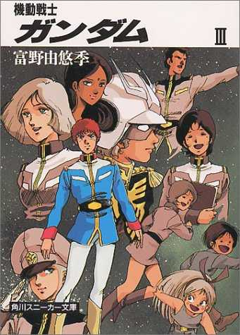

| [富野由悠季] 機動戦士ガンダム3 | |
| 富野由悠季 | |
| (2015) | |
|
機動戦士ガンダムⅢ
富野由悠季
|


ＰＡＲＴ 17
怨念
「これは仮定の問題なのだがな、大将......。ア・バオア・クーに地球連邦軍の兵力の大半が集結しているという保証があるのなら......」
さすがにギレン総帥も口を噤んだ。その彼の挙動に、チャップマン・ジロム大将は、不思議なものを見る思いに襲われた。物事を揺るぎないものとして断じて即論するギレンが、部下の前で口ごもるということは珍しい。たとえそれが二人だけであってもである。
「......ア・バオア・クーも『システム』のターゲットにしても良いと考えている」
チャップマンは息をのんだ。
「どうなのだ？」
ギレンは自分の物言いが自分らしくなかったことに気づいたから、最後の一語をいつも以上に厳しく言ってみた。
「つまり、現在進行中の作戦の間にシステムを稼動させようという命令と承ります。それにつきましては、不可能としかお答えできません」
ギレンは太い首をコクッと鳴らした。
「ランドルフ、ドズル、キシリア等の力を見くびっているのではないかな。大将？」
ギレンは明らかに回答をすりかえたチャップマンに怒りを覚えた。チャップマンは判っていた。ギレンが本当に言いたいことは、今、ギレンが名指した三人を含めてターゲットとしたいのだが？という問いであったということを......。でなければ、ギレンが口ごもりなどはしない。また、時の経緯の中でギレンがこれを実行するであろうことは予測もしていたチャップマンである。
「三人の力は数日間、ア・バオア・クーを保たせてくれる。つまり、マハルのシステムを完成させるだけの時間を我々は手にすることができると確信している。そうではないのか？」
「はい......。我軍の精強部隊でありますから、間違いなく......」
チャップマンは左の薬指で口元の髭を撫でながら、机上のファイルに目を走らせた。彼は、自分が極度に重大な立場に立たされていることを充分に認識していた。聞かねばすんだであろうギレン総帥の本音を聞いてしまった以上、ギレンはチャップマンのあらゆる行動と思考を監視するだろう。そして、結局は実行しなければならぬのである。
「......条件が難しすぎます」
チャップマンがようやく顔をあげて言った。ギレンは席を立って左側の壁面を開くボタンを押したところであった。左右に開かれた面には、四メートル四方の巨大なモニターが宇宙を映し出していた。
「言いたまえ」
「連邦軍の艦艇の大半の集結という条件は、我方の力で成立させるわけにはまいりません。システムを稼動させた時は戦争が終結するという保証がない限り、実行は不可能です」
「そういうことだ。が、戦略的に言えば、システムによるワン・ポイント攻撃ではなく、掃射するという事で可能性は充分にある」
「はい。それは......」
直径六キロ余りのコロニーをレーザー発射の本体に使おうというのが〝システム〟という暗号名で呼ばれる作戦である。掃射すると言っても、三度とか五度という角度でしか射角を変えるわけにはゆかない。が、ターゲットとの距離が数万キロともなれば、一つの戦闘空域のすべてをカバーすることができる。連邦軍艦隊の大半の集結という条件なぞ問題ではない。
が、味方をも殲滅するという条件が含まれた時、それは完璧に実行されなければならない。この絶対条件に対しては、二重三重の保証が必要であった。
「中立の立場をとらせていたサイド６のランク・ピロードキン首相に連邦との講和の可能性の探りは入れさせてある」
「可能性はあるのでしょうか？」
チャップマンは尋ねてしまってから、言いすぎた事を後悔した。ギレンに言葉尻をとられる！
「ああ、そう考えていいな。だから......」
ギレンはモニターの宇宙図を背にしてチャップマンの前に歩みよった。その口元にはかすかな微笑がうかんでいた。チャップマンは反射的に立ち上がりファイルを小脇にかかえるのだった。決定されたのである。ギレンは再度椅子に坐るや、
「タイミングも任せよう。できるな？」
「ひ、ひとつだけ条件がございます。三日以後ならば、八十パーセントの出力を得る自信があります。それまではお待ちいただきたい」
「リヴォルⅠ作戦は開始されている。戦況次第では今日の午後に発射することもあり得るがな」
「総帥！」
チャップマンは目を閉じて叫んでいた。ギレンの言っていることは、ドズル、キシリアを殺せということなのである。しかも、戦後にあと腐れを残さぬように殲滅しろということなのだ。そのためには、ギレンはア・バオア・クーを任せている彼の腹心ランドルフさえも巻き添えにしてもよいとしているのだ。これは必中必殺でなければならない。そのためにはシステムの出力が今日現在の五十パーセント強というのでは心許ない。残り三十パーセントの出力を得るための太陽電池とコロニー〝マハル〟とのマイクロ回線の整備を急がせる必要があった。が、その数は五百を越えるのだ。
しかし、チャップマンとて、それなりの野心ある将軍である。この機会は、ギレンの信任を得る最大のチャンスであった。これに成功すればチャップマンの地位は絶対的となろう。戦後を迎えた時に、ザビ家の外様であった彼がザビ家一統に加えられるのである。ドズルがなく、キシリアがなくなった戦後の処理を想像した時、チャップマンに与えられる地位はギレンに次ぐものとなろう。万難を排して試みるだけの価値はある。
チャップマンは明晰な男だ。腹心のランドルフをも巻き添えにせざるを得ないと断定するギレンの即断に、己の以後の人生を賭けることに一縷の危惧を抱かないでもなかった。が、今、禍根を一掃しておけば少なくともランドルフの二の舞いを自分が演ずる事はないだろうと予測するのだった。
〝残るのはデギンだけである これは所詮、傀儡にしかすぎない......〟
チャップマンの計算もそこまでに過ぎなかった。それをして彼の軽率と断ずることはできない。チャップマンの在るべき位置も極めて局部的であって世界を見通す場所ではないのだから......。
「リスクは判るから貴公に相談したのだ。チャップマン。私はレビルとのホットラインは持っていないが、本国の守備にあたらせている艦艇を投入することによって四十八時間ぐらいは保たせる用意はある」
「ありがとうございます！ 総帥！ 二日あればなんとか七十パーセントの出力は得られましょう。ターゲットさえ固定していただければ確実であります」
「ン......。期待している......」
その物言いは密やかであったが、チャップマンには判っていた。総帥は彼を階位ではなく名前を呼んでくれたのである。これは重要なことであった。ギレンがチャップマンをして朋友として認めたことを意味する。チャップマンは軍靴の踵を鳴らして挙手の礼をとると、ギレンの執務室を退出した。
ギレンはその後ろ姿を正面に見ながら、奴ならばうまくやってくれようと確信するのだった。四十五歳になったかならぬかだったなと思いながら、ギレンは先刻開いた壁面モニターに頭を巡らせた。
それはジオン公国を形成するスペース・コロニー群を遠望できる実景画像である。今、そのモニターの中のコロニー群は太陽を背にしてそれぞれのシルエットを浮かびあがらせていた。密閉型スペース・コロニーが大半を占めるジオンのコロニーは、その周辺に平均六枚から八枚の太陽電池を従えて、コロニー内のあらゆる生活エネルギーを供給している。他のサイドのコロニーにみられるように、三枚の巨大な鏡を使って太陽光線を直接とり入れるタイプでないのには、二つの理由があった。コロニーは円筒の内壁に遠心力によって擬似引力を発生させ、そこを生活の大地としている。密閉型にするとその円筒のすべてを大地とすることができるために、人口の収容能力が高くなる。第二の理由は、太陽嵐などの中に含まれる人体に有害な放射能の遮蔽力を強化するためである。
もちろん、過去の型のものであっても放射性物質に対しての処理は万全といわれている。が、未だ二世代から、三世代への交替期である。永遠の安全保障が証明されたわけではない。密閉型の実験台にされたのがこのサイド３のコロニー群であった。
それら密閉型のコロニーの中心には、かつての蛍光管のようなパイプ状の人工太陽がとりつけられて、二十四時間の生活サイクルを人工的に作っていた。春夏秋冬の時間差さえもつけられ、人類的な標準時間設定が成されていた。この時間と季節の発生管理だけは、地球連邦もジオンもなかった。恐らく将来とも変更されることはないだろう。一つ問題があるとすれば、地球の北半球の季節に合わせてあることが、時折、物議の種にはなった。南半球出身者が標準時間管理省の高官になった時に恒例のように提案されるのだが、それとてこの近年は忘れられつつあって、コロニーの時間と季節は北半球連動が自然となりつつあった。
ギレン総帥がこの何の事件も描くことのない映像が好きなのは、お上が、民草の生活が日々無事に営まれているのを眺める心境なのだろうと、側近達は笑いあった。
「皇帝かテンノーとかいう心持ちなのだろうよ。成り上がりが......」
ギレンはただ銀河の流れを眺めるのが好きなのだ。目を凝らしてみれば、数億の星々がつくりだす流れは不気味であるし、同時に華麗でもある。あのような巨大さとは何なのだろうか？と、想像するのが好きなだけである。が、これは他人に想像のつくことではない。ギレン総帥はあの漠然とした宇宙図を眺めながら、何号コロニーの誰彼を更迭し、何号コロニーの軍人と市民の人口比を半々にするとか、誰それの降格を思いついたりしているのではないのかと人々は噂しあっているのだった。ギレンにしてみれば、そんなことの決定こそ書類なり、モニターに送られてくる資料に目を通すだけですむ。景色をみなければ想像できないことではないのだ。景色を見ることとは、単に景色を見ることなのだ。それから生みだされる空想は、もっと夢であり、もっと広大なものであるのだ。
あの直径十八キロ、長さ七十キロの円筒の中に二千万からの人々が生活するということの想像も愉快かも知れぬが、そうではない。それらのコロニーが数百と漂う宇宙の存在そのものが生み出す現実、これがギレンを刺激するのである。人は、もっと跳べるのではないのか？無限といわれる宇宙に、人はもう少し己の存在を主張できるのではないのか？そして、自然大系はそんな人類の存在を許すだけ巨大なのではないのか、と思う。
「たかが百億、二百億の人類の存在がわずらわしいという宇宙ではあるまい。ただ、クズは必要ない。優れた人の存在を冒涜する以外のなんの存在価値のない人間はクズ以下であろう？......」
そんなギレンも、今はマハルの事が気にはなった。モニターの映像がゆっくりとパン（横にカメラを回す）させていって、満月を視界に入れてみた。が、マハルが視認できるものではない。わずかに数個のコロニーが太陽電池を従えて回転しているのが見えるだけである。定期便の船が赤と緑の灯を点滅させて流れてゆく。
マハルは、初期の密閉型コロニーで、直径六キロ、三十キロ長の円筒型である。〝システム〟とはこのコロニーの内壁をアルミニウムでコーティングして、二酸化炭素レーザーの発振器として使用する全作戦の暗号名である。無論、それを成立させるためギレンはマハルにジオン公国の三分の一の太陽電池を動員させ、その作業も終了に近い。そのために、一般国民に対してエネルギーの節約を呼びかけて徹底させているのだが、これが国民の危機意識を呼び、厭戦思想を生むことをギレンは憂慮していた。
ジオン国民は選ばれた民であって、恵まれた人々であるという自尊心を忘れないように仕掛けておかなければ、以後の施政全般に暗い影をおとすこととなろう。ギレンに対立する派閥が発生する土壌を、自ら耕すことはないのだ。それ故、この作戦は直接的に戦勝に導く性質のものでなければならない。
「ま、三人が粘ってくれよう。私には不可能という文字がない、と自惚れたい......」
ギレンは独りごちつつも、自分はナポレオンにはなるまい、そこまでは己の立場を過信はしていないと用心もできる。彼の父、現在のジオンの公王に祭り上げてあるデギンは、彼をヒトラーの尻尾と言った。
「あれは、父の弱気の言わせることだ......」
その己の増長を治めるために、ギレンは彼なりにあらゆる手段を講じていると信じていた。ア・バオア・クーを任せているランドルフ・ワイゲルマン中将は、そういう意味でギレンの真の朋友といえた。ランドルフの諫言には耳を傾けている。というより、諫言を得る友として信頼し、おいてあるのである。キシリアを刺す、という発想も、ギレンの思いつきであるより、ランドルフのもらした言葉がヒントとなっているくらいなのだ。数年前にランドルフは言っている。
「両雄、という言い方はあいませんが、キシリア様は鋭利すぎます。例えば、地球におかれたとすれば、第二の地球連邦という存在となって台頭してきましょうな」
ギレンにとっては妹でしかないキシリアに、それほどの才覚があると想像していなかったのだ。が、今次大戦でキシリアは明確に己の主権を主張する動きを示していた。フラナガン機関という得体の知れない存在に公費を注ぎ込んでいるのも、ギレンは後に知ったことであった。そして、その周辺から、かつでジオン・ダイクンという革命家が主張した、宇宙の民たる新しい人類という言葉の意味とはやや異なった意味合いで使われているニュータイプという言葉を聞いたのだった。
その動きがこの数か月、明確の形で戦場に現れ出して来るにおよんで、ジオン、地球連邦双方の将兵の間で、戦争終結へのエースではないかという期待感を持ってこのニュータイプという言葉が使われ出した。そのためのシフトをキシリアはかなり以前から施いていた......。彼女の先見性の成した業である。
シャリア・ブル大尉からは三日に一度の報告が届き、キシリアはすでにシャア・アズナブル中佐以下のモビルスーツ〝リック・ドム〟の一小隊をニュータイプ部隊と規定し、以後の増援準備もすすめているというのである。そして、ガンダムと呼称される地球連邦軍のモビルスーツを中心としたニュータイプ部隊との戦闘詳報も届いていた。
「ジオンの語るニュータイプとは違う......。超能力者集団とでもいうのか？」
ギレンも、シャリア・ブル大尉からの報告でそう誤解するのもやむを得なかった。シャリア・ブルこそ、ギレンがキシリアの下へ送りこんだ刺客といえた。無論、ギレンがキシリアを刺せとシャリア・ブルに言ったわけではない。が、一度の彼との謁見で、シャリア・ブルはギレンの心の奥底を見抜いたようであった。
「以心伝心というやつか？」
そう思いつつ、シャリア・ブルの感性の中に読心術に近い透徹した心の流れを感じて、ギレンはニュータイプが存在し得るのではないのか？と信じはじめていた。ジオン・ダイクンはかつて語った。
〝宇宙という新しい環境は、人に新たな変革を要求するだろう。第一の人類のルネッサンスを猿から人への変革であるとすると、第二のルネッサンスを封建から中世の文明を得た人類、そして、第三のルネッサンスとして宇宙を得た新しい人。
それは、より広大な時空をも一つの認識域の中に捉え、それによって一つ一つの事々へのより深い洞察力とよりやさしさを持った人ということである。なぜならば、かつて人は徒歩で移動し得る距離の中で国家（部族）を語り、次に乗り物による拡大した移動力によって国家という認識を超えたよりグローバルな世界観を得て宇宙へ進出をした。
そして、新しい人類は地球を離れ、地球を含む広大な空域を生活の場として認識する。その度に人は己の欲望と叡智を拡大し磨いたと信じよう。その人が、大地を跳んだのである。その跳んだ人々の思考と認識力は、巨大な空間を己の生活空間として認識することを欲望して、かつて利用することのなかった大脳を働かせた時、人はより高度に、より深く、より慈愛に満ちた精神を得ることができるだろう。
過去、人は己の持つ大脳細胞の半分の機能を使うことなく歴史を重ねたのである。その一人ひとりが眠っている大脳細胞を目覚めさせた時、人は変わろう。
宇宙！ この大地を離れた新しい環境こそ、過去に眠っていた人の考える力を目覚めさせるのだ。神が......神が有史以前から必要以上の大脳を人に与えたのはなぜか？過去の環境の中で人が生きてゆく上では、人は己の大脳の三分の一の機能を使えば良かったのである。そして、残りは、人がより人として生きるべき巨大な空域で、時空で生きてゆく時のために神があらかじめ用意されていた部分なのではないだろうか？
潜在能力という曖昧な人の力のあり方の中に、人は、現在考えられている以上の力を発揮できる部分があるのだ。宇宙の民よ。今こそ、己の眠れる力を宇宙という環境の中で目覚めさせよ。その時に、人は革新する！真の人のルネッサンスがあるのかも知れぬのだ！その時こそ、人は、広大な空間も、超えることが出来ないと信じられた時間をも超えることができるのではないのだろうか？
夢ではないのだ！ この宇宙という広大無辺な時空を生活の場としようと欲した時、人は時空をのり越える力を自らが持たなければ生きられぬのだ！〟
若き革命家たるジオン・ダイクンの演説は、ギレン・ザビの脳裏に明確に刻みつけられている。父のデギンがそのジオンの資金的なバック・ボーンとして存在しつつ、一つの政党運動へと盛り上げていった時、ギレンは父を尊敬し、ジオンの運動に全身全霊を打ちこむ決意をした。
「惜しむらくは、ジオンはアジテーターでしかなかった......」
それが、ジオンと行動を共にして数年後に気づいたギレンの感慨であった。それはデギンとて同じであった。コロニーの自治権を地球連邦政府に対して唱え始めた頃には、すでにその実質的な部分はデギンとギレンがおさえていたといっていい。が、ジオンはスターであった。二枚目であって情熱家。若い女性に一目惚れさせるジオンの力というものは、一つの運動を実体化させてゆく上では必要不可欠な要素であったのだ。それが、サイド国家論と地球聖域化論にと展開するころには、デギンとギレンがジオン派を指揮する立場へと立っていた。ジオン・ダイクンは語った。
「地球に居残る人々が、天を見上げて、天にある人の支配を成さんとするのは笑止である。宇宙移民者たちは余剰人口者として宇宙に追いやられたとするのが真実である。しかし、星々を身の周囲に置き、星々とともに寝食を共にした我々は、人として新しく生まれかわりつつあることを自覚せずにはいられない。
エネルギーは、太陽が燃え尽きる五十億年先まで得ることができ、宇宙の空域は無限といえる。残るは、我々の認識力を拡大して、この広大無辺といえる宇宙を生活のための場所と思考すれば良いだけである。あの星々たちも、我々が生きてゆくために存在するものと考えられぬのだろうか？神のあらせられる聖域を考えるのは誤りであろう。
我々は今や、宇宙の民としてこの厳しい環境の中で闘い抜き、世代を重ねてきた。そして、かつて人の歴史を築きあげてきた地球を見上げ、見下ろして思うことは何であろう？
そう！ あの縁なす地球、青く輝く地球こそ我々人類の発祥の星として永遠に守り続けなければならぬ聖域なのだ。一部のエリート意識に固まった人々の生活の場として残されたものではない。特権階級の象徴の場として汚させてはならない。これこそ、我々が宇宙の民として拡大した認識の力が判断させることなのである。
が、地球から離れることのなかった人々は、未だ大地を己の生きる場として存在するものと信じている。そして、汚し続けている。しかしその時代は終わったのである。
地球こそ人類の発祥の地、聖域としておかねばならぬ。一部の特権階級の持ち物ではない！
しかるに、大地の人々は、天をあおいで人類全体を管理運営しようとする。それが人類を永遠に繁栄させるものでないことは自明であろう。
サイドの自治権、コロニーの主権を持つことは、地球に存在する主権に拮抗させんがためのものではない。人類が一人残らず宇宙に跳び、地球圏そのものの主権をサイドの連合におき、地球を人類全体の聖地として守るべきなのだ。そのためのコロニーの拡大は容易である。
かつて、キリスト者たちがその宗教の発祥の地をめぐって血なまぐさい争いを演じた歴史があるが、我々はその過ちを犯してはならぬのである......」
このジオンの提唱が各サイドの人々に大きな共感を呼び、さらに地球連邦政府の絶対民主制が結果的にジオンに力を貸すことになった。絶対民主制は議会至上主義を生み、議会制の悪い機能が拡大して内包されるだけである。例えば無闇な立法が次々と成されて官僚の責任所在が不明瞭になる。小さな施策にしても官僚体制の縄張り争いの中で個人の欲望を満たすことはまずなくなる。不満が内在する。
その気配を感じとる連邦組織が存在しなかったわけではないのだろうが、いつしか連邦の体制は地球に残った人々に厚く働くようになり、その偏見が各サイドの自治権意識を高めてゆき、ジオン共和国という独立した存在をいつしか連邦政府に対して拮抗させる勢力として育たせようとする機運が生まれるのも必然といえよう。
この期に至り、地球連邦政府がその動きに歯止めをかけようとしたことが、共和制志向から公王制へとサイド３の運動が変転する契機を生み出したのである。共和制運動の組織を固めるためにギレンとデギンは反ダイクン派に対しての粛清を行ったのである。ここから、デギンとジオンの齟齬が生まれる。殊に宇宙世紀〇〇六五はジオン公国にとって、〝創業の暗黒〟の年と呼ばれた。ギレンの指揮下にある秘密警察（Ｓ・Ｓ）が、反ダイクン派二十万人の粛清を行ったのである。
その方法はジオン・ダイクンの主義に反するものであったにもかかわらず、ジオンが認めざるを得なかったのは、その翌々年サイド３は無事に共和国宣言を発して連邦から独立をした。が、そこでジオン共和国内の抗争が終わったわけではなかった。
共和国宣言の五年後にジオン・ダイクンは病死した。が、その三年後にジオンは公国制を発布して、ジオン公国が誕生したのである。その間、ザビ家一統とダイクン派の内部抗争劇を地球連邦政府は傍観し、ジオンの内部勢力が疲弊するのを待った。が、これこそ地球連邦政府の怠惰といえる。ザビ家独裁の路線が強固な形でとられ、ジオンは一瞬にしてザビ家独裁政権の中にとりこまれた。
ジオン創業の志とは裏腹とも思える体制に固まったのはなぜか？地球連邦政府の高官たちは戸惑ったものである。が、これこそギレンがＳ・Ｓを最大限に利用した戦略といえた。
連邦政府を倒さぬかぎり、ジオンの創業の志は達成できまい。この期は、歴史の一つの過程として国内は強力な体制のもとで事にあたらねばならない。国力の差もある。そのためには公王制に踏み切る。が、あくまでもジオンの志を遂げるための方便である。それ故、ジオンの名を消すことはできない。
ジオン公国として......。これこそギレンの方便の真骨頂といえた。ギレンは総帥として軍事、警察権の二つをその業中に収めた。そして、キシリア、ドズルの二人の姉弟も軍の主権を動かす所におかれた。ギレンに口惜しさがあるとすれば、すぐ下の弟のサスロがダイクン派との抗争の中で暗殺されたことであった。サスロの文官としての資質は行政府に大きな場を占めたであろうからだ。が、ここまでの体制をデギンが真に容認したか否かは不明である。
そして、この成り行きを知れば、ジオン・ダイクンの病死が当たり前のものではなかったのではないかと想像するのも自然であろう。
以来二十年、あと一息でその決着がつこうかという今に至り、ギレンが人の行く遠い将来へ思いを馳せたくなるのも判るというものだ。彼とてすべてを洞察して物事をすすめてきたわけではない。ただ他人と異なる点があるとするのなら、一つの局面をのり越えつつある一番の苦しい所で、次の目標というものを自分の中に想定することのできる強靭な精神を持っているということである。その新しい目標を想定することによって現在の難局を突破する力を得るのである。
チャップマンが退出して五分後に二人の人物との会議があり、続いてＳ・Ｓのランバ・ラル大尉が来た事がギレンに告げられた。
「隣へ......」
ギレンはインタフォンにそう答えて立ち上がり、上衣の襟をはずしながら隣の部屋へ向かった。より私的な気分で人と面談する時にギレンが使うことにしている小部屋であった。
女性秘書官セシリア・アイリーンが二人のために茶の用意をしていた。ランバ・ラル大尉は入り口の所に立ったまま、ギレンの入室を待っていた。
「相変わらずだな。坐って待ってくれれば良い」
「はい」
ランバ・ラル大尉は軽く会釈をするとテーブルについた。ひどく緊張しているのが、いつもの大尉らしくない。
「入れてもらおうか？」
ギレンの言葉に秘書のセシリアはワゴンからブランディをとり出すとティカップに注いだ。
「いただきます」
ランバ・ラルは臆することなくカップをとって口をつけた。ギレンは彼の飲食する行動が気にならなかった。節度と礼がみえるからである。そんな神経質な面のあるギレンは会食というのが好きではない。十人集まれば必ずギレンの癇に触る食事の仕方をする人物がいる。ギレンとの会食を意識しすぎて緊張しすぎる固さがその大半なのだが、それさえも許せない生理がギレンにはあるのだ。
ランバ・ラル大尉はカップを置くと、
「昨日までのシャリア・ブル大尉の報告はすべて目を通しました。彼の報告は、彼の性格から想像される書き方をしていません。極めて皮相な表現に終始していると感じられます」
「ン......」
ブランディの香りがよい。
「事実の羅列は大変正確と言えます。細部まで間違いないことと思われます。シャリア・ブル大尉の感想といえば、クスコ・アル中尉の死を残念であると書いている個所だけであります。キシリア殿についての表現も一度会ったというだけで、彼がキシリア殿についてどのような感じを受けたのかは一切書かれておりません。平凡なレポートという以外には評論のしようがありません」
「推測のレポートを書きたくなかったのではないのかな？」
「そういう人物ではありますが、気になります。とだけは答えられます」
ランバ・ラルは言い終わると軽く咳をした。その眼がギレンを見上げたようである。いつものランバ大尉らしくない物腰にギレンはひっかかった。
「私にはシャリアが用心深い男と思えたがな。それはそれとして、貴公の勘を信じてもいる。気になることがあるようだな、ランバ・ラル大尉？」
「は......」
彼の身体が震えたようだった。たくましい口髭がかすかにゆらめいて、
「シャア・アズナブル中佐の件に関して、我が身におよぶ事実を把んでしまったのであります......つ、つまり、私の父ジンバ・ラルが地球に亡命した折に連れていったジオン・ダイクンの二人の忘れ形見のうちの一人であると......」
ギレン総帥はカップを置いてランバ・ラルを凝視した。意外な人の繋がりである。ランバ・ラル大尉は、彼の直轄のＳ・Ｓの要職にある。ジンバ・ラルが父であるということを知っていたからこそ、一度服従すれば、真底ギレンの懐刀として忠誠を誓う人物であろうと信じて使ってきたのだ。現に、ランバ・ラルはよくギレンの期待に応えて働いてくれている。ギレンの好みに合うタイプの軍人である。度量と謙遜を兼ねそなえた好漢であった。
「キャスバル・レム・ダイクンだというのか？」
ギレンも吐息をついた。
「地球に亡命してマス家の名を買いエドワウ・マスを名乗り、宇宙世紀〇〇七〇にジオンに入国してアズナブル家に入籍しております。十八歳の年に士官学校に入り、以後は主席で卒業しております。非常時動員令で半年早くの卒業ではありますが......」
「動機は判らんのか？」
「そこまでは......。地球での捜査も充分にできない状況でありまして......」
「ジンバ・ラル殿は？」
「存命との報告が入っております......」
ランバ・ラルは顔をあげることができなかった。ギレンにとっても全く想像のしていなかったことで戸惑いの息をもらしながらも、ランバ大尉がこの事を負い目と感じすぎたら困ると思った。事態がどうであれ、ランバ大尉はあてになる男なのだ。
「......ハモンはまだ入籍させないのか？」
ギレンが唐突に話題を変えたので、ランバは何を尋ねられたのか分からなかった。
「クラウレ・ハモンだよ。式は挙げた方が部下に対してのしめしがいい」
「ハッ......。本人が納得しません。戦争でも終わって私が生き永らえる保証でもできたら考えようと申しております」
「ハハハ......。強情は変わらんな。もうじきケリがつくのだ。式を挙げろと私が言っていたとハモンに伝えろ。仲人も私がやるわけにはゆかんが、いい人物を見つけてやるとも言っていたとな」
「恐縮であります。私なりに万全を期して......」
そう言いながら、ランバはギレンが自分の気持ちを楽にさせようとしてくれているのが判りながらも、ますます萎えてゆく自分をどうすることもできなかった。
「大尉らしくもないな。案ずるなよ。私なりにキシリアのニュータイプ部隊のケリをつけるつもりだ。シャリア・ブルが曲者という大尉の見解に実は私も賛成だ。奴のレポートは即物的すぎる。私の内意を受けておらんのだ」
「はい......」
「ニュータイプ部隊をキシリアが知らずしてキャスバル・ダイクンに指揮をとらせているとなると......これは......初期の予定を実戦するだけだな......」
「............」
ランバ大尉はギレンがチャップマンに命令したことなぞ知るわけがない。黙るだけであった。しかし、そのラルの疑問に答えるようにギレンは言ったものだった。
「フ......。一挙にケリをつけると言ったろ？ Ｓ・Ｓもこの一両日忙しくなる。覚悟してくれ」
ランバは、ギレンの瞳の奥が不気味に輝くのを見逃さなかった。
「？............」
何かを考えている。ランバは直感した。
「気に病むことはない。私は戦後の体制作りを急ぎたいのだ......」
ギレンが最後の茶を飲みほす間に、ランバは判ってしまった。荒療治をやるのだな？では、今ギレンの出来る荒療治とは何か？戦後処理を含んだ......キャスバルまで含んだ手段とは何か......と。
「式もすぐやれるようにしよう。で、一つ知りたい。シャア中佐がどういう男か？......」
「数種のテープを入手しました。これがその調書です」
ランバ大尉が一冊のファイルを差し出す。かなりボリュームのあるものだ。ギレンはそれを一瞥して、やることが行き届いた男だと思う。
「ン......。退ってよい」
ランバ大尉は鮮やかな礼をすると退出した。ギレンはテーブルの下の小引き出しのインタフォンのボタンを押すと、左手のドアから先刻の秘書が現れた。今日の彼女はモスグリーンで統一したスラックス・スタイルである。そのシックな装いがむしろ彼女の豊かな肢体を際だたせていた。セシリア・アイリーン。黒に近い茶のロング・ヘアと同じブラウンの瞳を持った大柄な女性である。ルージュの赤が濃い。
「こういう事態は、私には苦手だな」
「はい......。けれど、ランバ・ラル大尉は率直な方です。好感を持てるという部分については揺るぎない方と見うけます」
ギレンはそうか、とうなずいた。セシリア・アイリーンは微笑を返すと、入ってきたと同じドアから退出する。これがセシリアの任務なのである。その人物観察眼の鋭さにはギレンも一目おいている女性である。登用して二年にならないのだが、有用であった。かといって、ギレン自身の居すまいをセシリアに観察させる事はしない。彼は、同じインタフォンにある監視モニター用のカメラのスイッチを切り、ランバ大尉の残していったファイルの中から一枚のカードをひきぬいた。ビデオ・カードである。手帳ほどの大きさのそのカードに三時間の映像が収録されている標準的なカードであった。壁にセットされたモニターにかけてみる。
シャア・アズナブルに関係した個人的に撮影されたテープをコピーしたものらしい。映像の状況は良くなかった。冒頭、士官学校のキャンバスの小路を歩く若いアベックが映し出された。青年の方は濃いサングラスをかけた金髪であった。女性が絡みつくように腕をかけて笑い合っていた。女性がカメラに気づいたらしい。青年が手を振りながらツカツカとカメラに近づいて、
「困るな。勝手に撮るのは......」
「ルルシュが撮ってくれと言ったんだ」
そう答える撮影者の姿はフレームに入ってこなかった。
「相変わらずお固いのね。シャア」
背後の女性......少女が口をとがらせて歩み寄ってくるのに目もくれず、金髪の青年はカメラに向かって「やめないか」と強く言った。
映像はそこで跡切れて数秒の間をおいて別の映像を映し出した。同じく、士官学校のパーティのもので、これは公式のフィルムからコピーされたものらしかった。ダンズ・パーティの俯瞰図から一組のカップルの映像に変わる。眼鏡をかけているが、サングラスではなかった。額にかかった金髪が揺れ、その青年のダンスが見事であった。パートナーの女性もよく合わせていた。
「!?」
ギレンはその時、金髪の青年──シャア・アズナブルの額に陰のようなものがあるのに気づいた。〝なんの傷なのだ？〟
しばらくダンスの描写があって、士官学校の卒業式の式典が映し出された。ガルマ・ザビ──ギレンの弟、正確には異母兄弟である──が、ギレンから首席の短剣を受けとる映像が映し出され、その次に前列に居並ぶ卒業生の中のシャアの映像が映され、それが固定された。ギレンは思い出していた。この時の首席はガルマではなかったのだが、唯一人のザビ家の人間ということで、短剣はガルマが受け取る式次第になったことを......。
「あの時、直接彼に短剣を渡していれば、私も思い至ったかも知れぬ......あの物腰はジオン・ダイクンの生き写しだ......」
シャアの戦功がめざましく次々と彼の昇進が上申された時に、ガルマは必ず口添えをしてきた。彼ならふさわしい。兄上も見知ってほしい男ですと。本来首席の特権である卒業式での短剣の受領をシャアから奪ってしまった詫を含めてのことですが、と......。
「子供だったのだな......」
ギレンはいまは亡き末弟の細い顎を思い出していた。モニターは、マスクをつけたシャア大尉時代の映像に変わっていた。戦場で防眩フィルターの故障から眼を痛めたという理由で、独特のマスクを着用しはじめた頃であった。
それを眺めながら、ギレンはようやく思いついた。シャア、いや、キャスバル・ダイクンがなぜあのマスクをつけるにおよんだかの理由と、彼の真の目的を......。
「我々に近づくつもりで、キャスバルはジオンに入りこんだのか......。でなければ、顔の半分を隠すようなマスクを常用することを思いつくわけがない......」
ギレンもキシリアも幼いキャスバルと遊んだこともある間柄である。それらのことをキャスバルはジンバ・ラルから聞かされていよう。ジンバ・ラルは老獪な男であると想い起こす。己の意思をジオン・ダイクンの子に吹きこみ育て、それを刺客としてさせむけることぐらいはする男なのだ。
そのために、彼は実の子ランバ・ラルを他人に預けて、自らはダイクンの二人の子供を連れて連邦に亡命するだけのことを成したわけである。それによってランバ・ラルがどの様な苦境の中で生きてきたかは知るまい。ジオンの大義を貫徹させるためにその子を育て、かつ、成人に近づくにつれて後はキャスバル自身の力に事のすべてを託そうとする。その方法論は、賭けであると同時に、もしキャスバルという青年が己の道を拓いてゆくならば、その過程でキャスバルは真の闘士として実力をつけてゆこう。おしきせでない力を身につけてくれば、ギレンにとってもこれは看過できない敵となる。
「妹がいた......アルテイシアといったが？」
ギレンはランバのファイルをめくってその単語を探した。
「サイド７へ志願移民......。医者になるつもりだった、か......」
彼女の以後の行動は不明と記されていた。これは問題あるまい。が、キャスバルは確実に実力をつけている。考えようによれば、ギレンに的を絞って近づいていると思える。ガルマを知り、首席となり見事な昇進。そして、キシリアの信任を得た。この件をキシリアは知るまい。知っていれば別の出方をしたろう。が、キシリアが欲しくなるようなニュータイプであり実績であるとすると、キャスバル・ダイクン......いや、シャア・アズナブル......。
「赤い彗星という渾名はだてではないな」
ギレン総帥は一人の若者の名前の中に、ジオン・ダイクンの怨念をみる思いがした。
<PBR>
ＰＡＲＴ 18
ドズル・ザビ
女性の手による平手打ちは力がこもっていないくせに、なぜこうも痛みが尾をひくのだろう。アムロ・レイ中尉は、眠りに入る束の間考えたことだったが、いつの間にか泥のように眠りにおちていた。夢もなかった。
あっという間に警報に叩き起こされた気分だった。五時間は眠っただろうか。下着をすべて真新しいのに取り替えたのも、ひょっとすると死に支度なのかも知れないと無意識のうちに考えた。
ちぢれた赤毛に思いっきりヘア・ローションをぶちまけて、まるで洗髪するようにマッサージをすると手早くブラシをかける。認識票を首にかけて上衣とスラックスで身を固めると、リフト・グリップにとりついた。無重力で体を水平にして運んでくれる。
パイロット・ルームにはすでに、カイ・シデン中尉、ハヤト・コバヤシ中尉、キリア・マハ中尉が、レモン・イエローのバトルスーツ（戦闘宇宙服）に着替えているところだった。
「よォ、色男！ いつ奢ってくれるのかね？」
カイ中尉である。
「この作戦が終わったらだ。ハヤト中尉もな？」
「高いよね。この度の件は」
二人とも、アムロがセイラ・マス軍曹に殴られたことを知らない。自分たちがモーションをかけていたセイラ・マス軍曹を、アムロに寝取られてしまった事に対してのオトシマエなのだ。男たちのルールである。たとえそのために一か月間酒保にいけなくなろうとも、堪えなければならない。色男は辛いのよね。
アムロは思う。あのシャアとかいう見ず知らずの男がセイラとの間に存在してしまってからは、アムロは男と女という情報をもってセイラに対してはいなかったような気がする。セイラに気づき欲望した時、ララァが埋めてくれることのなかった何か──それは人の生理的な欲望と断定していいだろう──を埋め合わせてくれる女性がセイラであった、と認めたのだった。それにセイラも応じてくれた。
その事が二人の間になれあいを生んだとすれば、二人ともに自分に対して甘いとしかいいようがない。共に許し、各々のすべてを託し、己の人格を反映させる相手として求めあったのではないといえる。
アムロはララァによって埋め合わせてもらえないものを、そして、セイラは兄──キャスバルに埋め合わせてもらえないものを、それぞれに求めた。その代償行為であるからこそ、二人の間にシャアという男が──アムロにはララァもだろう──が存在するのもやむを得ないことなのだ。それ故、二人が愛の擬態をとろうとも本当の意味での乾きが癒されることはない。
〝兄を倒して〟
そう言うセイラの言葉は、真に彼女の兄、キャスバルへの憧憬が言わせたことなのだ。それをアムロは許すことができない。アムロは、セイラとの間にララァを置く事を忘れるようにつとめた。が、セイラはそうはしなかったのだが......。
ニュータイプらしいアムロだから、そのアムロなら、なぜシャアの事を言わざるを得なかったのかという経過を判ってくれようと、セイラは判断したのだろう。しかし、それはセイラの身勝手な考えであった。アムロにとってみれば、シャアがいなければララァを殺すようなことはなかったはずなのだし、クスコ・アルさえも死なせずにすんだかもしれないという〝もしも〟の部分へのこだわりがあった。確かに、シャアがいたからこそララァやクスコとの出会いもあったのだという一方の論理はある。が、人の感性がそこまで平衡感覚を持って理性へ昇華することはあるまい。
〝都合で物を言ってもらっては困る〟
そう思うから、セイラのもらした言葉が二人の間での澱となって残ったのだ。それへの当てつけであった。先の交戦でシャアと接触した時に、アムロはシャアにセイラの言葉を投げつけたのである。
〝俺は、あなたの妹にあなたを殺すことを頼まれた〟
そういう意志を投げかけたのである。
〝本当なのか？ アムロ!?〟
シャアは反応は間違いなくアムロの投げつけた言葉──思惟と認識──を受けとめたからに他ならない。
が、気易いと思う。敵味方の戦闘中のモビルスーツのパイロットが呼びあうとは！これは戦場で行われるべきことではないのだ。
〝嘘が伝わるものかっ！ セイラに、アルテイシアにきいてみればいい！〟
それはアムロの嫉妬であったかも知れない。シャアの赤いリック・ドムが驚きに揺らいだようにみえ、明確にシャアの叫びがアムロの大脳に響いた時、怒りがこみあげたのだ。
兄妹とはこういう反応を示すものなのか!?これは脅威であった。だからであろう。それ以前のある瞬間、アムロはセイラに対しての当てつけの行動であろうとも、同時にセイラのことをもち出してシャアが動揺して隙の一つもつくってくれたら撃ちとれようと考えていたのだ。が、アムロはうかつにも〝嘘が、嘘が......〟と叫んでしまったのだ。その感情の爆発がアムロにも間をつくったのである。シャアはガンダムを回避して、コレヒドールの暗礁空域の中に消えた。損傷を与えただろうとは判っていたが、そんなことが何だというのだ？
みすみすシャアを取り逃したと責められたとしても仕方のないことなのだ。もし、この状況をニュータイプの第三者が感知していたという仮定の話ではあるが......。
「殺れば、あの時に殺れた！」
そんな口惜しさがあったし、兄妹という関係の情を一瞬でも垣間見た羨望が、アムロにセイラに報告をとらせる形をとったのだろう。
その時、セイラがアムロを平手打ちした理由はアムロにも判っていた。セイラは、シャアの事を話した後、アムロとの間を埋めようとつとめていたのだ。それはセイラのアムロへの謝罪なのだ。
アムロはパイロット・スーツのヘルメットと上衣をつなげる三重ヘファスナーを締めた。左耳にあたるヘッドフォンのコアを前へ回すとサンバイザーが閉じる。やや早いかな？と思いながらもアムロはサンバイザーを下ろして一番遅れてパイロット・ルームを出た。左右のヘッドフォンはオールレンジである。カイやハヤトたちの無駄話に混じってセイラ軍曹の声が聞こえる。セイラさん......金髪さんが傍にいる！
「金髪さん！ 愛しているよ！」
アムロは口の中で言ってみて、それが素晴らしい言葉であるのだろうと感じた。
＊
シャア・アズナブル中佐の独立三百戦隊の旗艦（といっても随伴艦などない）マダガスカルのエンジンの半分は死んでいた。アムロの所属する部隊との交戦によって受けた損傷である。マダガスカルが撃沈されなかったのは、艦長のブルース・マーシャル少佐の判断よりシャアの判断によるところが大きかった。
シャアはクスコ・アル中尉のエルメスが沈められると同時に残存戦力の退避を命じ、リック・ドムのシャリア・ブル大尉はよくその命令を果たした。半壊した三機のガトル戦闘爆撃機を回避しつつ──アムロたちはガトル隊を全滅させたと信じている──二機のリック・ドムともどもマダガスカルに後退した。
そのわずかな時間を稼ぐために、シャアは〝白い奴〟ガンダムと最後の交戦を試みつつ後退した。が、その時もシャリア・ブル大尉のリック・ドムはシャアを援護するという離れ技を演じたのだった。ガンダムが二機のドムの挟撃を予測して後退したことは明らかである。
コレヒドール暗礁空域は敵味方ともどもに幸いする。石っころを楯としてマダガスカルは後退した。ガトルはこの後のすぐの作戦には使えまい。残るはシャアを含めた四機のリック・ドムだけである。
「ク、クランブル中尉のような方が亡くなり、自分が生き残るなど、まだ信じられないのです」
ルロイ・ギリアム中尉がコーヒーチューブを傍らのチューブ掛けにひっかけながら、シャアとシャリア・ブルを見返した。彼こそ若い。学徒兵である。
「いや、ルロイ中尉だから生き残った。君の金的（戦艦を陥したモビルスーツのパイロットに与えられる呼称）は二つだったな？まして若いという事は貴重だ」
シャアはヘルメットをとり防眩マスクさえ外した。シャリア・ブル大尉は、おや？とそのシャアの素顔を見返した。意外の険のないその素顔に感嘆したのである。シャアが放射する思惟はやや暗く、それでいて未来を見通したいという欲望にシャリアは輝くような感動を受けることがある。その二つの表裏する心を兼ねそなえた人の顔のあり方が、シャリアの見知った人々から類推した時、いかつさとか鋭さというものに現れている。例えばそれがギレンであり、キシリアである。クスコ・アル中尉もそうであった。賢しさがみえるのである。
確かにシャアの眼光は鋭いといえるが、顔全体の印象はやわらかくて、若者らしい精気こそ放ってはいるが、出来た人物という印象で存在する。育ちのせいなのだろうか？それにしては経歴は安易なものではなかったはずなのだ。ルロイ中尉などは、シャアが端正な青年でありすぎるのに目を見張った。
「始めてだったか？ マスクをとるのは？」
シャアは二人の視線に苦笑を返して、ちょっと安心しすぎたかも知れんな、と笑ってみせた。
「このマスクには個人的なこだわりがあってな......。見過ごしてくれ。総帥の前でも外さないですませてきたのだが、諸君らの前ではガードはやめた」
ルロイはそのシャアの言葉に背筋をのばして感動を示した。シャアが若いということへの反撥はとっくの昔になくなってはいたルロイだが、こうも貴公子然とした人物であったという驚きは、さらにシャアへの信頼を芽生えさせることになった。
クスコ・アルの方がニュータイプのパイロットとしての適性が優れていようとも、ルロイたちパイロット仲間の間ではシャアこそ本当のニュータイプであろうと噂しあっていた。が、ニュータイプは超能力者なのか？人類全体が変革する新しい種としてのあり方なのか？というかつてのジオンが語ったといわれるニュータイプへの概念があるとすれば、クスコ・アルのあり方は超能力者的でありすぎる。すべての現れ方が突出しすぎてなじめない。しかし、パイロット仲間が密かに期待した、シャアこそ真のニュータイプなのではないのか？そういった漠然とした期待感がやわらかいシャアの風貌に接した時、真底、納得するのだ。
人は平凡なのだ。ニュータイプでも人全体の問題であるのなら、平凡な現れ方であるべきだ。ルロイにしても、ニュータイプとしての能力があるとフラナガン機関のチェックで判定されたものの、自分が超能力者であるなどと思ってはいなかった。元来、画家志望の彼は芸術家としてのセンスが人並以上にあるだろうという自負はあった。それに健康のために体操を五年ほど続け、彼の中ではそれが共存し得た。情熱家であり冷静な哲学者的要素もあると信じていた。それだけである。その彼の感性は、シャアの素顔を見て正確に納得する。
〝人はニュータイプたり得る！〟
シャアは金髪がもう少し茶色がかっていたり、眉間の傷がもっと鼻茎にかかっていたりしたら、ルロイとてそうは感じなかったかも知れない。が、人の係りあいというのはこういうものだろう。ルロイの画家としてのセンスの中に古代後期の芸術家ミケランジェロに心酔するところがあった。
〝ダビィデの像から力を抜いた平凡人の姿こそ、シャア中佐ではないのだろうか？〟その直感はルロイにとっては絶対的裏付けであった。
マダガスカルのブリーフィング・ルームは広くはないのだが、今は三人だけである。かつて同僚のいたと思われる空間は寒々と広い。
「ズワメルと接触するようにブルース艦長には命じてきた」
シャアはコーヒーチューブを口にしながら言った。ズワメルはキシリアが旗艦とする戦艦である。
「後退するのでありますか？」
「前進できるのか？......何処へ？」
ルロイはシャアに反問されて己の愚かさを恥じたが、そんな率直なルロイにシャアは笑みを浮かべて続けた。
「大尉......。こんなわずらわしいやり方はやめたいと思うのだが、妙案はないのかな？」
「中佐の判断は正しいと思われます。今はキシリア閣下と接触をして、以後の行動のための布石を探すのです。我軍のリヴォルⅠ作戦の布陣は容易に地球連邦軍の攻撃を許さないでしょう」
「論拠は？」
「戦力は五分でありましょう。それに、レビルはソロモンのドズル閣下麾下の戦力を過小評価しているようにみえます」
「なぜだ？ あの石橋を叩いて渡るレビルが？」
「はい......。システムに気をとられているからでありましょう。システムという超兵器らしき概念に捉らわれすぎて、ア・バオア・クーを陥すことを急ぎすぎております」
「ちょっと弱くないか、推論にしても......？」
「もっともですが、もう一つ考える要素があります。白い奴がニュータイプ用に開発され、我々のサイコミュに相当するものを搭載したモビルスーツだとしても、戦局全体を覆すほどの力はないからです。それは、我々も同じです。一個の超兵器が戦争を終結させた例は古来ありません。
それは、超能力者とか霊能者がいたとしても歴史に名を残す業績を残していないのはなぜか、という事と同じであります。歴史は時の大勢で決定されますし、その大勢の核に切りこまぬかぎりは......」
「大勢の核......。地球連邦はどうする？」
「ジャブローはすでに抜け殻です。殲滅する価値さえありません」
「............」
シャアは黙ってコーヒーチューブを置くと、立ち上がって壁面の十数個の艦内モニターに見入った。ルロイはそのシャアの後ろ姿を見やり、シャリア・ブルに目を転じた。
「我々が今後に成すべきことについて中佐はおっしゃっているのですか？」
「そうだな......」シャリア・ブルは笑い「しかし、もう少し待ってくれ。状況は予断を許さないからだ。我々には時間もなければ、協力者もいなさすぎる」
そのシャリア・ブルの物知り顔を、シャアは背中に聞きながらかすかな嫌悪感を抱く。
実は、シャアの言うわずらわしいこと、とはアルテイシアのことだったのだ。それはシャリア・ブルの全く知らぬことだ。もし、そこまでシャリア・ブルが知る能力があるとすれば、それこそ超能力者であろうし化物である。人ではない。シャアとて感情に左右される人間である。あの戦場という殺し合いの中での勘の激発がなければ、あの白い奴、ガンダムのパイロットとも思惟は繋りはしなかったろう。
セイラ・マス......アルテイシア・ダイクン、その二つを知り得るのはシャアと、二人の育ての親のジンバ・ラルしかいなかったはずだ。それをあの若僧が知っている。その経過は明白である。
〝アルテイシアの選んだ男だ。それほどやわではあるまい。現に、ララァとクスコを退けている〟それは兄としての苦い思いである。
「ガンダムのパイロットほどの男が我々の協調者であればと思うな」
シャアは背後の二人を降り返った。
「良い仲間となったでしょう。ジオンに敵愾心を抱いていなければの話ですが......」
「ン......。そういう怨念めいた気は感じないな」
「では、やはりニュータイプなのでしょうか？そのガンダムのパイロット？」
「真のニュータイプといえるのではないか？ ジオンがかつて語った新しき人のさきがけとは言える」
シャアは笑えた。
「さきがけ、良い言葉ですね。中佐。古代ルネッサンスが中世への道を拓き、人を変革させた。ニュータイプもそうだとすると第三のルネッサンスを人類は迎えつつあると考えて良いわけですね」
「どうかな？ ルネッサンス、人間復興という概念は歴史学者の認識論じゃないのかね？当事者たちが自分たちの行動をすべてルネッサンスであるとどこまで考えていたかは疑問だな。つまり、驕ってはならんということだ」
「しかし、かつての芸術家たちや哲人たちは、己の成すべきことを認識してました。それは事実です。ダンテもダ・ヴィンチもラファエロも......」
「すまないな。ルロイ。私はそれらの名を一人として知らない。まして、我々に天分があると現在の段階で言えるか？ということだ」
「そ、それはそうです」
ルロイはミケランジェロの名前を出すのを忘れたが後悔はしなかった。中佐が知らないと答えたら、なぜ知らないのかと悔やむだけだろうと思ったからである。
「しかし、目指したいですな。体制をスライドさせる必要はありましょう」
シャリア・ブルは静かに言った。
モニターの一つがブルース艦長を映し出した。後退しつつある空域で戦端が開かれたらしいという報告である。
「神のみぞ知る、だな？」
シャアはルロイとシャリアに片眼をつぶってみせた。
＊
ドズル・ザビ中将はジオン総軍中の突撃機動軍の司令である。その軍の呼称の通り宇宙空域での突撃隊的性格を持っているのは、ドズルの性格そのものである。ギレンとは異母兄弟に当たり、ギレンと全く性格を異にして、豪放粗野。軍人として生まれてきただけの男といえた。人相も悪人相であることをドズル自身は嘆いている事を側近は知っていた。その反動であろうか、妻子には極度にやさしい。またその彼の性格を知るからであろう、部下もよくなじみ従う。殊に、ギレンに対して自分の部下の評価をたえず高く上申して、彼には妻子もいるのだからというのを口癖としているのを知らぬ者はなかった。
そのドズルが怒るのも、レビルが突撃機動軍の拠点ソロモンを無視したからである。
「我軍を敵するに値しないというレビルの魂胆が気に入らん」
その発想が、十二時間前までソロモンの守備として残しておくはずであった艦艇にまで出撃させることとなった。ソロモンは裸同然となったのだが、レビルの戦力がア・バオア・クーに絞られそうな気配を示すとなるやドズルは万一という考えを捨てた。
この事が、レビルの計算外のことであったことが直ちに証明された。
チェンバロ作戦。これが地球連邦軍側のア・バオア・クー攻略戦の暗号名である。そのチェンバロが鳴った頃、ドズルのソロモンの艦艇も地球連邦軍の一角へ追撃を開始したのである。
ドズルは指揮官である以上に戦士であった。自らが陣頭に立って闘い、過去に一度はモビルスーツ〝ザク〟で戦場視察さえもしている。視察というのはあくまでも口実で、戦場に躍り出たという方が正しい。幕僚たちはあわてふためいて、三戦隊のモビルスーツを彼の援護にふるむけたものだ。〝ルウム戦役〟の時のことであるが、このエピソードは将兵の信頼を呼んだ。ザビ家一統といえども我々と同じに戦場に出てくれる。その共感は部下の掌握してゆく上で絶大な効果を発揮する。
ギレンもその噂を聞き知り苦笑したものの、さすがにたしなめた。その後のことである。ドズルは己を搭乗する、モビルスーツまがいの兵器を開発し、実用テストに入らせつつあった。人型に近いが手に相当するものがない。脚だけを生やしたような重モビルスーツとでもいうべき〝ビグ・ザム〟である。
モビルスーツを歩兵に例えれば、ビグ・ザムは戦車に相当しようという代物で、その全長はモビルスーツの数倍はある。主力火器は、機体の周辺に装備されたメガ粒子砲十六門で、同時に三百六十度掃射ができる。問題はある。あくまでも制式採用される以前の兵器は試作、実用のテストの段階であらゆる可能性がチェックされなければならない。モビルスーツそのものも実用化されて二年、まだまだ改良されなければならない点が多い。小型化。パワーアップ。まして、編隊運用上の使い勝手をいかに向上させるかなど問題は多い。
しかし、そこがジオン軍の体質とドズルの気性の現れである。兵器の試作と運用についてはかつてのナチス・ドイツのような新進の気鋭が満ち溢れていた。その成果がビグ・ザムである。
可能性があるならドズル自身が試してみる。駄目ならば捨てれば良いのである。本来、独裁志向の強い政治体制はその為政者一人の独断と偏向によってすべてが仕切られて、個人の意志が圧殺されるように思われる。が、科学技術は軍事という名のもとに振興をみて、技術者たちは己の目指すべき道と異なってはいても新たな技術を開花させるメカニズムは奇妙である。為政者に対して反逆の狼煙をあげて技術革新に手を貸さないという例は皆無でなかったろうか？
それはナチス・ドイツとジオンの軍事技術の現れ方にも軌を一にしている。科学者たち、技術者たちは、その技術が本来両刃の剣の性質を持つものだからやむを得まいとしよう。民需への波及効果をも言及しよう。しかしながら、戦時中にあっては科学者は自国の戦勝を願ってただ新たな兵器の開発にいそしむのである。
ドズルは旗艦ガンドワにビグ・ザムを曳航させて進出する。三つに分かれた艦隊は総計すると百余隻。ドズルに幸いしたのは、ソロモンの防衛に残したドロス・タイプの空母ミドロが遅れたことによって、後方から地球連邦軍を叩けたことによる。
アムロたちのペガサス・Ｊを先鋒とする地球連邦軍の右翼がその鼻づらをガンドワと接するころ、ミドロの中核とするドズルの艦隊が、後続の地球連邦軍を叩いた。それは一方的な戦いだった。歴戦のザク五十機が、ミドロを発したジッコ突撃艇、ガトル戦闘爆撃隊を支援して二十隻あまりの地球連邦軍の艦艇を殲滅したのである。
〝地球連邦のフライ・マンタなんぞ目じゃない〟というジオン軍パイロットの言う通りの闘いであった。
が、アムロ隊はそうはゆかなかった。コレヒドールを発して数時間。三つの戦隊と合流しつつ、ア・バオア・クーの傘を上方から進攻する前面に、ドズルのガンドワを中核とする戦隊と接触を持ったのである。
二百三戦隊と百六十五戦隊はともに戦艦と五隻の重、軽巡洋艦から成る。それのペガサス・Ｊとキプロスの二艦になってしまった百二十七戦隊。対するドズル隊は、ガンドワ以外に八隻の重、軽巡洋艦で周囲を固め、ザク三十機を直衛に襲いかかってきた。
ボールさん二十機、ＧＭ十機で支えきれる数ではなかった。殊に、ボールはモビルスーツの前期型のモビルアーマーもどきである。ザクにとっては玩具に等しい。ＧＭは確かに量産型モビルスーツであるが、ガンダム、ガンキャノンの試作中に量産にもちこまれた代物で、決してモビルスーツとして完成した型ではない。ザクとの性能は互角といえても、パイロットの練度に雲泥の差があった。が、ともかく戦力比は五分と五分としておこう。アムロのＧ３、すなわちガンダム、カイ中尉のＣ１０８、ハヤト中尉のＣ１０９のガンキャノンとキリア・マハ中尉のＧＭ３２５の四機のモビルスーツが傑出した働きを示したからである。
たとえどんなに長く出来たノーマルスーツ（宇宙服）であっても耐圧、耐熱をベースとした生命維持装置が装備された服である。ジィンズのように体をなじむというものではない。しかし、パイロット・スーツと称されるパイロット用のものは、一般的なノーマルスーツに比べてより高品質のガラス繊維とフレキシブル・プラスチックによる混紡の五重織りによって、地球上でかつて使われていた高々度与圧服ぐらいのボリュームですんでいる。
しかし、これさえも、いまやアムロの反射神経に反応する肉体の動きを邪魔する。確かに、運動神経が鋭敏とはいえないアムロではあるが、パイロット・コースでの訓練は一般人以上の練度を持つに至ったし、戦場での〝火事場の馬鹿力〟的な瞬発力も拡大しはじめている。そうなればますますパイロット・スーツの機能が邪魔となってきていた。裸で操縦できればもっと楽であるはずだ、といういらだちは欲求不満を生む。
皮膚が絶対零度という温度に耐え、皮膚呼吸をしないですむ身体ならば、眼の前の戦場のすべての〝気〟を読みとることさえ不可能ではないとアムロは思う。これはアムロの傲慢である。
右のモニターに接近するザクを目視するや、アムロはガンダムの機体を揺するように転回させてビーム・ライフルの狙撃を加えた。この会戦での三機目のザクであった。左右五十キロにはカイとハヤトのガンキャノンが位置してザクを追いこんでくれるからである。アムロは後方に支援として位置するキリアの動静を心配することなく狙撃をつづけた。いつの間にか出来上がったペガサス・チームのシフトである。左翼から再びハヤトの叫びが聞こえたようである。火線が長く尾を曳き、それをかいくぐるように飾り棒を額につけた中隊長機がガンダムの方向へつき進んできた。四機目......。
そのザクの爆光に一瞬目を奪われたアムロの死角に別のザクがすべりこむ。アムロはあわててビーム・ライフルの引き金をひいたが、これは外れてザクは右方、カイの方位へ機体を捻った。その数秒後には間違いなくカイのガンキャノンの発した火線にとりこまれるようにしてザクが沈む。四機チームはすでに七機のザクをしとめたことになる。真に連戦連勝といえた。
が、アムロは己の傲慢をかすかに恥じた。欲求不満の生む驕りが、死角にザクをとびこませることになったのだ。それも、若い単刀直入な兵の操るザクを、だ。これは恐ろしいことといわねばならない。剣客同士ならば、技の流れがあり、それを読む筋が生まれる。それ以上に達人になった時にはその変化を読みとることは至難の技となるが、しかし練度は、それさえも読み飛躍した対抗手段を生む。死中の活と一言で現される境地とでもいおうか。が、自暴自棄の剣士の刃は時にして剣客のあしらいを難しくさせる。その場合、一気に止めを刺すわけにはゆかない。手足から払ってゆかねばならない。相手が死中の活であるからだ......。
アムロが剣士であるわけではないが、敵対者同士、まして上下左右どこからでも襲いくる敵に対して剣士に似た気を持って猪突していることは事実なのである。できることなら、虚無に近い心的状況で襲いくる敵意を読み取る必要があった。傲慢こそ敵である。パイロット・スーツは厳然としてアムロの肉体とを守る機能を果しているのである。その条件については彼我ともに同じであるのだ。
そのアムロの冷徹さがようやくこの空域での敵の核を見いだした。
〝これが俺に与えられた素養か！......ニュータイプとしての！〟
アムロは己の状況に対しての洞察力が拡大しているのに感謝した。ザクを何機撃墜したところでこの空域での会戦は終わりはしないのだ。が、ここで敵の旗艦を葬れば勝負は決すると判ったのだ。その旗艦......ドズルのガンドワ......がアムロの左下三十度に位置しているのを知った。
客観的に言えば、旗艦を叩くのはセオリーであり当たり前の判断をいうことになる。現にドズルの艦隊中で戦艦はガンドワ一隻のみである。とりたててアムロの判断が秀でたものとは思えないだろう。しかし、その判断こそ迂闊である。幾億もの星々を背景とした宇宙空を背景にして百キロ先の物体を目視することができると思えるのだろうか？現実の戦場が映画やテレビやホロスコープの娯楽作品に示されるように敵味方が判断のつくような絵柄の配置として現れることはまずないのだ。宇宙を背景とした時、その画は地球上のドッグ・ファイト以上に目視し得なくなっている。にもかかわらずパイロットたちは目視を強要されるのだが、言うほどに目というものは、星の輝きの中から敵という芥子粒のような物体を視認することはできない。そんな空域の中でアムロはこの戦場空域全体を支配する力を感知したのである。
〝どういう敵だ......しかし、間違いなく圧倒的な気を感じる！〟
その気はガンダムの装甲を通して、重くつきあげる波動となって流れこんでくる。アムロは下方にわずかにガンダムを変針させながら、左右と後方にコンマいくつかのレーザー発振をする。カイ、ハヤト、キリアらについて来いというサインである。四機のモビルスーツは一辺を二十キロの菱形の編隊をとって太陽に向かって降下するようにみえた。その間にもう二機のザクと、ムサイ・タイプの巡洋艦を撃破していた。
その同じ頃、ドズル中将はパイロット・スーツに身を固めてビグ・ザムのコクピットに入っていった。ビグ・ザムの核融合炉の噴き上がりはいいようだ。
「まだ陥せんのか」
ドズルは指揮官席の前に並ぶ二人のパイロットに吠えた。
「異常です！ 二機か三機でモビルスーツが、まるで赤い彗星のようにガンドワに向かってます」
「シャアはいい！」
ドズルはヘルメットを被りながら怒鳴った。赤い彗星のシャアがなんだというのだドズルの末弟のガルマを守りきれなかった男ではないか。それを理由にドズルはシャアを罷免したのである。それをキシリアが拾いあげようが、それは関係のないことである。が、思わず部下の口からシャアの名前がでるということは、あたかも自分の処置が早計であったと非難されているように感じるドズルであった。
「直衛もいらん！ そのモビルスーツ隊はこのビグ・ザム一機で殲滅してみせよう」
自分の神経質な感じ方の反動が、彼を獰猛にさせる。ビグ・ザムを曳くガンドワの曳航索が切り放されて、ビグ・ザムは飛翔した。
ビグ・ザムはその二本の脚の間にある三つのノズルから巨大なロケット光を伸ばして、アムロたちモビルスーツ隊に向かって上昇を始めた。それは重巡洋艦のフルパワー時に匹敵する。
「連中がニュータイプだから我々が蹂躙されるという話は聞けんぞ。マクロファン隊は地球連邦の後方の壁をつき破ってくれているのだ。逆ではないか！」
ドズルの怒りはもっともなのだ。本来、ソロモンから発したガンドワ率いる部隊は宇宙機動軍の主力であるのだ。それがたかが数機の地球連邦の出来合いのモビルスーツによって一敗地にまみれようとしている。しかも、真っ直ぐに自分の旗艦に襲いかかる自信を示して降下してくるのである。この戦いを勝ちに持ちこめば、地球連邦の一角に穴があくであろうと予測があればあるほど、ドズルにとっては屈辱的である。会戦二十分で戦力は半減しようとしている。それも縦に切りこんでくるモビルスーツ隊に駆逐されるような形であることに、ドズルはいらだちを覚えた。
「人間が戦争の道具のようにうまくやれるわけはない！ニュータイプが実在するなどという戯言はきけん！パイロットなぞパイロット・スーツに小便を垂らすのが仕事よ！」
「一時の方位！ 上弦十一度！」
右上のモニターが数度映像を固定させるために走るや、灰色のモビルスーツの映像を拡大した。
「白い奴というのはあれか」
「迷彩を施しているようです！ ガンダムです」
パイロットが怯えたような声をあげた。ドズルの言う通りこんな時のパイロットはよく漏らしている。が、自分で気がつくのは生きのびて小便用のカプセルをチェックした時でなければ判るものではない。
「ビーム砲を持っているといっても、たかが一門だろう。このビグ・ザムの火力の方が優っているのだ！照準を急げ！」
ビグ・ザムの機体はお椀を上下にかぶせた型と思えばいい。その中央に横に並べられたビーム砲が十六門。ビグ・ザムの機体は直径十五メートルほどである。そこに砲身を持たない十六門のメガ粒子砲が装備されたのも、ビームの加速装置が超小型化されたからである。これは驚異的なことといえた。むろん、上下に死角が生まれるものの舟型より優れた機動力で十分にカバーすることができる。
ビグ・ザムの正面四門のビームが、コンマ数秒の間をおいて発射され、それがあたかも噴き出した花火のように拡散してみえるのも、各砲身がわずかずつ角度をかえる掃射によるからである。
「四機です！」
パイロットが再び悲鳴をあげたが、今度はドズルも同じであった。確かに四機のモビルスーツが航跡を曳いてビグ・ザムの掃射を回避するや、次にビグ・ザムに向かって収束するような航跡をとったからである。
「四機!?」
その四機の流れは強固な意志をもってつきすすむようにドズルには見え、背筋に悪寒が走るのを感じた。たまたまビーム掃射を回避したのなら判る。が、そうではなく次の瞬間にはビグ・ザムを明確にターゲットとして認知した動き方であった。
その動きに敵の強固な意志がみえた。ドズルは決して愚鈍な戦士ではない。
「弾幕を張れ！ 回避運動をしつつ......！ 一門を俺に回せ！」
ドズルは叫びつつ、己の正面のパネルの照準を開いた。正面にレーザー・センサーのデーターから生み出された擬似モデルが現れる。至近距離ともなればかなり当てのできる代物だ。ドズルは中央の一門の引き金を手に入れるや、正面の一機に狙いをつけて、撃った。三射である。が、すべて避けられてしまった。
再びドズルの背筋に悪寒が走ると同時に、先刻の直感が正しかったことに慄然とする。過去の例からすれば狙撃できたはずなのだ。一瞬間、コンピューター表示が狂っているのではないのかと疑ってみた。が、エレクトロニクスの機器の中では、この照準スケールほど原始的な性能のものはなく、まず狂うことなどあり得ないのである。
「シャアと同じだというのか!?」
ドズルは吠えて、最大戦速をもって四機のモビルスーツの上にたとうとビグ・ザムにフル・パワーをかけた。六Ｇほどの加速がかかる間に、ドズルはモニター上の四機のモビルスーツの動きをチェックした。あくまでもコンピューターの推測データーであるが、十数秒間に読みとったデーターから多少のものが手に入り表示される。敵機の質量とか対機速度とかという物理的なものだが......。
「うしろの奴が遅いのか？」
ドズルはそう判読しつつ、己の位置が敵に対して上をとりつつあることにかすかな満足を覚える。無重力帯での上下感覚はないというものの、人間の生理はそうではない。己が立っているという意識の中での上下感というものは間断なく存在し、その生理的上下感の生む上の位置という認識は大きい。
が、この生理的上下感覚は、今の場合は全く逆にアムロたちに働いていた。
アムロのモニターは下にまわりこむビグ・ザムの機影を捉えた。
「早いぞ！ モビルスーツらしい」
それ以上のことは判らないだけに、アムロは半分以上自分の声の聞こえない僚機に喚かずにはいられなかった。
「ザクではない。スカートつきでも、とんがり帽子でもない......何だ？」
アムロはわずかな瞬間、そう反問したが、そのことで己の行動を遅らせるようなことはしなかった。もう三射、ビームが嵐のように襲ってくるのを感じ回避するだけの余裕は持ち合わせていた。攻撃をしないで突進し続けたのも、ただビーム・ライフルの充分な有効距離が得られなかったにすぎない。それは、カイやハヤトにしてもそうだろう。ようやく、ガンダムの左右に位置するガンキャノンの双肩のキャノンが火を噴いた。至近距離での爆光が起こるが、致命傷ではないらしい。
その瞬間、アムロは急ぐべきだと判断をした。あの戦場を支配しつつある〝気〟は、眼前を降下していった物体から発している。旗艦と思われるものからではなくなっている。
「惑わされたものだ」
アムロはガンダムをビーム攻撃からかわしつつ、ライフルの照準をとった。超望遠のスコープがビグ・ザムの二本の脚を目視させた。
その瞬間、ガンダムのビーム・ライフルが光条を曳く。
ドズルは息をのんだ。前の二人のパイロットが悲鳴に近い喚き声をあげながらビグ・ザムを操るが、制止できるものではなかった。初弾からこうも正確な射撃ができるモビルスーツはジオン軍の中に一人もいないだろう。たとえそれが赤い彗星のシャアであってもだ。
「反転！ 逆噴射をかけろ！」
極度のＧは身体を締めつけるようにかかり、左右の鎖骨が折れるような痛みがはしった。頭から血が下がってゆくのが判る。しかし、貧血にかかってはいられない。現に二波目のビームがビグ・ザムの頭部ともいうべきあたりをかすめる。ビーム束の周辺の粒子がつきささりもしたろうが、ビシンという異音がヘルメットごしに圧力となって伝ってくる。
本能の恐怖がさせるだけである。ビグ・ザムのビーム砲が気狂いの様に四機のモビルスーツに掃射される。
「陥ちんのかっ！」
ドズルはパイロット・スーツの耐圧装置が想像以上に己を貧血症状にさせなかったことを感謝した。己の強靭な肉体に対してもだが......。
「キリア中尉！ よくついてくる」
アムロは後方についてくるキリアのＧＭ２５がアムロの初弾撃ちを待って攻撃を加えはじめたことに感嘆をしていた。パイロットとしては同期にあたるキリア・マハ中尉ではあるが、ガンダム・タイプの量産型モビルスーツのＧＭが配属されたのは極めて最近である。まして、キリアの実戦はテキサス・コロニー以後である。数度の敵との接触の中で学んだ彼の実戦学習能力は極めて高い。つまり、状況を読み、アムロに対しての支援という形の中での己の役割を極めて冷静に判断するようになっていた。
ビームの直撃によって起こる閃光は、火薬による輝きよりやや透明感がある。恐らくキリアのＧＭの狙撃が二本脚に当たったのだろう。
「！」
あてになる仲間だとアムロは思った。が、キリアの直撃ビームは致命傷ではないようだ。二本脚からのビーム掃射はますます熾烈になってくる。間合いは充分だと思った。アムロはガンダムを下百五十度ほどに変針させるや、二本脚の下へもぐりこむコースをとった。その時、相対する二者の左翼から戦艦が進入しつつあることを忘れてはいなかった。まだ保つ！時間はあると判断したアムロは照準を確認して、一射、......五射までである。
直撃の閃光が拡がる。二本脚は確実に狙撃したと思え、た、のだが......
「チッ！」
アムロが舌打ちをした時である。ガンダムの左翼に移っていたキリア中尉のＧＭが閃光を拡げていた。その狙撃を二本脚からうけたのか戦艦からうけたのかは判らない。左翼モニターに味方機撃破のサインが鮮やかな黄色で非情に示された。
「畜生めーぇ！」
カイ中尉の叫びが雑音越しに聞こえてきた。
二機のガンキャノンは、キリアのＧＭの爆光の照り返しの中、戦艦へ向かった。二本脚はアムロに任せてよいとカイもハヤトも判断したのだろう。アムロも二人の判断を良しとして、正面に二本脚を探した。まだキリアのＧＭの爆光は消えていない。その光に助けられて、アムロは素早く一本脚になった二本脚を目視した。機体の向かって右側に被弾したのだろう。スパークが間歇的に発してあたかも傷口の鮮血にみえる。メイン・エンジンは健在であるのだろう。通常のザクの突攻に近いスピードで視界に迫ってきた。
「エンジンか？ コクピットか？」
どちらを狙い撃とうか戸惑ったのも、全く新しい型式のモビルアーマーであったからだ。このアムロの一瞬の思考がガンダムに隙をつくったのだろう。二本脚の左側の砲門が開いた。ガンダムの左手の楯があっという間に溶けて、その余波でガンダムの左腕の先端も焼かれたようだったが、その間にガンダムの機体は上方に翔び、二本脚を足の下へおいた。
「陥ちればいい！」
アムロは怒声を発しつつ、ライフルを一射する。二本脚の機体上面からビームがつきぬけた。メイン・エンジンへの直撃も明白だとアムロは判断した。外形から推測される判定である。二本脚はブロロッと機体を震わせた。機体がゆったりと傾いてゆく。
「............」
アムロは不安になった。爆発しない？ ビーム・ライフルのパワーでは機体を貫通させるだけの力はなかったのか？アムロは再度照準を合わせて、機体中央のコクピットが存在しているだろうと思われる位置に狙いをかえた時であった。パッと拡がる霧をみた。
「！............」
アムロは引き金にかけた指が呪縛でもされたように動かなくなる恐怖にとらわれた。
「なんだ？......」
黒い霧である。それは内に拡散する力を秘めた霧であった。ビグ・ザムのコクピット周辺から噴き上がり、四方に拡散しつつも真空域の中に消えることのない雲の形となってゆく。それはあたかも太古の人々が幽霊と称したものと同じではないのだろうかとアムロは思いついた。
「？......！......」
アムロはガンダムを捕まえようとする意志を示す霧に、思わずガンダムを後退させようとした。
「な、なんだ!?」
アムロは左右の腕を操作したが思うように動いてくれない苛立ちに駆られた。霧に捕まるのは危険だ！しかし、ガンダムはアムロの意志よりはるかに緩やかに後退してゆく。
宇宙で霧が形を示すことなぞありはしない！
「化物だというのか!?」
アムロはあえて解答を出す。見間違いだろう。恐らくは爆撃された機体内の爆煙とかが放出されたのだろうと思いたかった。そういう性質の霧ではないことを充分に承知しながら、そう思いたかった。
数秒たったろうか。その霧が一つの形となってアムロの視野に映じた。アムロは強がりの解答さえも呑みこまざるを得なかった。
物の怪の形があるとすれば、このような形であろうと思えた。ガンダムを、アムロを見すえるような黒い霧の形に双眼が輝いて、拡散したのだ。双眼？......
その眼光が宇宙の星々を背にして識別できたということはどういうことなのだろうか？黒い霧状の物の怪の形もみえたというのは？
「............」
アムロの全身は震えていた。
「な、なんの恨みだ？ なんの呪いが俺にあるというのだ？......」
アムロはあの双眼の怨念をもって自分を見たと感じたのだった。
「じ、冗談じゃないよ！ 俺はただのパイロットだ！」
カンカンカン！ ガンダムの機体に機銃がライフル弾が当たる音が響き、ヘッドフォンも感知した。アムロは瞳孔が二本脚の機体の上面、黒い霧を発したと思われるあたりに移動した。二機はひどく接近していた。その二本脚の上甲板に相当する所に一人のノーマルスーツが仁王立ちしてライフルを撃ち続けていた。そのライフル弾がガンダムの装甲にはじける。
「!!」
アムロは判った。この全空域を支配した〝気〟の持ち主である。
「なんだ？」
その姿は滑稽である。ライフルでモビルスーツを倒せるわけはない。にもかかわらず、そのノーマルスーツの男（だろう）はマガジンを取り換えるや再びガンダムに向かって発砲してきた。
その小さな姿に、アムロは急激な怒りが発するのを抑えることができなかった。黒い霧の元凶はこいつかも知れない。それが、猪口才にも発砲をする。
「こんな奴がいるから、戦争は終わらんのだよ！」
アムロの怒声がアムロ自信の耳をうつ。
その時、ビグ・ザムの甲板に立つドズル・ザビ中将の頭の中には、妻ナルスと誕生日を迎えていない我が子ミネバの事しかなかった。
「やらせはせん！ モビルスーツ一機ごときにこの戦場の勝敗を決定させるわけにはゆかん！やらせはせん！」
それがドズル・ザビ中将の最後の喚きであった。ガンダムのビーム・ライフルがドズルを直撃し、ビグ・ザムを撃破した。
<PBR>
ＰＡＲＴ 19
後退
ア・バオア・クー攻略のチェンバロ作戦は容易ではなかった。前面へ突出しすぎたペガサス・Ｊと二つの戦隊はドズルの艦隊を撃ち破りつつあったものの、本来、ア・バオア・クーの傘の部分へとりつくはずの後続の本隊がソロモンから発した艦隊との遭遇戦によって大敗を喫していた。
レビルとカラルの主力艦隊は確実にア・バオア・クーとの間合いを詰めていったものの、長時間の戦いによる損失を出すわけにはいかない。少なくとも、ア・バオア・クーへの攻略戦は一気殲滅でなければならない。ところが、三つの主力のうちの一つが敗れたとなれば、作戦を変更せざるを得ない。それは大局論である。
「ペガサス・Ｊは進行を続けているようだ」
レビルはこだわったが、数機のモビルスーツを主力とする部隊をもって、人は一艦隊の働きを予測するだろうか？所詮はモビルスーツは人型をした格闘専用機だという偏見は根強い。しかし、レビルはペガサス・Ｊとその三機のモビルスーツの力を信じて、
「ア・バオア・クーを奪る方が早かろう」
として、側面の敗れを気にすることがなかった。それを独断とするのは早計である。しかし、前面に展開するア・バオア・クーの直衛艦隊も強力であるし、ランドルフ麾下の要塞守備隊も用意は怠りなかった。
殊に衛星ミサイルと称する小惑星の破片にロケット・ノズルをつけただけの原始的な道具は、真に石投げ器の石に相当するわけなのだが威力を示した。直径五十メートルから百メートルほどの岩が投げつけられることを考えてみよう。回避は容易であるとはいうものの、これほど安価で大量に使用できる兵器も古来まずあるまい。すでに数隻の艦がこの岩の直撃で沈んでいるのである。漫画といえばそうであろう。現代科学の粋を尽くした艦艇が岩を放り投げられて沈むのである。この兵器価格効率からいえば圧倒的にジオンに勝算があった。
この衛星ミサイルの第一波攻撃以後、地球連邦軍は戦力を横に拡げすぎたようである。これは、ア・バオア・クーからみれば確実に包囲されるという恐怖感を煽った。しかし、ランドルフは冷静であった。
「各個に撃破しろ！ 伸びすぎた点の撃破は容易である」
そのア・バオア・クーの動きにレビルはわずかに動揺を示して、
「戦力を固めるか？ ア・バオア・クーの一点に集中して切りこもう」
傍らの幕僚が了解したと答えた時に、艦隊はレビルが予定した動きと異なる展開をみせた。
〝チェンバロの弦が切れた〟という暗号信号がドラッグから発せられたからである。
その意味するところは撤退。戦力を固めるとレビルが言ったことは、戦場での集結と理解しなかった幕僚のミスであった。
レビルは内心でこの齟齬を呪ったが、いやしくも戦場のまっただ中の戦艦の司令室で幕僚を叱る愚挙はしなかった。確かにモニターの幾つかにはア・バオア・クーの姿が超望遠のカメラに捉えられて、間断ないミサイルの発射光が目視できるのである。あれをみて恐れない人間がいるわけがなかった。その怯える心が、レビルの戦力を固めるという言葉を再集結と理解して暗号文上の〝弦は切れた〟になる可能性は充分にあったろう。
「本隊はコレヒドール前面のソロモンの艦隊を殲滅する。カラル隊は本隊の支援。急がせろ」
一部の幕僚の中には撤退のコード発信が成された時、色をなした。戦端は開かれたばかりで彼我の態勢についての優劣なぞ判定していなかったのだから......。しかし、次のレビルの命令によって再び作戦司令室に生気がよみがえった。
「なぜだ!? このままこの空域にとり残されたら我々は袋叩きに合う」
ペガサス・Ｊのブライト・ノア艦長は血が頭にのぼるのが判っていた。前方に位置する二つの艦隊は先刻の戦いでかなりの損害を受けていた。しかし、ア・バオア・クーへ直進するコースを変えようとはしていなかった。
「間違いありません。アルファ・ゲイン・コードでチェンバロの弦は切れた、です」
セイラ軍曹はキャプテン・シートのさらに上、クレーンの上部に位置するオペレーターのマーカー・クラン少尉に目で尋ねながら応えた。
「コードは間違いありませんが、変ですね。レビル艦隊の動きはチェックできませんが、フォトフェス部隊はソロモンからの艦隊と接触中です。レビルが見捨てるとは思えません」
「推測か？」
ブライトはシートに深く身体を沈めて言う。右上方で最後の閃光が拡がって消えていった。前方左右の艦艇が忙しく動き、兵員の救助にあたっているらしい。と、ブライトの右方にある吊りモニターが開いた。
「二百三戦隊司令グロアだ。百二十七戦隊は直ちにフォトフェス部隊の援護へ向かってくれ。こちらも兵員収容後、追いかける。弦が切れたとは思えん」
「了解であります。大佐」
ブライトは挙手の礼を返すとセイラの方を見た。セイラ軍曹は背中をむけたまま、そのブライトの動きが判るかのように応答する。
「Ｃ１０８、帰艦」
「よし！ ペガサス回頭！」
ブライトは短く言うとキャプテン・シートからとび下りて、
「各被弾個所確認、対圧装備チェック急がせろ」
そんなブライトにミライ・ヤシマ中尉が操舵輪のチェックをしながら諌めた。
「傘にとりつくこともフォトフェスと合流することも、敵としての恐さは同じです。安心しないで下さい。大尉」
「厭味か？ 俺が安心しているように見えるのか？」
「かすかにね。私たちは優秀なパイロットのキリア中尉を失ったばかりです。もう三人しかいないわ。生きのびる闘い方をしなければならないのではなくて？」
「女房みたいな口のきき方はやめてくれ」
ブライトはミライの耳元で低く怒声を発した。その思いもかけないブライトの言葉にムッとしたミライは、失礼しましたと正面のフロント・ガラス越しの光景に目をやった。背後でブライトが怒鳴り散らしている声を耳にしながら、ミライは苦笑を抑えることができなかった。
〝感じすぎなのよね。優男ぶって......〟
アムロ、カイ、ハヤトら三機のモビルスーツは真に虎の子となった。キリアの死を悼む間もなく再出撃の準備に忙殺された。その間にも三人のパイロットは申し合わせたように下着をとりかえて再度パイロット・スーツを着る。
「キリアの奴、お守り持ってなかったんじゃないの？」
「あれでずぼらっていうか、無神経でしたからね」
カイとハヤトの言葉に、アムロは金髪の似合う長身のキリアの緑がかった瞳を思い出していた。
「軍曹からお守りをもらってんだろ？ アムロは」
「いいや......」
アムロは答えながら、自分がセイラと会っている間、その事を一度も思いつかなかったことをうかつに思った。
「おいおい冗談やめろよ。お守りなしで今日まで生き延びたのかよ。そりゃニュータイプの折り紙つきのアムロならいいかも知れんが、そりゃあまずいぜ」
カイは急に真顔になってアムロに言う。
「どの道、傘に突撃させられるのは俺たちなんだ。迷信だなんて言ってられないな」
ヘルメットを被りながらハヤトがカイの後ろから声をかける。
「実力を信じるだけなんて可愛くねぇよ。それに俺たちにとってアムロは楯だ......おっとっと、悪い意味で言ってんじゃあないぜ。アムロがいなかったら俺たちはどうなる？次の出撃だってご免させてもらうぜ」
「本当に軍曹からもらってないの？」
ハヤトが再び不安そうに聞いた。
「ああ......正直、そんな気分じゃなかったんだ。判ってくれとはいわんが......」
「たく！ 軍曹も軍曹だぜ。相変わらずドジセイラってことだな。よし、俺が頼んできてやる。待ってろ」
「カイ！ やめないか。作戦中だ」
「作戦中だから急ぐんじゃないのか、ええ」
お守り──つまり、恥毛を携帯するということなのだが、古くからの伝説がかなりの真実味を持ってパイロットたちの間で信じられていた。それも、本来なら女性兵士のものより陸の女性（軍属でない女性）のものの方が効果はあると信じられていた。一見卑猥な発想のようであるが、その伝承の根は素朴で純粋である。戦場に出る男たちに、生きて帰って欲しいと願う女性の思いをそんな形で示すことによって、願掛けしたのであろう。確かに現在はウエーブとして女性が見近にいるものの、宇宙という漠然とした空間を生活空間とする人間は、ひとつでも確かな生命への証を得たいと欲求するのだろう。風俗として定着し、冗談事としていないのが軍人たちであった。
カイはブリッジの回線を開いた。話題の主のセイラ軍曹のやや疲れた顔が映る。
「艦長へ、セイラ・マス軍曹をブリーフィング・ルームへ下ろすように申告してくれ」
カイ中尉は怒鳴った。セイラが〝えっ〟と応じながらも背後に伝える。その横顔は相変わらず美しいとアムロはカイの肩越しにみた。
「なんだ!?」
ブライトがモニターをのぞく。
「いいじゃないですか。アムロ中尉が最後の別れを言いたいってんです」ハヤトである。
「すぐ下ろしてください」カイであった。
「判った。十分だ。下りてこい」
ブライトはセイラ軍曹の方をポンと叩いて代わりの兵を呼んだようだ。
「すぐ下ります」立ち上がったセイラに代わって再びブライトがモニターをのぞいて、
「今度の出撃が最後だなんて思ってもらっちゃあ困る。アムロ！......いたか。いいか、必ず生きて戻って来いよ。貴様がいなくなったらペガサスなんて木馬以下なんだからな」
「了解！」
応えるアムロの傍で、カイは自分のパイロット手帳を開いて、例のお守りを貼りつけたページをモニターの前に差し出してブライトに見せた。
「この馬鹿、これ持ってないんですとよ」
「！ ドジが！」
ブライトの本気の罵声がアムロにとぶ。セイラに代わって新参の兵が通信モニターの前に坐ったのを見て、カイは素早く手帳をひっこめた。アムロは、そのブライトの反応にこの伝説がひどく重要な儀式であったことを知った。皆、厳格なほど真面目なのだ。
「誰のなんです？」
「教えられるかよ！ 貴様じゃああるまいし」
カイは手帳をパイロット・スーツの脇腹の物容れに入れながら言った。
「なに？ お守りって？」
セイラの不思議そうな物言いにアムロは絶句した。
「......カイやハヤトに怒られちゃったんです。次の出撃までにセイラさんにもらっておかなければ、お互いに命が危ないだろうって、だから頼めって言われて、奴らに頼ませるなら自分で頼むって......」
「私はお守りなんて持っていないわ。しいて言えば父の写真をロケットに入れてあるけれど、これはいやよ」
「ええ、ですからそんなのじゃなくって、女の人がよく出征兵にやるでしょ？世間で？」
「世間で？......！......」
セイラにも思い当たったようだった。キッと唇を噛むのが判った。厳しい眼でアムロを見つめると、
「カイやハヤトに言われて、こうして申し込んでいるわけ？本気で？」
「彼等が本気なのです。僕は必要だとは思えないけれど......」
「じゃあ断るわ。悪いわね」
「で、でも、彼等の言う気持ちも判りますし」
「私には判らないわ。それを他人に言われてこうしてぬけぬけと言うあなたの神経もね」
奥の方にある常夜灯のわずかな光が届く倉庫の一端で、二人は身を寄せ合って言いあった。
「それは謝ります」
「もらったことにしときなさい」
セイラは倉庫のドアを開くと出て行った。アムロはあわてて追いかけると、セイラはリフト・グリップで数メートル先の角を曲がっていったところだった。
もらったことにしても、二人の接触する時間が短すぎたのではないのかとアムロは怪しんだ。追いかけるポーズをやめてアムロはセイラの曲がった角にゆっくりと近づいて、セイラの後ろ姿をみた。リフト・グリップで流れてゆく彼女の金髪がスポット・ライトを通りすぎる時に輝いてみえた。
〝ウエーブはどうするんだろう？〟
ふとアムロは思った。男性の側からプレゼントするものなのだろうか？
フライト・デッキに上がると再び戦場が待っていた。ガンダムの焼けただれた左手の修復は不可能だという。
「楯は溶接してでもつけておけ！」
アムロは身近にいた兵装兵に怒鳴りつけ、二つ上のフロアに上がった。お守り話がアムロの緊張感を解いたことは事実だった。突然の空腹感を満たすべくリストルームに入りこんだ。
「もらえたか？」
「ああ。三本。見せられんぜ。軍曹と約束したんだ」
アムロはわざとやくざな口調で言った。
「なんでだよ」カイが口をとがらす。ハヤトはフライト・デッキに下りたままだった。アムロはハンバーガーをほおばると、
「考えてみろ。あんな形で急がされて、貴様たちに見られると考えたら軍曹はくれませんよ。あの女プライド高いのよ」
「ケケ......！ なんちゃって、お前さんが初心なのよね」
「悪かったかい？」
「いいよ。お前健全よね。ええ、少年！」
カイはコーヒーチューブを捨てるとフライト・デッキへと降りて行った。
「！......第一ハードル、クリアーってなものだな......」
アムロは眼の端でカイを見送りながらも、先刻もっと強引にもらっておけばよかったと初めて己の心の欲望を覚えた。他人のためのお守りではなかったはずなのだ。なのに、金髪さんの前で他人のためとしか言えなかった自分を悔いた。なぜこうなのだろう？彼はもっと自尊心を持っていいはずなのに......。それは羞恥心を通り抜けた若者の率直な生命への欲望である。
コクピットに坐ったアムロはブリッジとの数度の通話の中で、セイラと回線が単独になった時に素早く言ったものだ。
「僕が欲しいんですから、頼みます」
「了解。Ｇ３。発進一分前、回線をデッキ・コントローラーに回します」
セイラのいつもの声にアムロが安堵する。それはお守りを身につけた以上の安堵感であった。嘘でもいいと覚悟しつつも嬉しかった。
「アムロ中尉、カタパルトへ！」
デッキ・コントローラーのキャラハン軍曹の緊張しきった声がヘルメットいっぱいに響いた。
「了解！ キャラハン。Ｃ１０８、Ｃ１０９、よろしく」
「了解！ Ｇ３」
「あてにしてるぜよ！ Ｇ３」
ハヤトとカイの声が手固い質感をもってアムロの耳にとびこんできた。ルル！メイン・エンジンがシートをつきあげ、発射のＧがかかる。再度、何度目の再度か......ガンダムの機体が星々の中にまぎれてゆく。
＊
会いたくない男と会うというのは苦痛であった。それがシャアの若さというものだろう。自分の思うように自分の器量を大きくしたいと願うだけでも、シャアは年より老成していると自認して良いのだが、そこまで楽観もできない。ア・バオア・クーの一角、キシリア麾下の部隊が駐屯する作戦司令部の一部屋である。充分なスペースももらいないのだろう。狭いだけがとりえのガンルームであった。
蒼白なガルシア・ドワル中佐が例のごとくファイルの束をかかえてあわただしく駆け込んできた。
「お待たせした」
シャアの背後に控えていたシャリア大尉とルロイ中尉が敬礼をするのをガルシアは無視して、シャアの前の席に坐った。
「正直なところを申しましょう。中佐」
いつになくガルシアはへりくだった物言いをする。シャアはうなずいてみせただけであったが、事態の中に事務屋上がりのガルシアを動転させたものは何であるのか？と考えてもみる。
「戦局全般の推移は我方に有利といえる。レビルの謎の変針が彼等をコレヒドール空域へ一時後退させることになった。損害も五分と五分。ア・バオア・クーは健在。一つの例外がなければ、この作戦をもって戦争終結を図れるとうぬぼれてもいいと統合本部は自負している。が、例外事項が発生しているらしい」
言葉を切ったガルシアは、シャアの後ろの二人を見やった。
「中佐の推薦してくれたニュータイプだ。ひょっとしたら中佐以上に事の推移を洞察しているかも知れん。階位なぞ気にするな」
「そ、そうだったな。すまん......いや、正直に言うと」
ガルシアは再び同じことを言った。
「ここに来る前にドズル閣下の部隊が殲滅されたという話を聞かされるまでは、中佐のニュータイプの指揮官としての能力に私は不信感を持っていた」
「ドズル閣下が？ 戦死されたのか？」
「確実らしい。白い奴だ。......そうではないか？シャア中佐は最新鋭のリック・ドムを装備したニュータイプ部隊だ。しかも、エルメスを含めた最新鋭部隊であった。キシリア閣下は自分の部隊の中核であるという自信さえお持ちだったのだ。それが、半数以上も撃墜されて帰艦する。私は中佐を無能力者かと疑ったのだが、そうではなかった」
「中佐がそうまで言われる理由はどういうわけだ？」
シャアは先を言えと促した。
「ドズル閣下はモビルアーマー『ビグ・ザム』で出撃されてもいる。にもかかわらず地球連邦軍のニュータイプ部隊に全滅させられてしまったのだ。それだけではない。その後のソロモンの艦隊の何隻の艦が陥されたか......。いいか？優勢に押しまくった我方が、二時間後に援軍に来たたった二隻の艦のモビルスーツ隊に叩かれて四十隻だ......」
シャアはシャリア・ブルを降り返った。
「一会戦ごとに腕をあげています。可能でしょう。ガンダムと二機の赤い奴になら......」
シャリアは沈痛に答えた。
「誇大すぎるようだな。確認はしていないのだろう？」
「それはそうです......ですから、レビルの主力隊は何のためにコレヒドールへ迂回したのか謎になって......いや、むしろ、ドズル閣下の主力部隊が一隻残らず沈められ、ザクとて残りはしなかった。普通の会戦ではザクの四分の一やそこらは脱出し得るものです。これは彼等の能力とガンダムですか？......ガンダムを中心とする地球連邦軍のニュータイプ部隊の力が驚異的なものであって、むしろ、シャア中佐が生きて帰られたということは、その部隊と互角に闘ったという証明でありまして......自分としては認識を新たにしたところであります」
「よく判った。一つだけレビルの謎の迂回といったことについて私の判断を教えよう。レビルも木馬とガンダムの威力を先刻までは想像もしていなかったということさ......で、私の要求はどうなるのかね？」
「あ......。五機のザクを回せます。パイロットは中佐に続く第二のニュータイプ部隊に予定していた者の中から、数時間のうちにこちらへ召還し得る者たちです。すでに移動命令は発令してありますので順次、到着の予定であります」
「私のリック・ドムの脚の修理を急がせてくれ。間を置かずガンダムはここに来るぞ」
「ここへ？」
「ガンダムは撃墜されておらんのだろう？」
「......恐らく......」
「では、来るな」
シャアは白い歯をみせてガルシアにつけ加えた。「ザクではなく、ドムならいいのだがな......残りの五機......」
「キシリア閣下には伝えます」
ガルシア中佐はファイルの束を小脇にかかえると立ち上がり、
「御健闘を期待致します」
「頑張る」
シャアも敬礼を返した。
「深刻です。人間の能力が目に見えて上昇するというのは異常です。あり得るのでしょうか？」
ルロイ中尉は不安気にシャアに尋ねた。が、その思いは尋ねられたシャアも、またシャリア・ブルも同じである。
もちろん、今のガルシア中佐の話は信憑性のあるものではない。戦場からの戦果報告なぞ、三倍増し五倍増しと思ってよい。五機のモビルスーツが相互に確認をしないまま一隻の艦を沈めれば、五隻撃沈となる例は珍しくないのだ。
その戦果を確実に調査するために戦闘空域を俯瞰するようにスチル・カメラやらビデオ・カメラをセットしておくということは敵味方が行うが、一機のモビルスーツが何隻の艦をしとめたかの確認は長時間の調査を必要とした。少なくとも、今終わったばかりの戦闘詳報が正確であるとは断じていえないのだが、ガルシア中佐のあわてぶりからすれば過度に根拠のないものでもあるまい。少なくとも地球連邦軍にニュータイプ部隊とでも言わなければ納得できぬほどの赫々たる戦果をあげた部隊ありと、ア・バオア・クーは判定したのであろう。
「例外事項というからにはよほどのことなのでしょうな」
シャリア大尉は天井をあおいで、あたかもア・バオア・クーの岩盤を通して宇宙を見るかのような眼差しをする。シャアはそんなシャリアの目線を追い防眩マスク越しに天井を見上げたが、金属プラスチックのグレーの天井はしみ一つ見せず艶やかである。背もたれに肘をついて顎に手をあてたシャアは聞いてみた。
「シャリア・ブル大尉には宇宙がみえるのか？」
「まさか......そんなことができる人間なぞ化物です」
「そうだろうな......安心をした。で、どうしたものだろう......」
「クスコ・アル中尉はアムロ・レイとか言ってましたな、ガンダムのパイロットを......。彼と話し合うチャンスはありませんね」
「可能性があると思えんな。我々は化物ではないのだから......」
天井を見上げたまま話す二人を、ルロイ中尉はひどく神秘的な会話を聞くように瞬きもせずに凝視していた。
「ですが、あのパイロットはクスコ・アルの気をひきました。これは重要です......。クスコ・アルより若いはずでしたな......彼......」
「クスコ中尉は二十二か？」
ひょいとシャアはルロイ中尉をみた。ルロイは反射的に、はいと答えた。
「クスコ・アルは難しい女性でした。二つ三つ年上の男があのタイプの女性に興味をもたれるためには、男としての純粋さと率直なものを持っていなければなりません。が、それだけでは彼女の理性を充足させるわけにはいきません。そのための要素、たとえば明確なニュータイプとしての素養とかによって彼女の研究心というものを満足させてやらなければならない......こう考えてみると、アムロ・レイは、我々の真意を知ってくれるだけのニュータイプであるはずです。協力者となってくる男でしょう」
「戦場で会議する場をセット・アップするというわけにはゆかんが......。それに、私にはララァ・スンとあの男の接触を見知っている。直情的な男と思える。すぐに信用しろといわれてもたじろぐな」
「ララァ少尉の事はガルシア中佐から知らされた資料以上のことは分かりませんが、アムロ・レイはララァ少尉にニュータイプの部分をひきずり出されたのではないのですか？ララァ少尉の能力は数字的に図抜けていましたから......」
「そういうものか......」
「今度、ガンダムと接触があったら、私が前へ立ちましょうか？」
「............」
シャアは首をぐるりと回して答えようとはしなかった。
「接触時間の問題ではないことは、中佐もご存知でしょう？」
「ン......」
「申し上げにくい事ですが、中佐はアムロ・レイに偏見を持ちすぎていませんか？すでに彼とは接触なさっているはずです。中佐が率直に問いかければ彼は応えるでしょう？」
そのシャリア大尉の言葉にルロイはとびあがらんばかりに驚いたが、割り込むようなことはしなかった。シャアを見上げるだけだった。
「ララァ以来......つまり、初めて奴を知った瞬間から私はいつも敗北を続けてきた。まして、前の闘いではあれだ。多少の偏見は持つな......」
「あの男が卑怯だからでしょうか？」
「いや......率直すぎるからだ」
言ってシャアは低く笑った。それは明らかに自嘲である。アルテイシアの名前をだされ、自分を殺してくれと頼まれたとガンダムのパイロットであるアムロ・レイが教えてくれたのだ。が、シャアにとってアムロが教えてくれたという事実を問題にしているのではないのだ。あのアルテイシアがこんなにも身近に迫り、自分への思いを殺してくれという言葉で表したという事が悲しいのだった。俺はそんなにも妹の思いを無下にしてきたのかと思い知らされ、一人の妹に何もしてやれずに別れてきた己の業が悲しかったのだ。
「......申しわけありません。中佐......が、もう一つ。これは中佐の問題ではないのですが不安材料があります。アムロ・レイの戦歴をチェックしてみなければ裏付けはとれないのですが、彼のニュータイプとしての能力が進みすぎていったとしたら、あてにできる人物になるか否かはなんともいえません」
「ルロイ中尉の指摘した点だな......」
「はい。俗にいうエスパーとやらになって偏った人間になっていった時、ニュータイプは戦争の道具として断定されて我々も殲滅させられ、残るのは兵器として体現したアムロ・レイとなりかねません」
「......それは阻止できると思えるか？」
「彼がニュータイプなのか、化物なのか早期に見抜き、後者ならば我々が身をもって殲滅しなければなりません。場合によっては最も卑劣な手段を用いてもです」
「卑劣な手段？......たとえばアルテイシアを利用してもということか？」
あとの言葉はシャリア・ブルに投げかけた言葉ではなかった。またシャリア・ブルも反応を示しはしなかった。ルロイは一人、アルテイシアとはどこのスパイなのだろうかと思うだけであった。この奇妙に緊張した雰囲気はルロイが口をはさむところではない。知らなければならない時がくれば、アルテイシアがどの様な種類のスパイかぐらいは教えてくれようと漠然と思うのだった。
＊
コロンブス・タイプの輸送艦はコンテナを収容する骨格だけの船といえる。前後左右上下と文字通り六門の対空ミサイルを持つが、気休めみたいなものだ。その一艦Ｌ３がコレヒドールの暗礁空域の石っころを手探りでよけるようにしてようやくペガサス・Ｊを視界に入れた。三、四百キロ先で時折閃光が開くものの、全く対岸の花火以上に感じられない。ジオンか連邦の艦が沈んだのだろう。
月軌道周辺部までの宇宙空間はすべて均一に無重力であるというのは間違いである。少なくとも地球、月、太陽という三つの大きな引力が働き、それに地球の公転という円運動、月の円運動の織りなす重力の引き合い作用が三つの引力（重力）の中和点を作り出す。その最も中和した空域がいわゆるラグランジェ・ポイントといわれる所で、各サイドが建設された空域である。が、それ以外に小さく引力の場のエポックともいうべき中和の場ができるらしい。
例えれば地球上の潮の満ち引きにも地域差があるように、地球周辺空域に小さな引力の中和点が生まれる。しかし、計測できるほど明確なものでないために十年、二十年という間に宇宙島（スペース・コロニー）の建設などによって生まれた汚物──大体が土砂──が集積した空域、これを暗礁空域という。時には人類が宇宙進出を始めた時代の記念碑的人工衛星が発見されたりもする。
Ｌ３のブリッジのフロント・ガラス越しにマチルダ・アジャン中尉は近づくペガサス・Ｊの奇異な船体を見下ろしながら、マイクを取った。
「右舷十四コンテナ・ブロック搬出用意！」
そう命令しながらも月のＦ・Ｂ（フロント・バック）基地で最後に見たパイロット、アムロ・レイの事を思い出していた。
〝結局、言いよることもできないネンネなのよね〟
彼女は許婚者のウッディ大尉によくこのアムロの話を持ち出すのだった。するとウッディはあからさまにやきもちを焼く。それがウッディみたいに堅物をしてマチルダに結婚を申し込ませることになったのだろう。とすれば、アムロという一見マチルダには関係のない少年なのだが感謝をする価値はありそうなのだ。
マチルダは真底ウッディ・マルデンという技術屋に一目惚れをしたのだが、自分の口から惚れたなどと口が曲がっても言わない。どうしてウッディにプロポーズをさせるか必死に考えていた頃に、あの坊やがうろうろしてくれたのだった。ウッディもそれを目撃した事があるのはマチルダにとって幸いであった。で、坊やの噂話を事あるごとに持ち出していったら予定通りウッディが、あの武骨の代表選手みたいな男が〝今夜からずっと一緒にいてもらうぜ〟と言ったものだった。マチルダは返して聞いた。
「じゃ、私を愛してくれて妻という名前を下さるということ？」
「当たり前だろ！」
恐らくこの作戦が終わったら式を挙げられるだろう。その時は坊やも呼んであげたいな、とマチルダは半ば感謝の念を持って思う。だから野次馬根性で思うのではなかった。
「坊やは元気かな？」と......。
「何か言ったか」
Ｌ３の若い艦長がマチルダの背中に怒鳴った。
「いや、ペガサスには接触できないのか」
「できるわけがなかろうが！ そんな暇があったらコレヒドールからとっとと脱出させてもらうぜ。いつ石っころにぶつかるか判ったもンじゃないからな」
「了解、了解！」
マチルダはコンテナが次々にペガサス・Ｊへ向かって射出されてゆき、それがペガサス・Ｊの後部ハッチへ流れてゆくのを確認すると再び艦長の方を振り返った。艦長がペガサス・Ｊと交信をしているところだった。
「よろしいですか？」
マチルダの問いにその若い艦長はバタンとファイルをコンソール・パネルの磁石の上に叩きつけて、いいよと顎をしゃくった。
「補給二十八部隊のマチルダ・アジャン中尉です。アムロ・レイ中尉へ伝言を頼みます」
背後で若い艦長が私信は懲罰だぜと言ったが、マチルダは無視をした。モニターの中の金髪の軍曹でてきぱきと応じてくれる。気持ちのよいウエーブだ。マチルダはウマが合う相手だと思う。
「この作戦が終わったら私の結婚式に招待しますと伝えて下さい」
「結婚式？」
モニターの中のセイラが反問をする。その場に似つかわしくない単語がいきなり出てくると聞こえないものだ。
「ええ。中尉によろしくね。御武運を祈ります」
「了解。伝えます」
セイラ軍曹の明晰な返事にマチルダはニッと白い歯を見せた。マチルダは一度すれ違ったセイラを憶えてはいなかったが、セイラはアムロが好意を寄せている士官であることを見た時から判っている。
「おいおい、話が違うじゃないか」
Ｌ３の若い艦長は本気で怒ったらしくマチルダの肩を掴んで振り向かせようとした。が、マチルダはそれよりも早く艦長の方に向き直りつつ肩にかかった手を払った。そのキリッと怒気を含んだマチルダの頬はかすかに紅潮して、若い艦長に次の言葉を言わせなかった。
「ペガサス・Ｊはレビル将軍の直衛ともいえる艦です。アムロはそのメイン・パイロットです。彼をおだてておくのも任務のうちではないかしらね」
これは理屈ではないのだが、押し込むように言い放ったマチルダの怒声に若い艦長は鼻白んだ。マチルダの演技が勝ったのである。ククッとモニターの中の金髪が笑ってモニターを切った。二人の美人に挟撃された形の若い艦長は惨めなものだ。
「格好いいわよ。艦長」
マチルダは艦長の肘をポンと叩いてやって、ブリッジの舷側へ踵を返した。Ｌ３の艦長はそのやわらかい背中に怒声を浴びせかけるのが精一杯であった。
「軍規はね、破るためにあるんじゃないんだ！」
「覚えとくわ」
ペガサス・Ｊのブリーフィング・ルームには主だったクルーとパイロットが全員集合していた。主だったというのは階位の事ではなくニュータイプに類するという意味でだが、スレッガー・ロウ中尉は相変わることなく首をつっこんでくる。
「錯覚でしょうが、錯覚......」
「スレッガー中尉、まぜっかえすのなら退席してもらうぞ」
ブライトが艦長らしくきっぱりと釘をさす。物言いにも貫禄がそなわってくるから不思議なものだ。
「アムロが何を見たのかは知らんが、ドズル隊と接触をした時に感じたターゲット意識は認める。なァ、ハヤト」
「ああ」
ハヤトはカイの言葉を継いで、
「なんていうのかな、アムロ中尉が狙えといったモビルアーマーかい？その近くに行くほどに噴きあげてくるような力を感じたことは確かだ。そのポイントは叩かなければならないのではないのかという考えに捉われたことも事実だ。それがカイ中尉は一括してターゲット意識というのだろうけれど、その後、俺とカイ中尉はガンドワをターゲットにせざるを得なかったから目撃はしてはいない。
けれど、そのことはアムロ中尉の見た〝物の怪〟の存在に傍証を与えないことではないんだ。こういうことを......ドズル隊の後ろの戦闘空域ではあれほどの気というか力を俺は感じなかった。ということは、物の怪となって現れるほどの力というのは何か知らないけれど、あり得ると考えていい」
「そんな気配を感じたわね、私も......どうなの？軍曹は？」
「カイ中尉の言うターゲット意識というのはよく理解できます。集中して存在する気配とそうでない気配。それをアムロ中尉がガンドワ隊に感じたというのもうなずけます」
注意深く言葉を選んでいうセイラ軍曹を待って、ブライトがアムロに向き直った。
「飛躍した発想だが、その時の相手がドズル・ザビ自身だとしたら考える要素はふくらむかね？アムロ......」
「いやしくも司令とか提督とかいわれる人が、モビルアーマーとかで出て来るのですか？」
「ドズルはそういう将軍だそうだ......」
「ザビ家の一統ですね......ドズル......」
アムロはテーブルの上にのせていた両の手をいっぱいに組み合わせて「......あの物の怪の形がザビ家一統の口惜しさの形とでもいうのですか？まるで妖怪話だな」
そのアムロの苦笑にその場にい合わせたクルーは返す言葉がなかった。
「ねえねえ、本当にそうなのかよ？」
スレッガーは傍らのセイラの耳元に身体を寄せてつぶやく。この人、なんとしてもセイラに接近したい下心が一杯のようだ。
「あり得ます。そうでなければカイ中尉がまぜっ返すでしょ？」
セイラが大きな声でカイの方に牽制球を投げると、カイがそれを知ってスレッガーに、
「やめときな。スレッガー中尉。アムロ中尉から今夜あたりパーティをやろうって申し出があるんだ」
「あン!?」
「おとしまえは、つけさせていただきます」
スレッガーはアムロとセイラを素早く見くらべる。セイラはチラッとスレッガーに視線を返すが、その唇がアムロの言葉を肯定するかのように微笑した。
「おいおい、坊やにそんなことされちゃあ、こちとらどんな顔して相伴すればいいんだ。参ったねェ、本当にやっちゃったのかい？ええ、セイラ軍曹さん」
「スレッガー中尉！ カイもだ。こんな所で話をすりかえるな。我々が討論していることは重要なことだ。今後、我々は独自の行動に出てもしなければならんことの協議をしているのだ。戯れた話は個人的にしてくれ」
「きつい言い方......戯れ言はねえでしょ？」
スレッガーがブライトにからむ間にアムロとカイは顔を見合わせていた。そして、アムロはミライ中尉の方にクエッションの目線を送る。ミライはそれを受けてブライトの手をとって、
「ち、ちょっと......ブライト。どういうこと？独自の行動って？レビル将軍から何か？」
「あ？ 違う違う。俺の空想だ。行きがかりで言ったまでだ」
「そうかい？ そうと思えない」
「なんです？ ここならいいじゃないですか、空想だろうとなんだろうと。フリー・トーキングしておく最後の時かも知れないんだから......」
ハヤトのやや詰めよる口調に、スレッガーも襟を正すように体をブライトの方に向けた。
「そうね。空想でいいのよ。艦長」
「いやね......我々ペガサス・Ｊの今日までの実力にうぬぼれるとするとだな......うぬぼれてのことだよ？......単独ででもいいからギレン総帥に切り込めぬかという空想さ。それも明日とか明後日とか......」
「へーぇ......」
アムロの感嘆の声に続いてミライが笑い出していた。
「艦長にそんな想像力があったとはね......み、見直したわ......クク......」
「実現可能と考えているのではなくてな......こういうことなんだ」
ブライトも苦笑まじりに弁解をする。
「ドズルから発散される気がアムロというニュータイプによって物の怪として認められたとするのなら、現在ここで行われている戦いの直接原因はどこに存在するかということだ。それはギレン・ザビだと断定してよかろう？それを刺すことが我々に与えられている真の役割でないのか？そう考えるのが第一。もう一つ理由がある。今日の戦いの我軍の乱れは敵に時を与えた。これは重要だ。ア・バオア・クーがジオンの最終防衛線という考え方も一つ気になる。なぜなら、我軍の進攻をここまで許したジオンの防衛力というのにやらせの脆弱さを感じるんだ......どう思う？......我々はジオンに時を与えすぎているように思える......ジオンには最終兵器があるという噂に俺は信憑性を感じだしたんだ......」
「だから焦るというのですね？」
言われてみればそうだと全員がうなずけるのだった。
歴史は、局地的な軍事行動の勝利によって、時の体制のすべてを覆すことができると証明している。平和時に一つの体制が別のものに変わるためには民意の同意を必要とする。
そのどちらが易しいとはいえないが、今は前者の方が易しい。殊にギレンにとっては、ひとつの勝利によって世界は己のものにあるのである。その彼の思惟が絶対的力として時代の趨勢を支配していたらどうなろう？ブライトの言う通り、ギレンの思惟という巨大な気配の中にとりこまれているのではないのか？
今日まではたまたま連邦軍の物的優勢さ故にギレンに抗していたにすぎない。今は連邦の実体は虚無的な人の集合であるとするのなら、もうすべてギレンの思惟にとりこまれるしかないのではないか？
ブライトはそう言いたかったのだ。すべからく思惟の問題であると......。
「我々は......」
アムロはブライトの言葉をひきとり、
「レビル将軍の力しか手に入れられなかった。連邦全体の総和としての力を持つことはなかった。これでは負けますね......けれど、ギレンにそれだけの思惟があるのならば、ドズルの時に感じた以上のものを我々はキャッチできるわけです」
「物の怪ね。凄いだろうね。怪物みたいでさ」
カイがまんざら冗談ばかりではなく言う。
「艦長の空想ばかりではないということね」
「ええ......」
アムロはミライに答えた。
「我々は物の怪をキャッチできるだけの能力があるのなら、ギレンは捕捉できるでしょうね。それで戦争が終結するのならばやるべき作戦でしょう」
さすがにアムロでも語尾には自信がもてなかった。
「レビルを説得できるかな？ ウンニャ、彼を説得し得たとしてもだ、今日び俺たちがドラッグにのこのこ行って、レビルの幕僚どもが俺たちをレビルに合わせてくれるか？考えてみろや、我艦は地球連邦軍一の最強艦だぜや。そんな暇があったら一人で傘を叩いてこいっていわれるのが関の山だ」
このスレッガーの現場認識は正しい。状況は静止しているわけではないのだ。
「それに面白くないことがもう一つある。これも艦長と同じくうぬぼれて言わせてもらうことだけど、もし我々がそうやってギレンを倒して戦争終結があり得ても、どこかで軍規違反を犯すことになるだろうな。その処理がどうされるかという不安もあるが、もっと重要なことは連邦のジャブローは残るということだ。これはいやだな」
アムロのその大きな視点に一同は黙した。
「お互いに軍の高官になり連邦政府の重職につくのは十年二十年先だってことか？」
「いや、我々にとってもっと面倒なことが起こると考えたほうがいい」
「なぜだ？」
ブライトの問いにアムロは立ち上がって一同を見回した。
「僕は一般大衆を信じないというのではなくって、多数派によって可決される意見に危機感を抱くんだ。殊に連邦政府の決意とか総意というのは、政治家の保身に固まってゆくからな......例えばこうなるのじゃないかな。ペガサス・Ｊがギレンを倒せたのはなぜか？それは彼等ニュータイプたちが超能力者であって戦争の道具として生まれてきた戦士たちだからだ。彼等は平凡人である我々の考えを見透して心の中まで読んでしまう。そんな化物のような人間を彼等の思うがままに跳梁させると、平凡人たる人々の生活は心の中からすべて脅やかされてしまう。そんなニュータイプと大衆は一緒に生活できるか？時には嘘でも生きてゆく方便として必要なことがあるが、ニュータイプはそれを許さないだろう。
そんなニュータイプは、超常現象の一つであって一般的に言う人ではない。彼等は排斥されなければならない。......こんな風に宣伝されたらどうする？我々は抹殺されると考えた方がいい。出世どころではないな......」
「フン、舌っ足らずな演説だけど、まあ、アムロの言う予測は正しいな」
カイがうなずいて一同を見渡す。
「ジオンってさ、ほら、今のジオンが共和制を施いた時のジオン・ダイクンは、そんなことでザビ家から殺されたってんだろ？」
スレッガーが物知り顔にセイラに尋ねた。
「さあ？ それは知らないけれど、ジオンの言っていたニュータイプって言い方は人類全体の革新を夢みたいい方よね。だけど、現実的には今アムロ中尉が言ったように捉えられて抹殺されてゆく可能性は充分あるのではなくって？」
「現実の戦場では我々は絶対的な必要性に支えられているが、平和時にはどうなるか研究してみる価値はある。
ただ、アムロの言う通り一般大衆は真実を素直に見つめる特性もあると同時に、時の為政者の掲げる旗に従わざるを得ない部分もある......」
「一般論はいいわ。とにかく、私たちは明日にも決定を余儀なくさせられるかも知れない。その時どうするか、ね」
ミライがきっぱりと言った。
「お互い、死なない程度に闘えばいいんじゃない？」
「いや、そうなると、最新兵器にひっかかって我々もやられるだろうよ......」
「ブライト艦長......なぜ判るのです？」
「状況判断からの推論でしかない。判りはせんよ。アムロ......」
アムロにはそうは思えなかった。ブライトも〝勘〟が拡大しつつあるのかも知れない。
「......ギレンは倒すべきです......」
「方法論は？」
「猪突猛進というわけにはいかないでしょうが......協力者がいれば可能と思えます......」
答えながらアムロはなぜ自分がそんな可能性を予測しようとしているのか判らなかった。少なくとも自分の判断レベルででてくる思考とは異なっているようであった。
「協力者......？」
「艦長と同じ空想ですがね......たとえば、シャア......アズナブル。赤い彗星がどういう男か......」
「ニュータイプ同士の接触か......。しかし、奴とてドズルの直衛部隊にいた男だぞ」
「ですから、空想なんです」
「よし、一休みしよう。次の作戦命令が出るまで第三戦闘配置のまま休息する。考えておこう」
「でもね、俺は遅れた人だけど、ここの人たちが化物だとは思えんのだがな？恋の一つもするってのは人間として信憑性は充分あるんでないの？」
スレッガー・ロウの率直な感想であった。
リフト・グリップから跳び下りたアムロは振り返って、いま自分が曲がって来た通路の角を見つめた。セイラがまだミライと話をしているのがスポット・ライトの中にあった。ことさら誘ったつもりはなかったから不安だったのだ。
セイラが兄を殺してくれと口走ってしまって以後、二人の間に気分的な溝が生まれていたことは事実だった。だからと言ってアムロの中の男の部分がセイラを欲求する気持ちを鎮めることはなかった。間断なく精神が高揚している証左なのであろうが、アムロは自分でも辛いと感じていた。自制しなければならない事なのだろうが、たとえ十分でも個人的な時間と空間がとれたらセイラの肌に触れていたいと思う。だから、セイラも自分と同じであって欲しいと思うのだが、どう思っているのだろう？こんな自分を？現に今も漠然とセイラを待つ挙動を示す自分に嫌悪しながらも、強がってセイラに背中を向けることはできないでいる。
〝情けないな。先刻はニュータイプの話をしていて、これだ。人間のこの部分がなくならなければ本当のニュータイプになぞなれるわけがない〟
アムロは自分が阿呆な顔をして立っているだろうと想像できる。この間数秒だったろうが、あまりの長さにアムロはセイラを振り切る決意を固めてパイロット・スーツの襟をくつろげつつ自分の部屋に向かおうとした。その時だった。セイラの体が空に踊ってリフト・グリップにのった。
「！」
金髪さんが飛んでくる！ これは感嘆に近かった。こちらの方向に来るということは自分のところに来る以外に考えようがない。しかし、油断して自分が失望するのはいやだとも思った。そんな逡巡をめぐらす間にセイラの体がリフト・グリップから離れてアムロの方向へ流れ込んできた。わずかにその体がアムロの胸元にとびこむような勢いがあった。
「！」
セイラの金髪の一本一本が空に舞うのも魅力的だとアムロは思う。男ってみんなこうなのだろうか？他の男たちはもっと上手に自尊心を保持しながら女性と接するのではないのだろうかと思う。
「どうしたの？ 中尉さん」
セイラの胸の厚い肉づきがアムロをくすぐるようにして、彼女の体が止まった。
「い、いや、きてくれないんじゃないかって不安だった」
「誘ってくれないから、来てはいけないのかと思って考えたのよ。ミライ中尉が行けって言ってくれたし、それに伝えたいことも......」
アムロは全部を聞く徒労はやめてその唇をふさいでしまった。嬉しかったのだ。セイラの答えがアムロには触っていいと解釈できる。まだセイラとかかわれる気易さを持ってよいのだという許可にきこえる。人との接触を充分な形で許されるということは、何人にとっても嬉しいことなのだ。
「アムロ......」
セイラはアムロの胸元を押しのけると唇を離した。
「軍規違反よ」
アムロは自分の唇に鮮やかに残るセイラの重さを忘れないようにつとめながら、部屋のドアを開いてルーム・ライトを点けた。
「マチルダ中尉の結婚式に、なんで僕が出なくちゃならないんです？」
「なぜでしょうね。マチルダ中尉に気に入られたんでしょ？」
セイラはククッと笑った。「からかわれたんじゃなくって？」そうも言った。
この話はアムロにとって決して面白いものではない。マチルダ・アジャン中尉に何を期待したわけでもない。ただ素敵なウエーブだと思って見つめていただけなのだ。そして、そんなパイロット候補生の坊やをあしらう立場にあった士官の一人にすぎないのが彼女だった。
「でもね、軍隊内での式ってね。ちょっとでも自分を気にしてくれていた人に出てもらいたいものじゃなくって？組織以外の部分で知った人って友人みたいに思えるから......」
「気休めはいいんですよ。出席するもしないも作戦が終わってみなければ判ることじゃないんですから......」
「だからよ。式をするって決めた事は女にとって重要なのよ。生き延びる保証みたいなものだから......もっとも女っぽすぎるマチルダ中尉の考え方って好きになれないけど」
セイラは髪を掻き上げながら立ち上がった。シャワーを使うために部屋を横切ってゆくその肢体を見ながらアムロは、軍隊式のバスタオルでもセイラをひきたたせる道具になっているのを知って嬉しかった。しかし、二人に与えられた時間は充分なものではない。アムロ自身、自分が戦場空域のまっただ中にいる事を知覚していたし、先刻の話にあった幾つかの考えるべき要素を思い出していた。
〝現金なものだな......気がすめばすぐ別のことを考えている......〟
軽い嫌悪感を憶えはするものの、セイラを誘う口実にシャアのことなどをもっともらしく持ち出さなくって良かったと思う。セイラとの接触についてはあくまでも自分の欲望に従って現すのが正しいと確信するからだ。
シャワーを代わる時にセイラが〝何？〟と訊きはしたものの、アムロはまずシャワーを浴びた。無重力帯用のシャワーは四方から圧搾空気で噴き出す蒸気によって行われる。溺れないために首から上の仕切りもあるわけで、アムロはその顎かけともいうべきビニールに体重をひっかけるようにして、セイラに相談すべきだろうと決意する。
「仇討ちをするんだとは言っていたわ。でも、それは私と別れる前の事だから七、八年前のことになる......兄も私も子供だったし......」
意外とセイラは平静に話をしてくれた。彼女がアムロの部屋に来たのも、ブライトの言い出したことに無関心でいられなかったからであるし、さらにアムロがシャアの名前まで持ち出したからには、二人の気まずさの原因となっているシャアのことを処理しておきたくなったからである。
「士官学校に入ってからも年に数回は手紙をもらってる。ビデオ・カードではなくてタイプの手紙をね......。だけど、手紙はいつも生活報告で何も書いてなかったわ。ただ思うのは兄が次第に大きくなっていって個人的な復讐心だけで士官学校を過ごしたのではないって思いだしたことね。兄も利口になったなって思った事が何度かあるもの......。面白いことがあるのよ。ザビ家の末っ子のガルマと同級になったって書いてあった事よ。いい友達だと書いてあったわ......」
「あ......！ サイド７を出た後でガウ空爆と接触した時、あれにガルマが乗っていたんだってね。兄さんも同じ空域にいたはずだけど、それはどう考えたらいいんだ？」
「判らないわ。あの時はそんな意識はなかったし、後からの公式の戦闘詳報なんて雑だから何がどうなのか判らないわね。アムロはどうなの？」
「赤い彗星がガウ空爆の援護に出られるポジションではなかったと記憶するな。個人的な作為が働かせられるとは思えない」
「結果的にザビ家の一人が血祭りに上げられたって思うかも知れないけど、兄はそれほど軽率ではないわ」
「そう信じたいな。どうしたら接触できるのだろうか？これが第一。第二に接触し得る人物だろうか？」
「人は変わっていないと思うの......もう一つあなたに隠していたことがあるのよね、私......。テキサス・コロニーで兄とは会っているの」
「............！」
アムロはまじまじとセイラの横顔をみた。そのアムロの驚いた息遣いに、セイラは視線を空に泳がせて、
「ごめんなさい」
「いや、謝られることじゃない。それは構わないんだが、なんであの激戦のコロニーで会うことができたんだ？」
セイラは肩をすくめてから、
「兄が呼んでいたような気がするの......でね、その時の兄は昔のままだったわ。写真一枚送ってくれなかった兄なのにすぐに判ったし、戦場に出るようなことはやめろって言ってくれた......感傷的に言いましょうか？......ああ、兄さんだ。やさしくって強い兄さんだってね」
しかし、アムロにとってそれは重要なシャアの皮膚感覚だと思う。まして、ニュータイプとして同質の素養を持つ兄妹であるとするのならば、その妹に対しての感性のあり方は一般的に敷衍し得るだろうと確信するのだった。
もちろん、それはアムロの若さが生む率直な思考でありすぎて危険である。しかし、シャアの場合にはそれが符合する。その裏付けがないままにアムロとセイラは自ら感傷を自嘲しながらも、感傷が生み出す推論を確信とする。
この時の二人は幸せであった。
<PBR>
ＰＡＲＴ 20
胎動
端正な細面のその顔に鋭すぎる眼というのは難だなと、キシリアはクラウレ・ハモンを見つめながら思う。歳は自分より二つ三つ上だろうが若くみえる。アップにした髪の襟足に女の色気が滲みでていた。
「どこで会ったかな？」
明確な記憶ではないが全く知らない顔には思えなかった。
「ずっと以前、ギレン様のパーティに二度出席させていただきました」
その時のホステスかぐらいに思いつつ、その前歴と目の前にあるダルシア・バハロ首相からの新書の内容がかけ離れているのにキシリアは抵抗感を抱くのだった。
「ギレンとは知り合いだった。ということか？」
「数年前のことでございます」
「その事をダルシアは知っているのか？」
「はい」
クラウレ・ハモンは、だからこそ私がこの任務をダルシア首相から受けたのだという。
「戦争が終わりましたらＳ・Ｓのランバ・ラル大尉と結婚する予定でございます。閣下もご存知のジンバ・ラルの長男に当たる男です」
「なるほど......判った」
かなり裏がありそうな女であることは充分に知れたが、いまその裏をとっている時間も方法もないのがキシリアを苛立たせる。
「この情報を手に入れたのもお前なら、ダルシアに売り込んだのもお前というわけだな？......ギレンに恨みでもあるのか？」
「そんな私事からではないと言い切りたいのですが......お聞きになりませんように......」
「ならば信用できんな」
キシリアは机上に広げられた一片の新書を手にとると水槽の方へ歩いていった。飽きもせず銀鱗をきらめかせてレッドソードテールの群れが遊泳している。
その親書が正式な書式でないから疑いもするのだが、まただからこそ本物らしくも思える。
展開した戦線がコレヒドールへ移動しはじめた頃に、ジオン本国からの定期便が数隻ア・バオア・クーへ入港してきた。その船の一隻にキシリアの家中の者という偽の身分証明書を持ったクラウレ・ハモンがいたわけである。彼女の偽装はキシリアの個人的な荷物と称する幾つかのコンテナまで持った凝ったもので、現にコンテナにはキシリアの昔からの家政婦が準備した様子が明確であった。が、それらの準備にデギン公王の指示があったことはクラウレ・ハモンは知らない。すべてダルシアとデギンの暗黙の了解の上にのったクラウレの急便であったのだ。
だからキシリアはそれらのすべてのシフトがみえぬことに猜疑心を研ぎながらも、コンテナを含めたクラウレ・ハモンを守ろうとするダルシア首相の謎のおき方に猶予のならぬ事態であろうと推量するのだった。さらに、クラウレ・ハモンが万一ギレン側の諜者の手に陥ちた場合を想定して、クラウレのベルトのバックルの中に仕込まれた親書の用紙は飲みくだせば胃液で溶けてしまうものであった。
その親書は全文ダルシアの手書きで、地球連邦軍がア・バオア・クーにとりついた時点を見計らって〝システム〟を稼動させるらしいから対処いただきたいという主旨が記されていた。ア・バオア・クーの最高責任者ランドルフ・ワイゲルマン中将はギレンの最も信任する男である。彼をも巻き添えにするという事は、キシリアをもという意味を含んだことであろう。キシリアはダルシアのサインにも見憶えがあったものの、コンピューターにかけて照合したい衝動に駆られた。しかし、そのためにはア・バオア・クーのコンピューターを借りる必要があったが、これは出来る相談ではない。
「ダルシアはこの情報の裏はとったのか？ それと今日のお前の任務についてはランバ・ラルは知っているのか？」
キシリアはようやくクラウレ・ハモンのことを一つ思い出していた。数年前、ギレンがつき合っていた何人かの女たちの中の一人だった......。
「ダルシア首相に情報を提供した二日後......といってもまだ二十時間と経っていないのですが、再び呼ばれまして、とにかくこれをキシリア閣下に渡すようにと命じられたのです。そして、情報を得た周辺のことを閣下に答えよと命令されました。その時、首相は私なりに可能性があると判断したと申し上げてくれと......。
ランバ・ラルは今日の私の事は知りません。毎日会っているという関係でもありませんので......」
結局、キシリアがクラウレから得たことといえば、システムの最終チェックが急がれたことによってＳ・Ｓがジオンから出国する軍関係のあらゆる艦艇へのチェックにのり出して、システムに関係した部隊の兵が出国することを禁止しはじめたこと。それによってランバ・ラルが身動きのできぬ多忙さに追い込まれて、ギレンに身の証をたてるためにやむを得ぬことだと愚痴ったことなぞである。が、その最後の話をキシリアは聞き逃しはしなかった。一士官が総帥に負い目を抱くという感覚は普通のかかわりあい方ではない。
「ジンバ・ラルの子と言ったか？ ランバ・ラルは？」
「はい......」
「ダイクン派の中核にいた男だったな。ジンバ・ラル......」
「はい。詳しいことは教えてもくれませんが、キャスバル、アルテイシアの情報を掴んだとか申しておりました」
「キャスバル？......ジンバ・ラルが二人をジオンから出国させたという件か？事実だったのか？」
「............」
クラウレの知るところではなかった。キシリアもそれ以上追究する徒労はしない。なにもかも愚痴話で自分の女に喋るような男をギレンは近づけさせはしない。クラウレが今話したことだけでも、ランバ・ラルは他人に喋りすぎなのだ。が、注意すべきはＳ・Ｓの大尉ともあろう男──当然、ギレンはその男がかつてのダイクン派を父に持つ男と知ってのことだろう──がそこまで愚痴る負い目が何なのかと考えてみたのだ。愚痴る真意は何か......？
そして、なつかしい言葉、キャスバル坊やとアルテイシア......。ジオン・ダイクンがキシリアの父デギンを協力してジオン共和国独立運動の闘いを続けていた頃、彼女はキャスバル坊ややアルテイシアとはよく遊んだものだった。
二人ともに金髪の良く似合う子だった。童話の挿絵からぬけ出したような男の子と女の子のイメージと、闊達な二人の性格をキシリアは愛した。こんな子たちだったら自分も持ってみたい。思春期の頃、キシリアは密かに夢想したものだった。なんとしても金髪の男性とめぐりあい、キャスバルとアルテイシアのような子を産もう......と。それは今考えると赤面するような淡い乙女心だった。
「よく判った」
あとは自然と判ってくることである。この局面を脱してから調べればすむことである。よしんばどのような形であれダイクンの二人の遺児が生存していたにしても現在の局面に影響を与えるものではなかろう......。
影響を与えるものではなかろう......。影響を......？
キシリアはクラウレ・ハモンの紫色のスーツがドアに隠れた瞬間に唐突に思いついていた。
いや、影響を与える要素があるからこそ、ランバ・ラルはギレンに負い目を感じたのではないのか？キシリアはクラウレの消えたドアを直視したまま、キャスバル坊やがなつかしい存在でなかったことに気づいていた。
〝そうか！......だから、私はシャアをひきたてていた......。彼は......〟
クラウレの消えたドアから何度かキャスバル坊やの匂いが滑りこんでいたではないか。
〝奴か......シャア・アズナブル......彼は、彼は......キャスバル坊や？......〟
キシリアはギリッと唇を噛んでもみたが、次には笑いとなって彼女の感情に温かいものが込み上げてくるのを抑えることができなかった。
〝あの坊やが、あんなに立派な男になっていたのか？〟
それは母親の情感にも似たものであった。賢しく女に手を出したりしながらも、己の技量と才能に全身全霊を賭けて生きてゆこうとする率直さ。キシリアの最も好ましく感じる青年になっているシャア・アズナブル！キャスバル坊や！それをただ嬉しいことと感じていけない理由がどこにあろうか？
キシリアはレッドソードテールが左から右へ流れる姿を凝視しながら、平静さをとり戻すようにつとめた。
「なぜ変名を使ってまでジオンに入ったのか？」
そう自問しつつも、そんな手段を講じることのできたキャスバル坊やを偉いと思う嬉しみの気持ちが続く。
「参ったな......妙な士官とは思っていたのだが、キャスバル坊やか......」
つまり、仕方のないことだと笑っていられるのである。次々と、シャアという偽名に隠れた彼の目論見を彼女は推量できるのだが、それがすべてキャスバルというキシリアの中にあるイメージの坊やの成長の賜物とすると、嬉しみの心が湧くのだ。許せるというのとは違う、そして、それは己のうかつさの証左でもあるのだが、どこかでシャア・アズナブルを認めたくなかったという本能的な自制が働いていたのだろう。たとえば、前歴を知らぬままに利用した方が得だという打算が働いて......。
しかし、本来、状況だけを客観的に迫ってゆけば、シャア・アズナブルという名前を得た以後のキャスバル・ダイクンの動きは無視し得るべきものではないのである。アズナブルの戸籍を手に入れたこと、士官学校で首席であったこと、以後、ニュータイプらしい才能を示して戦線で勇名を馳せたことなど、彼の前歴が判ればその理由は明白である。しかも、それを急進的な手段に訴えずに成そうとするキャスバルの胆力はあらためて憧憬に値する。
「しかし、まわりくどいやり方をするものだ」
そう思うキシリアはキャスバルの方法論を侮蔑しながらも、その中のキャスバルの理想主義的な心意気を愛さずにはいられなかった。
この時代の生んだニュータイプなのだろう、という理解である。単にザビ家に対しての復讐心を果たそうとするのならば、急進派を糾合した暗殺計画を行えばいいだけのことである。それをしなかったキャスバルの理想が何であるのか？それは幼児的理想主義かも知れぬが素敵なことではある。政権を民意の中から得たいとするかつてのジオン・ダイクンの理想の体現......。
〝若きゆえの大望だな。よく判るよ、キャスバル坊や......しかし、大人の世界はもっと狡猾なのだよ〟
キシリアはダルシアの親書に従う決意を固めつつ、幾つかの指令を与え、一口のコーヒーを飲んだ。ここは現実的に心を鬼にしようと決意して、シャアの呼び出しを命じた。
〝かつてのダイクンの末裔なぞ道具として使えば良いのではないのか？〟この切り替えである。
今のシャアは自分に忠誠を誓っているのだ。よしんば今日、シャアが自分に銃を向けたところでそれで共に倒れる事になるのならば、それはそれで天命ではないのかとキシリアは考える。そこがキシリアの女として食えないところなのだが、それは彼女のニュータイプへの考え方にもあらわれている。ニュータイプは両刃の剣として利用できるという発想である。
すなわち現状にあっては戦力として有用であり、戦後にあって英雄にするか排斥するかは世論に決めさせれば良いことである。その時に情勢にのっとり世論のイニシアチブをとれば、キシリアは自動的に大衆の民意を代表する形をとれるだろう。シャアなぞはその時のための大切な武器なのである。それ故に戦時下に人気が高まるならば高まるほどよい。武器を強力に育てておけばその起爆力は増大する。
しかし、シャアとてもキシリアと全く同じである。キシリアが自分をなぜとりたててくれているかという点についての洞察はしている。あまりに策を含みすぎた女であるから、決してシャアは本音を語ることはしていない。むしろ、やや狡猾で賢しい若者に映るように振る舞う努力をしている。この上に調子が良い人物であるという印象をつけ加えられれば万全だと思うのだが、さすがにシャアの性格ではそこまではできなかった。これは苦しいことといえた。
「超能力者の才能がその人の人格面に影響を与える現れ方はしない。能力と人は違う」
そんなキシリアの言葉をシャアは耳にもしている。その考え方はキシリアの中にシャアの人物評価の隙を作ることでもあると、シャアは理解し安堵もする。一般的にはそうだろう。自分もそう思われている方が安全であると判断していた。
マルガレーテ・リング・ブレアはそんなシャアとキシリアの目論見や打算的な考え方などは全く知りはしない。秘書といっても末席である。郵便物を受けとり、客の出入りの時にドアの開けたてをするぐらいのものである。そうはいっても、クラウレ・ハモンが現れた時には事態が新たな局面を迎えつつあるらしいと感じられた。それは主席秘書官のあわただしい行動となって現れ、今またシャア・アズナブルが風を切るようにして自分の前を通り過ぎていったからだ。シャアは故意にマルガレーテを無視しているようにみえた。
〝緊張している......〟
今のマルガレーテにはシャアの姿は不安の材料を撒き散らして歩いているようにみえた。
「私の部隊の再編成はあと一時間もすれば終わります。もっともエルメスの二機もあれば完璧なのですが......」
シャア・アズナブル中佐はゆっくりと言った。キシリアがひどく緊張しているようだったから、エルメスの件は冗談のつもりである。
「フ......。無理はいうな。エルメスと同時期に開発をさせたブラウ・ブロがあるが、これこそテストも充分にしてはおらぬ。欲しければ照会しようか？ア・バオア・クーの工廠で二機のプロト・タイプが......あったかな？」
キシリアはいとも簡単にインタフォンで秘書にブラウ・ブロなるものの照会を命ずる。その身軽な感じはシャアには緊張感と裏腹の軽率さにみえる。
〝なんだ？〟
そう思った瞬間であった。キシリアが「キャスバル坊や」そうシャアを呼んだのである。
〝そういうことだったのか......！〟
この局面はしばらく前までは来て欲しくないと恐れていたことであった。が、シャリア・ブルと会ってから以後の、自分の内にある何かが確実に変化しつつあることを知って、シャア自身にとって恐れるべきことではなくなっていた。口惜しさだけがあった。もし自分がニュータイプであればこうなる以前に感知してもよさそうなものだろうに、感じなかった。予知なぞという大それた感知などは皆無であったのだ。
〝笑止だな......ニュータイプであるらしいという自負も崩れるというものだ......〟
そんな冗談ごかしの思いに、シャアは内心苦笑をもらした。しかし、シャア自身が明確に自分をニュータイプと断定しているわけではないし、まして超能力者的な現れ方をする人を指しているニュータイプをいう言葉など信じてもいない。シャアの中にあるニュータイプの概念はあくまでも、洞察に満ちたやさしみを持つ人、と父のジオン・ダイクンが言った言葉以外の何ものでもない。
宇宙空間という新たな環境の中で人は変革するだろう。より刺激的でより広大な時空を生活感性の中にとりこもうとする人間は、その新しい生活環境の中で適応しようとすれば、時空を凌駕する連帯感性を持つ〝種〟とならなければ人類という単位種の存続はあり得ないのだ。このシャアの明確な論旨を裏付けするように何人かの人々が現れている。
フラナガン機関にチェックされたララァ・スンやクスコ・アルに代表される人々の何人かは、キシリアが言うように己の能力を己の人格へ敷衍することを忘れているような人々ではないのである。明らかに己の持つ感性と知力を己自身の中に取り込んでゆこうとする萌芽がみえる。よしんば超能力者と断定されたとしても、それらの人々の能力が全人類の有するものとなれば人類そのものは変わるだろう。
その能力の現れが戦場であるが故に、ニュータイプの先兵達は道具として使われて死んでゆく。シャリア・ブルはそれを阻止するためにはガンダムのパイロットも協調者にしようと言うのである。そこまでの思考の飛躍はシャアを安堵させるのである。自分がジオンに潜入した真の目的はそういう世直しのためであったのかも知れない。ザビ家に対しての父の恨みを晴らすという発想は稚気に近い。その気持ちのふっきりはキシリアへの恐れをなくしていた......。とはいえ、自分がニュータイプではないらしいという気分は面白いものではない。
「だからマスクなぞをつける事を思いついたのか？」
そうキシリアに言われた時、シャアは己を恥じた。マスクこそ稚気の真骨頂ではないのか？
「はい。今になって自分の姿を恥じておりますが、気づいた時は赤い彗星です。となれば、コスチュームも一つのプロバガンダの方法と思い、外すつもりはありません」
「ダイクン派再興のための？」
「一、二年前まではそうも考えました。そのためのジオン入国でもありました。十五歳の時......」
「いい根性だと誉めこそすれ、私は今のシャア・アズナブル以外の部分は気にせん。が、こうなった以上顔をみせてくれんか？キャスバル坊やの成人した顔をみたい」
シャアは素直にマスクをとった。額の傷がやや醜いとはいえ端正な顔立ちには昔の面影があった。キシリアは満足そうにうなずいてみせながらも、その表情は厳しくなっていった。シャアはその表情が何を意味するのか全く予測できない自分に苛立ちつつ、遂に凡人のような言葉を吐いていた。
「覚悟はできているつもりです。閣下のお好きにどうぞ」
同時にキシリアがハハと声をたてて笑い、
「今はそれどころではない。言ったろう？ 私はシャア・アズナブルに編成させた部隊の力を必要としているのだ。そのために呼んだ。ザビ家への恨みつらみは、ア・バオア・クーを脱出したら言ってくれればいい......が、今言ったシャアの言葉を信じる心境でもある」
「どうも......そう言っていただければ幸いです。やはり人の子......こういう場面で何を申し上げてよいのか分からず......なぜ、こうも手が震えるのかと......」
半分は芝居であり半分は本心であった。キシリアがどう反応するかによって次に打つ手を考えねばならない。そのためには感情にとらわれているという体が一番クッションになり得るのだ。
「ギレンがな......私には安心出来ぬのだ。レビルが一挙に攻め入ってくれた方がよほどすっきりしたのだ。が、これも運命かも知れぬ。私は直ちにア・バオア・クーを脱出してジオンへ向かう」
「はい......」
「だから頼むのだ。お前に、私の艦の直衛をな」
「はい......。いつ出航なさる予定でしょう？ 私の方は先程申しました時間がかかります」
「五、六時間後と思って欲しい。レビルが仕掛ける前に出たいのだが、私一人というわけにはゆかぬ。多少の戦力が必要だ」
「閣下......」
シャアはキシリアがギレンに反乱を起こすのかと思った。が、それは口でいうほどに易しいことではない。ジオンの首都コロニー周辺にも防衛戦線が存在するのだし、もう一つ〝システム〟を稼動する部隊もあなどれる数ではなかった。
もし、ア・バオア・クーを脱するとすれば、その報は直ちにジオンに伝えられよう。場合によってはシステムのターゲットにされるかも知れぬと考えてよい。
「！......システムですか？」
シャアは判った。キシリアがこうも性急に行動を起こそうとするのは、すでにギレンがキシリアをターゲットと考えているからなのではないのか？そうでなければ、ア・バオア・クーを捨てることはあり得ないはずだ。先のこぜり合いで言えることが一つある。ジオンが敗北するという可能性は七分三分であり得ない。まして、システムの援護があれば確実かも知れないのだ。
「あえて申し上げますが、軽率ではないのでしょうか？」
「状況を判らずに何を言う。直径六キロのレーザーで掃射されたら我々は......」
「確かに......しかし、急速に戦局が我方に有利と判明すれば、総帥とてあえて暴挙に出ることはあり得ないと信じます」
「それはシャアの信心だよ。キャスバル坊やの怨念で考えれば、ギレンは暴挙を行う男と思えぬか？」
「......痛い所ですが、それこそ偏見かと......」
「ギレンを生かせというのか？」
「いえ、ア・バオア・クーとジオンを前後においては、勝算はあり得ぬということです。ア・バオア・クーの脱出はレビルが仕掛けた所で行うべきです。そうすれば、ア・バオア・クーの戦力が我方に向けられることはありません。が、それでも難しいと思えます。現在、キシリア閣下麾下の全戦力を散開させてジオンへ絞りこむルートをとれましょうか？閣下麾下の全戦力を、です」
「......理想論だな。それが危ういと判断するからお前には事実を教え、先鋒を頼んでいる」
「光栄です。......やるしかないようですが......転進はレビルが仕掛けてから、ある程度の時を得てからにして下さい。グラナダのように早すぎるのは困ります」
「それは言うな！ 任せる。具体的な作戦は私の方で練る。中佐はブラウ・ブロを含めて部隊の編成を急ぐように。一機でも戦力は多い方がいい。場合によっては一戦闘大隊を預けても良いと考える」
「先に申したはずです。私の第三百独立戦隊はあくまでニュータイプ部隊のはずです。数でないことは連邦の木馬の部隊も証明しているはずです」
「判った......任せる」
「ハッ！」
「しばらくは同盟者と信じたい......こんな私を悲しい女と思うか？」
「............」
シャアは返事を窮した。キシリアはザビ家の一方を支える政治家であるはずなのだ。これはあまりに悲しい女の悟性の言わせることなのではないのだろうか？
「そ、そのお言葉こそ悲しいと思いますが、人はそういうものと理解します。笑いはしません。私もそういう思いを重ねてきました」
シャアは本音を言った。
「ン......。キャスバル・ダイクン......私はギレンに討たれるよりキャスバル坊やに討たれる方を選ぶだろう......が、明日の保証はしない。それはお前もそうのはずだな？」
「はい......」
シャアは挙手をしてマントをひるがえした。これですべての挨拶は終わった。状況の推移の中でひょっとしたらキシリアを討つ心境になる事もあろうし、討たれることになるかも知れぬ。が、ゲームとしては面白いことだ。共に己の運と能力を試すためには......。そして、この程度のゲームをこなすこともできずに人の世の覇権は手に入れられぬだろうとシャアは思った。
不安でいっぱいのマルガレーテ・リング・ブレアの瞳と出会った時、シャアは言った。
「事態は疲れる方向にすすんでいる。死ぬなよ。マルガレーテには私の子を生んで欲しいのだ」
その暴力的なシャアの言い方に、マルガレーテはそれでもいいだろうと笑ってみせた。危機からどのように脱し得るのか判らぬ現在、やわな神経の流れが多少粗雑になろうとどうということでもない。人は狂うこともあるのだから......。マルガレーテはシャアの中にひどく鋭利な未来をみた思いがした。
＊
ランバ・ラルはＴＶ電話の画像を見つめていた。そのカメラは左右六十度の間ならば移動してみせてくれるため、クラウレ・ハモンの居間全体を見渡すことができる。受信者が応答しない限り映像は送られることがないのがＴＶ電話の鉄則であるが、Ｓ・Ｓの権威と、クラウレ・ハモンのアパートメントといってもランバ・ラル名義である。回線を開かせるのにそれほど手間はかからなかった。
いつもと変わらぬ留守の居間といえるが、一脚のソファの上にネッカチーフが二枚とり残されている。クラウレにしては珍しいことだ。ＴＶモニターの下の戸棚にもハンドブックが置いたままになってハンカチがみえるのも、クラウレらしくないのだ。これで三度目のチェックであり、十時間は経過していよう。
「やってくれたか......」
ランバ・ラルはようやく安堵をした。ギレンにシャアの事を報告した後、彼の所属するＳ・Ｓを中心にしてジオンから出国するすべての艦艇の臨検が始められ、彼もその指揮を任された。突然の命令にＳ・Ｓの隊員たちはその命令がなぜ行われたのか多少の疑問を持ったが、Ｓ・Ｓの本義はどのような命令に対しても疑義をはさむことなく完全に履行するところにある。
が、ランバ・ラルは異なっていた。出国禁止を指定された部隊関係者がマハル空域の関係者ということは、システムに関係した何かが始まる前兆とみてよかった。そして、ランバ・ラルが気づいたことがある。ギレンとの会見の時の彼の言葉である。
〝ま、一挙にケリをつけるつもりだ。キャスバル・ダイクンもア・バオア・クーにいるのだろう......〟
その言葉をランバ・ラルはシャアの暗殺か？ぐらいに考えていた。その命令が自分にあったなら、見事にやってみせねばなるまいと覚悟していたのである。が、臨検騒ぎが起こったのもギレンの直命であったことから〝一挙にケリをつける〟というその決着のもってゆき方にランバ・ラルは不信を感じたのである。
ギレンの独善が動いていると思えたのだ。
クラウレ・ハモンはもともと上流の女性である。ギレンが回してくれた女という屈辱感は未だ拭うことができない。しかしクラウレは、そんなランバ・ラルの胸中を察してか愛してくれた。共に弱者意識がさせたことなのだろう。そんなギレンに対して報復したいと思う心がどこかにあったとしても不思議ではない。ランバはマハル空域の同僚にコンタクトをとったものだった。
チャップマンの動静の調査であった。これが意外なほど簡単に事実を掴むことにつながったのである。チャップマンが直衛のＳ・Ｓを信じて自分のはしゃぎすぎをみせ、マハルにア・バオア・クーを直撃させる射軸調整をさせている。この二つの事をつきあわせた時、チャップマンはそのＳ・Ｓの隊長に〝キシリアを陥す〟とほのめかしたのである。
「......ザビ家は判らんが、総帥の直衛たるＳ・Ｓだ。作戦前にこの秘密をア・バオア・クーにもらさんようによろしく頼むぜ。お互いに明日がみえてきたものさ。公王とて飾り物となれば、ダルシアの叩き落としも簡単だ。我々の天下となる」
マハル管轄のそのＳ・Ｓの隊長もはしゃいでいた。
「ああ、お互い地球に下りてもみたいしな」
ランバ・ラルはそう答えてから、やってみるかと思ったのだ。そのためにクラウレが自分の所に転がりこんだのではなかったのかと思ったくらいであった。それが二日前の夜であった。クラウレはランバの言外の意図を察して行動を起こしたようであった。事態は進展していると信じたかった。その証拠は今見たクラウレの居間に彼女がいないという事実しかないのだが......。
「キシリアもクラウレも聡明な女たちだ」
ランバ・ラルは濃いコーヒーに口をつけると今日の出港予定表に目をやった。ズム・シティから出る艦艇のうちで、ア・バオア・クーに向かう予定のものは一隻もないのを確認すると立ち上がった。その時、一人の部下が入ってきた。
「昨夜出港した艦でクラウレ・ハモン様を見たという噂があるのですが、ご存知でしょうか？」
「ハモンが？ 間違いだろう？」
「はい。キシリア様の家中にクラウレ様にそっくりな女性がいたというのでありますが......」
「出不精の女が艦になお乗るものか......この三日程はアイランド・パークの方へ行っているはずだ......しかし、なぜだ？今頃そのような報告......もっと迅速に出来んのか？私が見ればすむことを！」
「申しわけありません。夕刻は三隻が一度に出港したわけで......なにせ、キシリア・ザビ様の通行証を持っていれば今回の該当者には当たらないため報告する性質のものでないと判断致しました」
「誰が当たった？」
「トム・ニシムラ少尉であります」
「チッ、あ奴はいつもこうだ。まあいい。今夜はクラウレに会って笑い話にでもさせてもらう」
「ハッ！」
ランバ・ラルはクラウレが自身でキシリアの所へとんだのだと知った。つまり、ダルシアとも接触し得たのだろうし、キシリア家中の者という資格工作までしたとなると強力な組織が動き始めたと判断するのだった。
問題は一つ。クラウレ・ハモンがギレンの計画の巻き添えとならずにア・バオア・クーを脱出できるか否かである。
虚空に青白いロケット光が尾を曳く。ペガサス・Ｊが最大戦速をもってア・バオア・クーへ接近しつつある光だ。レーザー・センサーでキャッチされる石っころをたえず正面におくように驀進をし、それをすぎると別の障害物を探して直進を繰り返す。
コレヒドール暗礁空域はすでに遥か後方であるが、ア・バオア・クーへ至る空域は決してクリアではない。何かしらの障害物──岩であったりコロニーの残骸であったり──を発見することができる。今次大戦の残した汚物である。しかし、現実的にそれらの障害物がペガサス・Ｊの楯になることなぞまずあり得ない。人の心理とは妙なもので、それを承知しつつ、さらにそれら障害物の陰に敵が潜伏している可能性を想像しながらも頼ろうとする。
そんな人の習性をミライ・ヤシマ中尉は妙なものだとは思いながらも、そうせざるを得ない自分の感性やら、それを命じたブライト・ノア艦長の判断に納得をする。
フロント・ガラス越しの実景は決して動いてはみえない。が、ふわっと岩なりコロニーの残骸らしき形が目視されると、それだけが急速に迫り視覚を圧倒する。その障害物の大きさをフロント・ガラス上面の壁に埋め込まれたレーザー・センサー・モニターで素早くチェックする。巨大なものであった時はフロント・ガラスいっぱいにその障害物が迫り、その物のデテールを読みとりつつ回避運動を行う。
これは恐ろしいことなのだ。空気のない宇宙で、やや逆光に近く障害物を見なければならないミライたちにとって、岩の表面なりのデテールを読みこんでその大きさを判断することは難しい。空気があるために物の形がボケて見えたりする要素は、人に遠近感を観察させる上での重要なものである。それがなく、ただデテールから物の大きさを推定しなければならない時、岩の場合に限って言えば、その成因が判らぬかぎり、遠近の判定はできない。センサーは物理的にその距離と大きさを想定表示してくれるが、ミノフスキー粒子が最大に撒布されている戦闘空域である。レーザーさえ歪められる場合もある。ペガサス・Ｊの場合も一応のオートマチック回避システムを使ってはいるものの、瞬間的にはそれを手動に切り替えて回避させる場合もあるのだ。そして、それはすべてミライ・ヤシマの勘に任されていた。
全員第一種兵装。ノーマルスーツ（宇宙服）着用のうえ、下士官以上はすべて拳銃装備、救命セット装備である。何時間後にこのノーマルスーツを脱ぐことができるのか、また、脱ぐこともなく終わるのかは誰も知らない。
ミライは再び悪寒にとらわれた。腰のあたりから這い上がった震えが背筋から頭へと走りあがる。自分はなぜこんなとんでもない所に立っているのだろうと思うからだろう。
〝やめたいな......後ろにいたら恐くないだろうな〟
その後ろとは艦隊の後方という意味ではない。戦争などのない所......それが何処かは知れない。具体的に判ることでもなかった。かつての故郷のあった地球の極東とは十歳の時に離れて、父と共にサイド生活に入った。父は高名な政治家である。ヤシマ家といえば極東とか地球連邦政府関係者の間で知らぬ者はない。が、父は地球連邦を嫌っていた。先代が偉大すぎて彼女の父は二代目としての胆力に欠けていたといえないでもなかったが、いわゆる理想家肌であり正論主義者であった。議会工作を政治活動と考える連邦政府の思考を嫌いサイドに志願移民をしたのである。
ジオンとの開戦前夜、ミライは地球に下り、久しぶりの故郷に遊んだ。その時に一週間戦争が勃発してミライの一家はサイド２に散ったのである。その時の反動がミライを志願兵にさせ、地球連邦軍宇宙総軍へ配属される結果となったのである。
もちろん、ヤシマの名を知る人の好意でミライは後方任務につくことも可能であったが、ミライは断った。後方も、後方、地球勤務にでも回されたら父の本意に外れる。彼女は理想主義者としての父を愛していたし、二人の弟妹も宇宙に散ったのである。一人、地球上で安穏とする気持ちにはなれなかった。
そのことはペガサス・Ｊのクルーの大半に言えることでもあった。開戦前から軍人を志した者たちを含めて地球の出身者はいないということは、ほとんどがコロニー墜し作戦にひっかかったコロニー出身者といってよい。作戦に会わなかったサイド６とか新開発サイドのサイド７の出身者といったら、アムロ・レイ中尉ぐらいである。そして、開戦後に志願した若者たちがこのペガサス・Ｊにも三分の一はいるはずなのだ。
それぞれがジオンに対して異常な敵意を抱いている。つまり怨念の塊とでもいうべき集団が、現在の地球連邦軍宇宙総軍といえる。それらの将兵と地球から一歩も離れずに指揮をとる地球連邦軍の参謀や政府要人たちとは一つ異なった人々といえないでもない。
巨大な組織になってしまえば、あらゆる組織体がそんなものであるといえよう。しかし、ミライの中ではそうでもない。現在の地球連邦はそんな過去の体制論を範例として断定できるものではないと思う。その知識のほとんどが父からの受け売りであるが、いまこうしてペガサス・Ｊのブリッジに立っている恐怖は、地球、南米の地下深く潜むジャブローの高官達には判らぬ恐怖であろう。この空間、距離の生む錯誤は巨大だと思う。それ故、ニュータイプは人類の欲する必然の改変ではないのか？この距離の生み出す人同士の錯誤が巨大になりすぎれば、人類は一つの種としての存続を不可能にするかも知れぬ......。
ミライは悪寒が走る体を半ば操舵輪に固定するような気分で、両の腕に力をこめて立っていた。こういう時の無重力帯は有り難かった。立っているのも坐っているのも横になっているのも、全く同じであるからだ。靴底のマグネットを最強にしておけば、あとは気分の問題で体を楽にすることはできる。と、全体の三分の一ほどにちぎれたコロニーの残骸が急速に迫ってきた。
「ミライ！」
ノーマルスーツのブライトのヘッドフォンからブライト艦長の罵声がとんだ。
「！」
ミライは一瞬間自分が眠っていたのかと思えた。左舷から振動が伝わりペガサス・Ｊはかろうじてその白い艦隊をコロニーの残骸の上へすりぬけさせる。
「今はお互いにマシンだと思え！ 考えるな！ただ前を見て操艦しろ！大体センサーって名前が気に入らないな！レーザーセンサーなど切ってしまえ」
ブライトの上ずった声が響く。皆がささくれだちはじめた。
「第二戦闘ライン突破！ 五分後にモビルスーツ発進！」
マーカー・クラン少尉の怒声がブライト艦長の命令を打ち消すように響く。
「判ったよ。どうせヒステリィだ！ センサーはつけておけ」
ブライトのノーマルスーツがキャプテン・シートの上で大きく揺らめく。ミライはバイザー越しにその姿を見やって笑った。
「艦長」
「なんだ！ 中尉」
「うまくゆきます。信じましょ」
「気休めはいい。中尉だって震えていたのだろう？」
「ええ。認めます。でも、ペガサスは生き残ります」
「ニュータイプの勘か？」
「そう思っていただいて結構。そうでしょ？ セイラ軍曹」
「同感です。犠牲はあると思うけれど、私たちは......」
グッと唾をのみこむセイラ・マス軍曹の口ごもる雰囲気にブライトが、なんだ？とたたみかける。
「いえ......。自分も恐いんです」
「!?」
ミライはセイラが何かを言い逃れたと思った。
「それを言うな。お互い信じようじゃないか。俺はアムロ中尉がレビル将軍に言ったことを信じる。が、とにかくこの局面を突破して戦闘を終結する方向にすすまねば、アムロの言ったことも実現することが出来なくなる。ギレンに勝ちを譲ったらニュータイプ云々も夢物語になる」
「でもね、連邦も同じよ......」
ミライの反撥に、ブライトは再び怒鳴った。
「戦争がなくなれば、我々には時間が手に入るんだ」
ミライはそれはもっともなことだと思う。
ペガサス・Ｊがコレヒドール暗礁空域を発する数時間前のことであった。レビル将軍が旗艦ドラッグを離れてペガサス・Ｊに来艦したのである。
「神技であるといっても過言ではない。ペガサス一機と三機のモビルスーツが一会戦で自らの戦力の二十倍もの戦火をあげたことを、こう言わずしてなんと言おうか......」
レビル将軍はその風貌に似合わず興奮する性質である。そうでなければ、ルウム戦役でジオンに捕らわれた後に脱出するなどという芸当をいやしくも将軍といわれた人物がやるわけもなければ、後に〝ジオンに兵なし〟と語られたアジテーター的演説をするわけもなかった。それ故、レビルを戦略家とはいわずアジテーターと陰口をたたく要人もいる。それ故、彼は軍部の主流に受け入れられることなく第一線に左遷されている。その状況はレビル自身が望んだことであったにしても、決して連邦全体の利益から得たこととはいえない。
「......ニュータイプ......私は諸君らをそう呼びたい。二階級特進ものであるが、すべての作戦が終了したらのこととしたい。なぜならば、進級することですべてが語られて、諸君らの価値を軍が決定したと思われたくないからである。また、次の作戦こそ真のチェンバロ作戦である。それを成功に導くか否かも、すべて諸君らの動きにある。その月並の言葉を笑止というのもかまわぬが、連邦の運命ではなくて、諸君らの運命が善き形で存続することは人の世の形が欲することではないのか、と私は気づいたのだ。
で、そんな私の考えが正しいのかどうか諸君らに聞いてみたかった。そんな私の信念が正しいのなら世界は変わるのではないのか、そんな子供じみた夢物語で戦争の行く末をみようとは思わぬが、そう信じたいと思ったから私はペガサスに来た。それは、戦いの真の勝者は力に与えられるものではなく大義に与えられるものだと信じるからだ......過去はどうであれ今次大戦はそうでなければならない。......どうなのだ？ニュータイプたちの意見は？......教えてくれ」
まるで子供じゃないかとアムロは思った。ブリーフィンブ・ルームに集合したペガサス・Ｊのメイン・クルーのうちで、一番の年上はスレッガー・ロウ中尉である。つまり、ひよっこたちは六十歳になろうかと見えるレビル将軍の前でただ目を伏せて、この事態にどう対処したものかとお互いに肘をつつき合うだけであった。そんな雰囲気を察してブライトが立ち上がった。
「確かに我々の戦果は過去に例のないものでありましょう。......今、閣下がおっしゃられたニュータイプという言葉をかつてジオン・ダイクンの言った人の変わるべき次の次元の人類という意味に理解して申し上げるならば、我々は凡人でしかありません。それは、今の閣下のご質問に答えられる資格がないということです。しかし、私にも判ることが一つあります。ガンダムのパイロット、アムロ・レイ中尉こそ多大の戦果をあげている中心人物です。彼ならば何か解答を持っているかも知れません。......フリー・トーキングの形で彼に意見を求められたらいかがでしょうか？」
そのブライトの言葉にアムロは全身をくすぐられる思いがした。
二十年の自分の人生の中で他人から人物とか男とかいわれる一人前の呼び方をされた記憶はなかった。少尉、中尉という呼称はあくまで軍組織の中に埋没されるものであって、特別に名指しされたことと思ってはいない。気恥ずかしさを呼ばないのだ。まして、連邦の絶対的人手不足と壊滅に近い組織の中での階級呼称なぞ何の意味も持たないのは、軍人すべてが知っていることだった。だから、レビル将軍はペガサスのクルーの進級には殊のほか建前を通そうとするのだろう。そして、人物とか男とかいう一般的な呼称ほど人は使い分けを意識している。そんな言葉の使い分けに敏感になっているのも、アムロがようやく青年へたどりついた証拠ともいえた。
自分が一人の人物として値する男かどうか？そう自問するのはまさに気恥ずかしい......。
「艦長の言うことは判る」
レビルが鷹揚にうなずきながらアムロに視線を移すと、左右に従う数人の幕僚もそれにならう。アムロはその大人たちの幾つかの視線に対して背筋を伸ばして、自分の中の気恥ずかしさをふり切ろうとした。レビル将軍の瞳を真っ直ぐに見つめる。
「中尉。君がなぜこの様な戦果をあげ得たのか話してくれないか？その前に今の私の質問に対する意見をきただければなお幸いだが......」
アムロは立ち上がりながら背後の視線を感じて振り返った。セイラ・マス軍曹が穏やかな瞳を返してくれた。
〝セイラさんは判っている！〟
アムロは直感して、安心をする。レビルに向き直った。
「お言葉ですが、自分にもよく判りません。殊に大義によって戦争の勝敗が決するなぞということは納得できない部分であります。戦記物や時代小説の中にみられる、若者が一方の大義、正当性を謳う場合も、あくまで結果を知ってのことであります。つまり、結果を知った上での理屈づけに終始しているようなものですから、過去に学ぶべき範例はないと考えます」
「ン......。それも君の理屈と理解したいな」
そのやや揶揄を含んだレビル将軍の即応に、アムロ以下、その部屋に居合わせたクルーたちが失笑をもらした。レビルは、アムロを若いなと言ったのだ。アムロにはそれが判った。
「はい......。ですから、私見をはさまずに自分の体験したことを三つ話させて下さい。これは自分の近しい者にも話したことのないことです」
セイラの事、だ。
「戦術論としたの体験談は自分なりに噛みくだいてここにいるクルーにも伝えたつもりですので、割愛させてもらいます」
アムロはテキサス・コロニーでのララァ・スンとの接触とコレヒドールでのクスコ・アルとの接触の体験を語った。
「......共にとんがり帽子タイプのモビルアーマーでした。しかし、重要なことは、ララァ・スンとの出会いの時は突発的で自分に何の予備知識もなかったということです。もし、とんがり帽子がニュータイプ用に開発されたモビルアーマーだと仮定した時、とんがり帽子に設備されている何らかの知覚操作コントロール・システムによって相手の意識が拡大して我々に認知を強要することはあり得ると想像します。しかし、ララァ・スンとの初めての出会いの時は、全く何のシステムの介在もなかったという事です。
第三に、シャア・アズナブルの事です。彼との接触はララァ・スンと同時的に行われて、自分とララァとの認識線上に割り込んできたということです。そして、コレヒドールの戦いにあっては自分は明確に彼と会話をしたと断言できます。内容はこうです。自分は貴様を殺す。なんだと。それだけですが、彼の生の声を聞いたと思えたのです。こちらの思惟に対しての即応のタイミングから間違いのないことだと思うのです。
歳後につけ加えるならば、クスコ・アルのとんがり帽子のことについてはコレヒドール戦にあってペガサス・Ｊのブリッジにあったクルー全員が認知線を持ち得たいということです。......つけ加えることは......」
「ドズル隊だ......」
カイが脇からアムロを見上げて言った。
「あ......。ドズル部隊との接触で我々は端的に新型モビルアーマーを叩けたのは、コレヒドール戦でのクスコ・アル機を認知した以上の認知度を得たということです。そして、以後の戦闘にあって、我々は小さな人々の恐怖の意識、闘争意識を捕捉し得たと......表現させて下さい......」
アムロの話は三十分以上続いた。ここにいる全クルーが初めて聞く事実であった。
「......どうもね......元気な鼓動とかロンドン・ブリッジね......遠いなァ......」
スレッガー・ロウ中尉の長嘆息は全員の感想を代弁していた。
「セイラ軍曹の感想は？ 私たちの中で一番その素養のある......」
ミライがレビルら高官達が黙して語らぬのを見てとって聞いた。
「え？」
セイラはミライに名指しされて体を一瞬ふるわせて顔をあげると、レビルの方に同意を求めた。一人の士官が素早くレビルの傍らにかがみこんで耳打ちをする。
「ぜひ軍曹の感想をきかせてもらいたい。テキサス・コロニーでペガサスのクルーを救出した功労者である。また下衆な好奇心もあるのだが許してもらえるかな？」
「好奇心？......」
セイラは立ち上がりつつレビル将軍に鸚鵡返しに尋ねた。
「軍曹の前歴を調べさせてもらった」
「あ......」
セイラは納得すると同時に、遂に開き直る時が来たことを知った。
「はい......。ただお断り致しておきますが、現在は連邦市民として闘いに参加している事は人後におちないと自負しております」
「承知だ。アルテイシア・ソム・ダイクン。私はこの名前をこういう席で語れる事をうれしく思う」
さすがに今日まで共に闘ってきた仲間たちは動揺を示した。
「ダイクン？......ジオン・ダイクン」
誰が叫んだのだろう。
「本当かよ！」と叫ぶカイに、セイラは微笑を返した。
「静かに！」ブライトが叫び、セイラを見やった。
「ありがとうございます。閣下」
その胸を張ったセイラ・マスの毅然とした態度にアムロは我が事のような誇らしさを感じた。出来ることならこの人が自分の女だと叫びたい衝動に駆られる。しかし、それほど全的なかかわり合いではないという口惜しさに、アムロは己の若さを思うのだった。まだ、男と女の若いセックスのかかわり合い以上のものではないという思いの口惜しさである。
「父もニュータイプではありませんでした。その可能性を論じた一人にすぎません。この私にしてもそうでしょう。けれども、一片の事実が自分の考える以上に自分の能力を示すならば、それを認めていける自分にしたいと考えます。

アムロ・レイ中尉の体験についても同じことが言えます。彼の体験したことがどのような事実を意味するのかは知りませんが、事実であったということは認めてさしつかえないと思われます。けれども......認めたからといってその事実が次の何を生むのでしょうか？私たちにはその能力をコントロールして使いこなすことなど出来はしないのです。
そして、閣下が真にニュータイプが次の人の革新とお考えになるのならば、戦いの道具としてお使いになることをやめていただきたいと願うだけです」
「手厳しいな。......アムロ・レイ中尉が他人の未来と過去をみたという事実は人の認識力を拡大する糸口になることは判る。中尉が特別じたての人間でなければ、人類はいつか中尉以上になってゆくだろう。その時の人のありようとか世界がどのようなものか私に想像がつかぬのが残念だが......中尉。君自身の感想を聞かせてもらえんか？」
レビル将軍はようやく平静をとり戻したようだった。その瞳は幼児のように率直であった。真の指導者がたえずこのような瞳を持っていれば、それらの人々の集まりであれば、人類は間違うこともなかったろうに......。アムロはそう思いつつ再び立ち上がった。
「自分は残念であると思っているのです。もし、己の思惟が拡大するだけの能力を持っているのならば、それをコントロールして己のものにしたいと思えるのに出来ないからです。が、能力のコントロールについては己の中ではそれほど重要なこととは思っておりません。
より大切なことは能力にともなう己の人格品性が高められない。さらに、それを有するための人としての力がないのではないか、ということへの恐れです。例えば、軍という組織は存在するわけですし、それを越え得る人の力を欲しいと思いながら、一個人には叶わぬ夢だろうと思います。人の世には政治があり自治体がありこうした軍隊もあるということです。それらの人のあるべき上で必要とされる型を、人は越えられないのではないのかという不安です。
それはニュータイプという方法論をもってしても可能なのかどうか？よしんば、ニュータイプたる人々の集合体であればそれらの型を越えたところでの人の世の型を造り生むこともできるでしょう。しかし、現在はオールド・タイプの混濁の中にとり囲まれております。これを突破するためには力が必要だと信じます。そうなると我々は力のための道具となり果てて終わることになりましょう。
しかし、それでしかないという自分の立場に、口惜しさを感じるのです。力の援護をいただきたいというのが自分の本心です......そうですね......こう話してみた自身そう思います。もしも......もしも自分がニュータイプならば、その可能性があるのならば、全的に人と調和した型をみてみたいと望みます。現在の自分は一人の人とも調和し得ない無念さがあるからです。それがあらゆる階層の人々と調和し得るのなら、至福といえます。
そのためにのたれ死にはしたくないと欲望するのです。あらゆる卑劣な手段を講じても生き延びたいと......。そしてこの発想こそ自分をしてオールド・タイプと......口惜しいのです」
レビルがうなずくより先に、先刻レビルに耳打ちをした士官が思わず口を開いた。
「いや、中尉を羨ましいと思う。たとえ一瞬、それが無作為であったにしろ他者と同化し得た経験を持つのならば、それを大切にすべきだ」
「違います。自分が言いたいことは......！」
「なぜだ」その士官はアムロへの同調を拒否されたことで語気を荒くした。
「無作為である限り、それは夢でしかありません。夢物語で人の革新は語れません。大人たちに馬鹿にされ、超能力者たちへ浴びせられるような特殊な人ということでしかなくなります。ジャブローが宇宙総軍を自分たちの楯として考えぬような独善的思考を生むバネの役割しか果しません」
「卓見だな。中尉......ニュータイプは両刃の剣だという事だ。よく判った。......よく判った上で、オールド・タイプ的思考で諸君らに命ずる。ペガサス・Ｊを含む第百二十七独立戦隊には先鋒。以後、戦闘が拡大した時点で諸君らは独自の判断に従って戦果の拡大を図って欲しい。三戦隊を随伴させるが充分に援護してくれると思うなよ......そして、これは厳命だ。戦果を拡大することに期待もするが、生き残れ！......以上だ」
レビルは立ち上がった。
<PBR>
ＰＡＲＴ 21
試動
ジオン軍が地球連邦軍のホワイトベース・タイプの強襲揚陸艦に与えたコードネームは〝木馬〟である。一番艦ペガサスはテキサス・コロニーで撃沈、二番艦サラブレット、三番艦がペガサス・Ｊ。モビルスーツとの連携作戦を前提として新造された艦はジオンを含めてこの三艦のみである。それはコードネーム通り痩せたスフィンクスの趣を持つシルエットに翼を持ち、ブリッジのイメージはトロイの木馬としかいいようがない。
ペガサス・Ｊの前脚にあたる部分の上甲板に、ガンダム─Ｇ３と二機のガンキャノンーＣ１０８とＣ１０９が各々ビーム・ライフルを手にして前方を凝視している。その姿は舳先に立つ水先案内人という風情だが、それぞれのパイロット、アムロ、カイ、ハヤトにとってはそれどころではなかった。ミサイルは無論のこと長距離メガ粒子砲のビームの有効射程距離に入りつつあるのだ。にもかかわらずア・バオア・クーからの火線はまだ......！
「！」
アムロがア・バオア・クーがあるとポイントした空域から、数条の光が線を描いた。それは瞬きを一つする間に十数の筋に分かれて襲いかかってきた。しかも、それは一個所からではなく、多少の時間差はあっても数秒とずれることはなかった。ミサイル網である。
アムロは発射ポイントを十五個所と読みとった。傘から四つ。残りはその周辺の空域からである。十字砲火でなく十字ミサイルとでもいうのだろう。ホーミングが不可能となればミサイルであっても無駄な使い方は余儀ない。とはいえその数は今次大戦最大の一斉射として後世に残るのではないか？万で数えられるはずであった。アムロはガンダムの腰椎に外装してあるハイパー・バズーカを右手にとり、左手にはビーム・ライフルを照準させてからペガサス・Ｊの甲板を蹴る。
左前脚甲板上の二機のガンキャノンもガンダムにならった。二機のガンキャノンは双肩に装備されたキャノンが主力火器である。が、カイもハヤトもそれを使うつもりはなかった。アムロに追いつき追いつこうとする二人は、すでに戦闘の道具としての能力に自信を持ち始めていた。右にカイ、左にハヤトと二機のガンキャノンは五十メートルと離れずに並進をして光の流れの中にとびこんでゆく。
「当たるもんかよ！」
それは今のカイとハヤトに共通する自信であった。無作為に発射されたミサイルなぞはただ直進するだけであって、物としての意志は想定されない。その光条の予定コースなぞは読むというレベルのものなどではなかった。回避が遅れなければいいだけなのだ。しかも、二人の視界は二百八十度はカバーし、そのニュータイプとして発芽し始めたであろう勘は相互に触れ合う作用を示していた。それは、この前の闘いで二人が確信することのできた体験である。
二機のガンキャノンは確実にミサイルの網をすりぬけつつ、時にはペガサス・Ｊに危険と思われるミサイルをも狙撃する芸当をみせ始めていた。その爆発したミサイルの爆光をすり抜けてペガサス・Ｊ特有の艦体が浮かび上がる度に、カイとハヤトは快哉を叫んだ。
「いけるじゃない！ ハヤト中尉殿！」
「こうなればなんとしても傘の中核にのりこんで大将を討ちますか!?カイ中尉！」
「あったり前ね！ それもなるべく早い方がいい！戦いが長びけばこちらもヤバイ！こうも神経がすり減るんじゃ体がもたないからね！一気に行きましょ、一気に！」
カイは叫びながらも、自分たちとガンダムの距離が不必要に離れないようにガンキャノンを操ることを忘れない。
アムロとてこの状況の中ではレベルはカイたちと同じである。多少ミサイルやらに対しての勘がシャープであるにすぎない。目視したミサイルの行動線をかい潜りつつ、アムロの思惟そのものは、この戦闘のターゲットである〝傘〟──ア・バオア・クーの空域全体を俯瞰してみつめようとしていた。あのドズル隊と接触した時に感じたような戦闘の空域を支配する気の流れの核を見つけようと思惟しはじめていたのだ。ドズルの時はただ奇妙な重圧感が恐らく重い敵だろうと思わせただけであった。だから当たってみた。結果的にそれがあのコレヒドール暗礁空域前面に展開しつつあったドズル麾下の主力となるべき思惟であった。
それに似た気、特別な重圧を放射している翳りがないものか？そこを討てば、ア・バオア・クーは揺らぐはずである。しかし、人の示す現象は決して平易ではない。確かに傘を中心として蠢く人の思惟の混濁の渦が霧のようにみえる。が、核となるべきポイントは掴むことができない。
「遠すぎるからか？」
いや、そうではあるまい。ア・バオア・クー全域に、ドズル・ザビが抱くような強力な翳りが発生しない何かがあるのではないのか？アムロはそう想像した。その瞬間であった。
傘をとりまく大きな空域から第二波攻撃の波をアムロは感知して目を開いた。衛星ミサイル!?未だミサイル網を突破していないのである。まして後続の連邦の主力艦艇の三分の一ほどは、ミサイル網の渦中にある。大きな閃光が後方の上下左右に花開いてゆく。
「こちらだって生易しい展開をしていないはずだ！」
アムロは後方の被害に思いを馳せながらも、第二波の衛星ミサイルを狙撃したい衝動を抑えるのに必死となった。しかし、再び接触するであろうニュータイプ部隊──シャア──との戦いのためにバズーカの弾体を一発とて無駄にするわけにはゆかない。
衛星ミサイルの呼称はコードネームにすぎない。大体が黒くカムフラージュされた岩っころに、使い捨てられた旧式の化学ロケット・エンジンをジャンク屋から回収してとりつけて飛ばすだけの代物である。いかにもジオンの国力を象徴するような兵器ではあるが、最終的には通常ミサイルに近い速度を得る。しかも直径十メートルから百、二百メートルはあろうという岩である。プラスチック・モデルの玩具に小石を放りなげるほどの威力はあった。
アムロのガンダムは回避する。
「！......来るな！」
案の定であった。巨大な衛星ミサイルを楯にして、ガトルの戦闘爆撃機群が迷彩の機体にわずかに太陽光の反射を受けて散開してきた。手順通りに、その後はジッコ突撃艇の群れ。さらにガウ空爆を主力とした艦艇が続き、モビルスーツのぶ厚い壁、傘そのものが形成する十字砲火と重なる。傘にとりつくにはどこが一番薄いかを探る以外には方法がない。そのために陽動を仕掛けて敵の防備を片寄らせるか、全面的に攻勢をかけて薄い所を探し出すか、総力を錐のように一点集中するかの三つしかなかった。
そして、レビルのとった方法はこのうちの最後のシフトである。が、多少流動的な要素を含んだ上で錐の戦法に決定したのである。これは味方の損失も大きいかわりに、傘にとりつく可能性も強い。そのために、錐の先が向けられたのは傘の柄にあたる部分への突撃である。傘の十字砲火が最も薄い個所であった。そして、流動的要素こそがペガサス・Ｊに与えられた任務である。錐の先鋒でありながら戦況の推移に伴って突破し得る状況が発見されたら自由に行動する。
単なる猪突ではない。そのレビルの確信はアムロ、カイ、ハヤト、それにペガサス・Ｊのクルーたちが口をそろえて言ったドズル隊との会戦の経験談を信じたからである。
たとえ敵のニュータイプが出てきたとしても、また、傘の中枢に至る道にしても彼らが発見し連邦軍を導いてくれるであろう。それがレビルの最後の賭けであった。
アムロらペガサス・Ｊのクルーはその真意を充分に承知していた。だから、アムロの五感は左右に展開してゆく敵機に対して狙撃されないだけの注意は払いながらも、彼の五感は傘そのものの空域に向けられていた。
「討つところはどこだ どこが核なのだ？」
アムロは一瞬間だけだが正面モニターを超望遠に切りかえてみた。傘を真下から見上げるのと同じにア・バオア・クーのシルエットが目視される距離に入った。
戦場の香りが濃厚に発酵しつつあった。それは死の香りでもある......。
＊
そうでなくとも表情の険しい方だと知っている自分が苦虫を噛む思いでいるとなれば、秘書のセシリア・アイリーンがいくら気が強く、ギレンの性癖を知っていたにしても落ち着かぬ態度をしめすのもやむを得ない。
〝そんなに苦りきっていたのか？〟
ギレンはようやくファイルから目をあげて怯えをみせるセシリアのたたずまいをみた。彼女はギレンが愚痴を言える唯一の女性であった。ギレンに妻はいるが家政婦のような存在である。公式なパーティにさえ出席させないのは主婦業も職業であるとするギレンの主義にもよるが、それだけではなく妻を能力のない女であると断じているからである。
セシリア・アイリーンは過去ギレンが知った女たちの中で傑出していた。生まれも良くなければ育ちもよくはないのだが、下層階級の出身だという彼女の意志が、幼くして自立心を培ったのであろう。ハイティーンの頃から秘書になるべく学習を始めて、人に対しての警戒心と洞察力の強さがギレンの目にとまったのである。その容姿がギレン好みであったことが第一ではあったが、この二年の秘書官生活の間にギレンは彼女の能力を認めて身近におくようにした。
〝キシリアの言うニュータイプかも知れぬ〟
そう思わせるほどに彼女の初対面の人物評価は確かであったのだ。ギレンの眼の補佐を充分に果すようになるにつれて、彼はセシリア・アイリーンの才能を信じ愛した。
そして、セシリアもギレンの生き方に共鳴するようになったのも、幼い頃から鬱屈した彼女の性癖を晴らしてくれる部分があったからなのだ。セシリアはギレンの行動を心から理解しようとし、その正当性を彼の論理の中から自分なりに見つけ出してもいた。
そして、この数日来のギレンの陰謀の意味も承知はしているのだ。
「いやな、事務屋というのはこんな時にもファイルのコードナンバーを書き込んだり、行変えの字面を気にしているようにみえるのでな......腹がたつのだ......。事実だけを打電してくれる方がいい。殊にこんな種類の内容の時には......」
セシリアはギレンが彼女の予測と全く違ったことを言って自分の緊張感を解こうとしてくれる気遣いに、微笑を返した。ギレンはその微笑が自分には気を使ってくれるなという意味であることを知り、苦笑する。
「恐ろしい表情だったのか？」
「はい。想像以上でした」
「ン......事柄が予定通りに運ぶとは思っていないのだがな」
ギレンは再び一枚の通信文に目をおとした。ア・バオア・クーのランドルフ中将からの通信文で、今ギレンが言ったことはその書面の左肩に麗々しくタイプされている作戦コードネームの頭文字とそれに続く通信文ナンバーのことで、確かに本文の量と対比した時にやや目立ちすぎるきらいがなきにしもあらずなのだ。
通信は地球連邦軍が再度攻撃を開始したとしてその時刻を記した簡潔なものである。
しかし、これは重要であった。一度、連邦軍はア・バオア・クーを回避するようにソロモン側へ流れて、二つの宇宙要塞の中間にあるコレヒドール空域にまで戦隊が移動した時には、ギレンはドズル麾下の働きに期待をしたのである。それが紙を破くように脆くも崩れ去った時不安に変わった。
〝何だ？〟
敗因はなにか？ ドズルの部隊が地球連邦軍の全艦艇に包囲されて叩かれたのなら半日ぐらいで殲滅もされようと納得するのだが、そんな平坦な戦いではなかったはずだ。開戦当初は、ドズルの部隊は連邦軍のア・バオア・クーへ進攻する一翼を破り連邦軍をぐらつかせたはずである。それ故、連邦軍の主力がア・バオア・クーを前にして回頭したのではないのか？それであれば連邦軍の主力はア・バオア・クーの攻撃を側面に受けることになり、幾つかの部隊はア・バオア・クーからの追撃をも受けたはずである。古今、兵法にあって背後から敵を受けるということはタブーである。戦力が倍して初めて追跡者と断つことが出来得るといわれるが、ＥＣＭが死に道具である現在、これは真理であった。
となればドズル隊は容易といわないまでも、連邦軍を攪乱させることが可能であったはずである。が、そうではなかった。
「脆すぎる。キシリアが動いていないようだ」
その二つの疑惑にギレンは、自分のプランが揺らめき出すように感じられた。しかし、連邦とて損害があったろう。そのためにコレヒドールに後退したのではないのか？それはギレンの気休めであったことは二日を経ずして証明された。
「ランドルフの力に期待するのは虫が良すぎるか？」
ギレンはセシリアの豊かな胸を凝視しながらも、彼女のことなぞは考えていない。これもギレンの癖なのだ。その胸が大きく息を吸いこんだようである。ふわりと弾む。ギレンは何事かと、セシリアのやや厚めの唇を見上げた。
「......はい、多少は......」
彼女は緊張していたのだ。彼女の一方の本音であった。少なくともランドルフ、キシリアを巻き添えにするシステムの使い方は、ジオンにとっての損失が大きすぎるのではないのか？人道に外れるのではないのかという危惧である。本来、彼女の性格には己の成長過程の屈折意識の反動からであろうが、ギレンの陰謀的要素が部下を駒のように動かして、それが予定のプロセスに発展してゆくのをみるのを楽しむところがあった。ゲーム運びのスリル......！
「叱りはしない。私だってそう思うのだからな......が、独裁を含めて私は自らの行動を人の歴史の中の方便だと覚悟している。
公王はヒットラーの尻尾だと私を評したが、そうではない。私は自分の立場を承知している。人はすべからく軟弱で愚昧だ。堕ちるところまで堕ちなければ再生なぞは効かん。ジオン・ダイクンの言うような人の革新なぞは夢想だにできんよ。そのためにやっている。
もし、ニュータイプなる存在が正しい人の進化の道ならば、私ごとき一個人の振り下ろす斧なぞからも逃れてくれる。また逃れてくれるような人間でなければニュータイプの素養などはあると思えん」
ギレンは立ち上がって机をめぐりセシリアに近づいていった。
「それにしては術策を弄しすぎます。無理がみえます」
セシリアはさすがに口にしてしまった。一個人の振り下ろす斧の仕掛けとしてはシステムは巨大すぎるのではないだろうか？
「それはお前の言うべきことではないな」
ギレンは気分を害したようだった。自信を失っているのだ。
「申しわけありません。総帥」
ギレンはそう言うセシリアの傍らに体を寄せ、彼女の首筋に唇をよせて言った。
「チャップマンを呼び出してくれ」
首筋に触れた唇がゆったりと蠢いて囁いた。やはり苛立っているとセシリアは感じて不安に襲われた。何の不安なのかは判らない。自分は決してギレンに寄りかかる生き方はしていないという自負があった。補佐すべき能力がなければギレンは人を使役しない男なのだ。いつ捨てられても良いという覚悟は出来ている。さらに知りすぎた女が捨てられる時の末路も判っていた。殺されるか廃人にさせられてしまうことは目に見えている。
そのためにセシリアは己の能力を磨く事には人一倍の努力を傾けていた。これはギレンという男との競い合いである。女として秘書官としての二つの面での力を磨く。そのせめぎ合いもスリルがあってセシリアの性癖になじむものであった。
ギレンに捨てられる、もしくはギレンを失うということは、このせめぎ合う相手を失うことであり、せめぎ合う相手がそれに値する男でなくなるかも知れないという不安......ではないのだろうか？セシリアは首筋にギレンの口づけを感じながら、漠然をそんなことを考えていた。その口づけはギレンの甘え、なのだ。
セシリアは体をギレンから離した。
「！......悪かったか？」
セシリアは動揺した。これがギレン総帥の口から出る言葉だろうか？が、セシリアはその動揺する己を素早く立て直して振り向き微笑を返した。
「いつもより......雄弁でいらっしゃいます。好きではありません」
ギレンの眉間に鋭い縦皺がよった。
「何が言いたいのだ？」
語気荒くギレンが言った。これが覇気である。
「はい......お急ぎになりませんように、と......」
セシリアは弾むような心持ちで、しかも言葉を飲みこむように殺した。
「なめてもらっては困るな。セシリア。あの極めて姑息な南極条約を破棄すれば事は簡単に収まるのだ。
システムさえ予定の戦略上に試動すれば、ジャブローは核で一気に叩ける。そうすればすべてが終わりだ。あと一週間とかからぬよ」
セシリアもそのギレンの考えに同調する。ジオンの開戦当初の一か月弱の戦いの後、地球連邦政府とジオン公国は人類の総人口の半分を死に至らしめ、そのあまりに巨大な人的資源の喪失に慄然としたのである。一朝にして総人口の半数が死滅すると、組織は一時的に壊滅状態になる。が、壊滅しながらも生き残りの人々による新たな組織の再編成が行われて半数の人口にみあった組織に変わって社会になじんでゆく。
ここで重要なのは大戦勃発以後、人的損失がジオンより地球連邦が巨大であったにもかかわらす連邦の回復が早かったということである。根本的には国力の差に帰結するという論議は易しいのだが、果たしてそうだろうか？政治体制の持つポテンシャル（内的力）に眼を向けた時には一概に国力の差とはいえまい。
それはともかく、南極条約はあまりに人的喪失が大であったがために連邦とジオンの間でルウム戦役の後にとり決められた条約である。捕虜の扱いと戦争終結の場合の手続きの確認。さらに以後の戦闘ではあらゆる広義な意味での化学兵器（毒ガス）、核兵器の使用禁止と、コロニーを攻撃の対象とはしないことなどが確認されたのである。にもかかわらす和平にまで至らぬ会議を持つというのはなぜであろう。殺し殺される間柄で約束事が成立することほど人間の行為の欺瞞性をみるものはなかろう。建前と本音が同居してその一方が成文化して通用するのである。これはギレンが言う人の姑息な行為の真骨頂といえる。
法は破られるためにあると一方で言えば、また一方でどのような悪法であれ法治国家にあるなら従わねばならぬともいう。この二つのどちらを真理とすれば良いのか？人は未だその解答を出すことなく次々と法を生み、上質の黒皮表紙にファイルすることに精力を傾注する。
「旧紀元二十世紀の中頃に総人口は二十五億だった。この数字はどういうことを意味するかセシリアには判るか？」
「......？......判りました。半数以上の人が死んだ現在の生き残りの総数より少ない？」
「そうだ。あの科学技術が飛躍的に進歩した中世後期よりもまだ人は多い。となれば殺しすぎという発想は間違いだな。まして、愚かな体制を造るモグラどもなどは、後の人の革新の邪魔にこそなれ一片の益もない。
南極条約がなんだというのだ？ 数発の核兵器でジャブローが沈むのならば、禍根は叩くべき人が起って、切りすてておく必要がある」
「お説の通りです」
「その上で生き残った人々の幸せな生き方を考えてやれば良い......。それが終われば私は隠居しよう」
ギレンはセシリアの腰に手を回して彼女の体の量を計るように触れた。
「私は権勢欲だけで動いているのではない」
そう言うギレンの瞳は澄んでいる。セシリアにはその言葉に嘘の翳をみることはできなかった。
「大丈夫なのか？ 大尉？」
さすがにシャアはシャリア・ブル大尉とモビルアーマー、ブラウ・ブロを見くらべていった。モビルスーツと全く機能の異なる戦闘機器をシャリア・ブルは使うというのである。しかも、他種のモビルアーマーにくらべてブラウ・ブロは全く様式を異にしていた。搭載する二連のメガ粒子砲は、その砲塔部分が機体から離れてケーブルによるコントロールで２キロ半径で移動し攻撃する。一種の目くらましとなる。しかもそれが四門装備されている。四人の砲手がコクピットから誘導して射撃ができると同時に、ブラウ・ブロにこそエルメスに装備されたサイコミュの前期型ともいうべきものがあった。
サイコミュは脳波そのものを強化して発振するシステムである。が、ブラウ・ブロのものは頭で命令したものを発振することなく、ケーブルによって伝えるというシステムである。それによって一人のパイロットによって四門の砲塔を各々二キロ半径の中でコントロールし得る。これをフラナガン機関がア・バオア・クーに放置したのは、エルメスとサイコミュの型式がより以上の能力を示したからにすぎない。
「ゼロ・ナンバーのサイコミュですが、扱いは簡単です。一人で使えます」
シャリア・ブルは頬の不精髭を気にしながらもニヤリと笑ってみせた。
「ルロイ中尉、シャリア・ブル大尉にカミソリを貸してやれ」
シャアは背後のルロイ・ギリアムに声をかけながら、なぜリック・ドムではいけないのだ？と聞いた。
「生命が惜しいからです。ブラウ・ブロの機体は左右に分離できます。コクピットは左右から機体に守られて、脱出カプセルの役を果します。それだけドムよりは安易に脱出できる」
「冗談だろ？」
「思いますか？」
シャリア・ブル大尉はルロイからカミソリを受けとりながら背後のブラウ・ブロを見上げて、
「ガンダムをアウト・レンジで捉えたいと思いましてね。それとゼロ・サイコミュであっても、多少の脳波発振の傾向が見られます。呼びかける時の補助にでもなればと思います」
「なるほど......。では安心しよう。大尉の確信を私がとやかく言う資格はないのだからな......」
シャアはシャリア大尉がギレンの特命を受けて来たことを知っていた。その任務を表面的に続けてゆきながらも、すでにシャアとシャリアはもっと深いところでの係り合いを持っていたのだ。
共に真のニュータイプならば人の世の革新に向かって歩もうではないか。そのためには現在という状況を一刻も早く脱出する必要があった。できることなら状況に終止符をうつ役割を果たしたいと二人は願望するのである。そのためには可能な限りのことをやらねばならなかった。
殊に、ガンダムと戦う愚は回避しなければならない。自分たちにとってあまりに強敵となりすぎていたからである。素早く斃せれば良い。が、二人の間でその確信がゆらぎ出しているのならば、自分たちのレベルにとりこめないものなのか？その二者択一をこの闘いの中に見いだして実践しなければならないのである。そのためにシャリア大尉はかなりのリスクを背負っても、ゼロ・サイコミュのかすかな脳波発振をも補助機器として使おうというのである。
「ま、それほど我々が便利に出来ているとは思えませんが......」
「ン......語り合える距離を得ることが第一なのだが、許してくれるかな、アムロ・レイとかが？」
「自分がその血路を開いてみます。斃してよいという想定を重くしますが？」
ルロイ中尉の若き故の決意が言わせる。それは率直で快い物言いだ。
「動きがとめられればな......ガンダムのランドセルを狙う事を第一に考えて当たってみるのだな。少なくとも我々には仲間がいる」
シャア・アズナブルはあらためて、狭いハッチに肩をひしめきあって立つ新たに参加したザクを見上げた。
「ハッ！」
ルロイ中尉も床を蹴ると自分のリック・ドムのコクピットへ流れていった。
「大尉......」
シャアはシャリアと二人だけになった時に、キシリアから聞かされたギレンの陰謀のことを口にした。
「恐いですね。政治屋の考えることは......」
「限界を超えているのだよ。ギレンという男はあまりに古い......」
「新旧ではありますまい？ 人の方法論のキャパシティそのものの問題です」
「そうかな？」
「私には判ります。彼とて明確な理想論と自分が次の時代の礎という意識はあるのです。しかし、それとて覇権を制することによってしかなし得ないと信じているところが不幸なのです。人間は本来偏ることがなければ、もっと柔軟であるという事に気づかぬのです。それだけのことを知るために人は二千有余年の歴史を刻むのです」
「なぜ、こうなのかな？」
「個でありすぎるから、個を極めようとする。業です」
「............。なら、我々も同じだ」
「ええ......。だから困る。が、真理であると信じた時、次の人のためのステップであると思えた時は生命に代えてもいいと思いませんか？」
「おいおい。大尉、それはうかつではないのか？大尉だって一人ぐらいは類縁はあろうが？」
「両親も知りません。女もいない。子もね......しかし、男は時に男に惚れるものです。私は信じています。今日の作戦でも大切なことはギレンの巻き添えにならぬタイミングをみて、この空域を脱することにつきます。そのためにはなるべく早くガンダムに接触をしてケリをつけること......」
「そういうことだ。お互いに死ぬなよ。殊にガンダムだ。奴は戦争の道具になりすぎている」
「フフ......。アムロ・レイ、率直な青年なのでしょう？私はうらやましく思います」
「率直は決して美徳ではないよ。大尉」
「いえ、我々が屈折しすぎているのです。中佐......いえ、キャスバル・ダイクン」
二人は固い握手を交わして各々のコクピットへととんだ。
あれから三十分。シャア麾下の再編された独立三百戦隊は、一機のブラウ・ブロ、四機のリック・ドム、五機のザクによるニュータイプ部隊をしてア・バオア・クーの柄の部分から戦闘空域へと突進していった。
〝ニュータイプ部隊だと......そんな組織がどこにあるのだ〟
それがシャアの考えた最後の思いであった。視野も思考もすべて前面に火線を曳く空域へと切り替えられていた。マルガレーテ・リング・ブレアのことも忘れていた。シャアは機種こそ違え赤い彗星となって戦場を疾駆する。
マルガレーテ・Ｒ・ブレアもまた先輩たちと共に戦艦ズワメルに移乗した。最終決戦である。ア・バオア・クーを死守するのだという声のとび交う中を、まるで引っ越しをするような体でズワメルのガンルームに押し込められた。妙なことだとマルガレーテは思う。守られるべき宇宙要塞ならば文官などは残すはずであろうに......。最後の主任秘書官に混じってクラウレ・ハモンが入ってきた。
「臨戦体制であります。命令があるまではこの部屋から一歩も出ないでいただきます。ノーマルスーツは額の下のハッチに員数がございますので、今のうちに確認しておいて下さい」
若い士官はそう言うとハッチを閉じた。マルガレーテは仲間たちの間をすり抜けるようにしてクラウレに近づいていった。
「あなたがいらっしゃって事態が動いたように感じます。なぜでしょう？」
「............？」
クラウレは警戒心をあらわに示して身をひいた。
「私は知りません。若いからといって詮索好きは許されませんよ」
ピシリッとマルガレーテの問いを拒否するクラウレの横顔、とくにそのなだらかに高く線を描く鼻梁をマルガレーテは美しいと思った。
その時、キシリアはズワメルのブリッジにあって出港命令を下していた。ア・バオア・クーの柄の空域、Ｓフィールドの守備を任されていたのだが、ズワメルに乗り込み陣頭指揮をとる決意を示した。が、これはギレンとランドルフ中将に対しては教えていない。彼女はあくまでも傘のＳブロックの指揮所にいることになっている。
しかし、将兵にとっては陣頭指揮をとってもらえることは安心を買うことになる。後方で怒鳴りちらすことしかしない将軍は嫌われた。無論、将兵たちはキシリアがマハルのソーラ・レイの攻撃を避けるための手段としてズワメルに移ったということは知らない。
「ランドルフとの接触はＳブロック指揮所経由でな！」
キシリアは繰り返し念を押して、マハルの動静がどうなっているのかとランドルフに照会させた。何度目の照会であろう。ランドルフのいるＮブロックの指揮所から応答があった。
「十分後に三十パーセント出力で援護射撃があります。第二射はさらに二十分待てとのことであります」
ランドルフからの回答であった。
「十分後？」
「恐らく第一射で連邦軍は崩れましょう。射線軸はゲルド・ロウ......」
キシリアは第一射を試射と推定した。となると第二射で狙われよう。
「......三十分後の第二射に予定出力が出ない場合は、総帥は支援艦艇を送るともいっておられます。順次出撃中だと......」
「どれ程の戦力があるものか！ 二時間、三時間後に来てもらって恩を着せようというのか」
キシリアは後の詳報を送るように命令して、ランドルフとの通話を切った。
〝ランドルフは自分が巻き添えにされるのも知らんようだ〟
裏表のない若い将軍である。彼に芝居などという気のきいたことができるとは思えなかった。
キシリアはＳブロック指揮所にズワメルとのレーザー回線を開いたままで固定するように命じると、数隻の随伴艦とともにア・バオア・クーを離れた。
アムロはついに発見をした。正面の空域、やや右寄りから流れでる細い気を翳として捉えたのである。それはかなりの速度で直進してくるように思えた。
「こちらの気を消すことができるとな......」
初めて生じたアムロの思考である。自分にキャッチできる気配をシャアほどにニュータイプの素養を持つ男が見逃しはしないだろう。恐らく自分も今みているような気配の翳を発散させているのだろう......。
このアムロの気づいた点は重要である。剣術の練達の士ならば究極、己の気配を断つことができるという。それは技量の頂点の成す技として理解できる。しかし、人の気そのものの存在が未だ不明瞭である現在、人間工学的にシステムが解明されていないニュータイプの気配とか人の憎悪（愛も）の生む波の気配を断つなどは夢想事である。しかし、アムロがいま、目にしている翳を気配と断定してそのコントロールを夢みるということは、ニュータイプの機能論からは正しい予測である。
しかし、その後の一瞬のアムロの思考はより以上に跳躍していた。
ニュータイプが機能であるという考え方は不正確である、と。それならば人など道具以上に出ることはない。人は、人なのだ。
翳などが踊り狂ってみえるニュータイプなぞは化物なのだ。気配を断つということは機能論としては能力をコントロールできるという言葉につきるし、そのように行い得なければならない。しかし、ドズルの示した妖気のようなものをずるずると発散させるのが人の能力の拡大ならば、それはない方がいい。
人は素直に生命体である。にもかかわらずその精神とか知覚が鋭敏さゆえに拡大肥大して肉体を遊離して一個の存在を示すということは、肉体の否定ではないか？たとえそれが宇宙という極悪な環境で必要とされる能力であっても、精神と知覚と思惟だけが時間を超え、空間を凌駕したとしたら人は一体なんなのだろう？そのように独立して存在する精神や思惟が存在した場合、それらは人に直截するものではなくなる。それでは人は、それらの事共を生み出す道具でしかなくなる。
人は思惟と精神を己の中にとり戻さねばならなくなる。確固たる肉体の中にとりこまねばならぬのが人の学習であろう。
「人の能力の練度が人格をも保証することはあり得ない。才能ある人が己の倫理を高めることにもつながらない。それを人は、一方の能力を持つことによって一個の人の存在のすべてを許してしまう癖がある」
これは以前からアムロの若い頭の中にあった人への認識である。そして今、自分はニュータイプとしての素養を問われ、その体験に照らして思うことは自分の能力は危険だという判断であった。ニュータイプとして己の内にある分離しつつある知覚への懐疑。生き残り、勝ち抜いてゆくための手段としてはこの拡大肥大する知覚力と予知（と断言してよかろう）力はすざまじい力とは思う。が、なぜかララァ・スンとの共感、クスコ・アルとの共感が教えてくれたものとは全く異質なのだ。
〝あれは、なんだったのだ？〟
そして、同類かも知れぬセイラ・マスとの現実的なつき合いの中から、自分は人としてよきあり方を目指しているのだろうか？セイラに対して自分は若い牡としてしか対していないのではないのか？本当に二人はより深くかかわりたいと欲しているのか？戦場と同じく流れゆく時の中で、ただ一時の安らぎと慰め合いを求める弱い男と女の仕草をなぞっているのではないのか？俺は一兵士でしかない。それが持つ力などはたかが知れている。己の身を守るために戦いぬき、個人が手に入れるのは生き残れた、というぐらいではないか？たかが、生き残れるというぐらい......たかが......。
あげくの果てに戦果をすくい上げて利用するのは全く別の人間──ジャブローのモグラども！なのだ。
「冗談じゃないよ！」
アムロは一人唾棄する。兵士は兵士以上ではないという非力......！
これらの思考は一瞬間に成された。その思考密度の高さがアムロの中に怒りとなって全身の血を熱くする。
一機のザクが右上に接近してきた。
「やめろよなっ！」
アムロはビーム・ライフルを一射しそれを撃墜すると同時に、その背後に通過しつつある衛星ミサイルの背後から踊り上がる十数機のジッコ突撃艇を見た。ハイバーバズーカを二連射して先頭左右を狙撃する。その爆発がさらに後続の数機をとりこんで撃破してくれる。その散開するジッコは後方へ流れて、再びガンダムと接触することはないだろう。ガンダムの後方は巨大な戦闘空域に化してはいたが、少なくともガンダムに狙撃されるよりは生き残る可能性はあるのだ。
瞬間アムロは、それら突撃艇のパイロットに〝とり紛れろよ〟と呼びかけるのだった。
発射の始動がかかった衛星ミサイルは敵味方にとって邪魔であり、また楯であった。アムロはそれを楯とする数機のザクをカイとハヤトの方へ追いこみつつ、右前方に迫り来る気に対して間断なく注意を払った。が、左方から一隻のムサイが急速に回頭しつつビームの連射を続ける。
「！」
手慣れた砲手たちだ。決してアムロは遅いスピードで移動してはいない。最大戦速である。まして、ガンダムの小回りはマグネット・コーティングされてからはザク・タイプに倍する。にもかかわらず的確なビームの光条が近づいてくる。左手のビーム・ライフルがムサイのメインに向けられた。船首を向けられる前に狙撃しなければ一撃で沈めることは難しいからだ。ビームを発するムサイは光に包まれて見えにくいものだ。が、アムロはやりとげる。
バン......！ 閃光が照明弾のように拡がり、近くに浮遊するモビルスーツやら小型艦艇を浮き上がらせた。その一瞬の間に、カイとハヤトは撃墜すべきモビルスーツを選び撃破してゆく。
ガンダムと二機のガンキャノンの前には抵抗という言葉はなかった。
「システム稼動！ 発射三十秒前。射線軸ＺＺ─三二ＸＸ二二。ゲルド・ロワ」
キシリアの乗る戦艦ズワメルはジオンからのコードを受信していた。
「ア・バオア・クー、ＮＥフィールド。三二三、六六四、距離五十キロ！」
ブリッジでオペレーターが呼ぶ。ズワメルから見ればブリッジの右上五十キロにあたろう。
「退避し得るのか？」
「全艦艇に受信させてはいますが、このミノフスキー粒子下では無線は解析できますまい。どれだけがレーザー通信を受信できましたか......」
ズワメルの艦長が不安そうにキシリアをあおぎ見た。
〝第一射から自分を狙って来るとは思えぬが......〟
さすがにキシリアに不安がつきまとうものの、まずはあり得まいと断定する。戦後、システム使用について弾劾された時ギレンであっても正当性の糸口をつけておかなければならないからだ。そのために連邦軍を殲滅しア・バオア・クーを援護する意志でシステムを稼動した事実を作っておく必要があるのだった。
ギレンは参謀本部の指揮官のぶ厚い革におおわれた椅子に坐っていた。最終ボタンを押しソーラー・レイを発射するのはギレンの仕事なのである。最終兵器としての権威づけである。
「出力二十八パーセント。三十五パーセント臨界、カウント・ダウン開始」
「十、九、八......」
ギレンの前面に巨大なパネルは中央にコロニー・マハルの全景、右に数十のモニターにはマハルをコントロールする戦艦ギルド作戦室の情景。その一面にはチャップマンの緊張した表情が映されていた。彼はギレンの方を見る。
ギレンはそれを承知して〝小心な奴〟と思う。思ったほどの人物ではないのかも知れぬ。以後の登用は考えたほうがいいだろう。
「ゼロ！」
やや遅れたようである。ギレンはソーラ・レイの発射ボタンを押した。
ボウ！ 自動露光調整のフィルターがかかったにもかかわらず、正面モニターが真っ白になった。ギレンは思わず手をかざして目をかばった。
「三十五パーセントでこれか？ マハルの本体は保つのか」
ギレンは本能的に次の作戦を実行できぬのではないのかという不安に、輝くモニターを見入った。かなり白い画面も今は正常に戻りつつあった。そして、そこには過去に何人も目撃したことのない光景が展開していたのだ。密閉型コロニー、マハルの円筒の一方の壁がとり外されていて、今、そこからレーザー・ビームが発射されたのである。単純にいえば直径六キロのレーザー・ビームが宇宙にはき出され、その残光がそのマハルの周辺にチリチリと踊っていた。半分に満たぬ出力ではレーザー束が完璧な力で放射されてはいない。しかし、過去にこれほどの力を秘めた光が人の手によって創り出されたことがあっただろうか？
ソーラ・レイのビームが地球連邦軍の主力艦隊に届くのに半秒とはかからない。
その間にアムロは、ソーラ・レイの圧力が迫るのを感じていた。正面に迫る翳を、向かって右からの力がふっと押し流したように見えたのである。
「！」
圧力！ 輝き 頭を右へめぐらした瞬間に宙を切り裂くような一条の光をみたように知覚した。しかし、宇宙でレーザーの光条はみえない。乱反射するものがあって光は初めて目にすることができるのである。たとえ大戦で汚れた空域であっても、レーザーがみえるほどに汚れているわけではない。
が、アムロは見た。その瞬間、後方に次々と光芒が湧き上がったのである。それは十数個。いや、まだふえてゆく......。十八......二十......二十三個、二十三隻？それが戦艦なのか巡洋艦なのか突撃艇なのか判らない。が、光芒の大きさから巡洋艦以下とは考えにくかった。さらにその拡がる光芒に合わせてアムロは背後からつきとばされるような別の圧力を感じた。
ドズルの時に感じたと同じ重圧である。気の複合体！もっと率直に言ってしまえば死にゆく人々の雄叫びに似た力が巨大にふくれあがって、宇宙を形成する成分を一挙に掻きまわした。それは幾万もの断末魔の呻き......。
「憎悪の輝きと憎しみの叫び！......」
アムロは絶句して恐怖した。宇宙をも震わせる憎悪が、人の情念というものが存在すると知った恐れである。
「こ、こんなものが......」
ウオオオン......オオン......それが無の空から生まれ出て宇宙の真空域をも揺るがす......あり得ない圧力、あり得ない振動。しいて言えば空震......ぐらりっとガンダムの機体さえもよろめいたようである。
「ええい！ どこなのだ！」
そう叫んだ時、アムロは自分の目の前に見つけていた翳を見失っていた。が、その間も耳元にまた大脳に直接的に響く雄叫びは過ぎ去ってくれなかった。全身の毛穴の一つ一つに押し込んでくるような圧力は、膚をささくれさせる不快感となり、間違いなくアムロの全身をなめてゆく。それは一瞬に散っていった何千人もの将兵の憎悪の塊そのものであったのだろう。アムロはその不快感と恐怖を忘れるために、ただ叫んだ。
「どこだ!! どこだ!! どこだ!!」
「なんだ！ アムロ！ 何が起ったんだ！」
「アムロはどこだ！ み、みえないぞ！ カイ！カイ・シデン中尉ッ！」
カイもハヤトもアムロと全く同じ反応を示し喚きたてていた。ひどい雑音の中から二人の声がかすかに拾いあげられた。アムロはその二人の声に正気をとり戻したと思った。やむを得ず三百八十度レーザー・センサーを発振して二人に自分の位置を示した。が、これはこの混戦の中では極めて危険なことなのだ。敵味方識別信号になるそのセンサー発振は、半分以上敵に対して自分の位置を教える道具になる。が、この場合三人は一緒にいた方が良さそうだ。三人の感性のバランスが崩れて対敵監視の用をなさないと考えられるからだ。
さすがにカイとハヤトは歴戦の勇士であった。数秒と待つことなくガンダムの左右に位置して、より明確に無線を交わせる距離に位置した。
「あの閃光は連邦軍の主力のあるところのはずだ！なにが起ったんだ」
「レーザーらしい。見たように思う。方角は......しいて言えばジオンの方位だ！」
ハヤトの問いにアムロは答えはしたものの出まかせに近い。あの不快感はようやく皮膚から剥がれてゆく......。
「アムロは感じなかったのかァ！ 背中をどやしつけられたぜ。冷たい風みたいなもの。なんなんだ!?」
「判るものか！ 監視を怠るな。敵の数は多くなっているんだ」
アムロの言う通りであった。ア・バオア・クーから発する艦艇、モビルスーツのロケット光が次々と宇宙空間の闇の中に湧き上がって火線を曳く。敵はアムロたちが感じたような圧力を全く知らぬ様子である。
「どうなってんだよ！」
カイの焦りきった声がとびこんできた。
「ニュータイプだから感じることなのかも知れない。優越感にひたるんだな！」
「冗談じゃないよォ！」
カイはこんな時にアムロが冗談を言ったのに驚いた。同じにそれは正しい考え方かも知れぬと思いつつ、そこまで状況を把握し得るアムロはますます自分たちと違う人間に成長していっているのではないのかと思った。
「アムロ！ 手前どんな顔してそんな冗談を言えんだ!?」
「冗談のつもりはない。優越感は物事を正しくみさせない心のフィルターだ。邪魔物だ。あんなプレッシャーを感じない方が楽に闘えるんだ。一般人はな。来るぞ！」
アムロは叱りつけるようにカイとハヤトに言うや、一団となって迫るガトル戦闘爆撃機にガンダムの機首（？）をめぐらして照準をつけた。
「カラル隊全滅！」
レビルはドラッグの作戦室の奥まったシートでその報告をきいた。四十隻からの艦艇が消えたというのである。
「大規模レーザー攻撃と思われる種類の奇襲によりカラル隊全滅。うちコーラル・タイプ二隻が本体に合流しつつあり......。奇襲はジオンより直接加えられた可能性が大である。詳細は調査中」
「マハルとの方位照合を急がせろ」
レビルはそう命ずると白い手袋の手を合わせてみたものの、おこりのように震えるのを止めることができなかった。それを部下に見られまいと股間におしこむようにして机上を凝視した。
〝この戦いに敗れたら、どうなるのだ？ たかが、ギレンの暴政に人類が屈するだけではないのか？少なくとも国民レベルで虐殺されることはないだろう。むしろ、戦犯としてジャブローのモグラどもが血祭りにあげられるのなら、望むべきことだ......。時代が永遠にギレンごときの圧制に黙することはあるまい......〟
レビルの夢想である。
「百二十七戦隊を中心とした部隊は傘の第一戦闘ライン上にとりつきました！」
その報告にレビルは顔をあげて己の夢にとりつかれている脆弱な部分を切り捨てようとした。
〝あの若者たちが未だ戦っているかぎり、自分は礎にならねばならん〟
レビルは立ち上がり机上のホロスコープ応用の作戦図にライトペンで進路を示した。
「残存艦隊は百二十七戦隊があけてくれた穴に突入する。噂のシステムが稼動したものと考えられるが、一射のみということは敵にも都合があってのことであろう。我隊はア・バオア・クーを楯とすればシステムの攻撃は受け得ない。総攻撃を......！」
噂されていたコロニーを発射体とするレーザーが使用されたのならば、敗走しても、追撃戦を交じえる以前に再びレーザーの狙撃を受けることも考えられる。今の攻撃でもジオンの数隻の戦艦が巻き添えで撃沈もしたのである。極めてリスクの大きい兵器である。
自軍の犠牲を伴う混戦の空域での使用は不可能である。とレビルは判断したのである。では、なぜそれ以前、傘にとりつく以前の連邦軍艦隊を狙撃しなかったのか？理由は簡単であろう。レーザーを発振し得なかった......。
〝人のやることはそんなものだ。準備の遅延......それしか考えられん〟
こうなったら捨て身の戦法をもってア・バオア・クーにとりつき、これを占拠する以外はなかった。今や戦局は連邦軍に不利である。
が、一つの光明は百二十七戦隊の前進速度がレビルが予測した以上に早いことであった。
〝いけよう......〟
レビルの若者達への期待であった。
シャリア・ブルはシステムのレーザーが発射された時を知っていた。知っていたにもかかわらず、レーザーが連邦軍の主力に襲いかかった時にはアムロ以上の恐怖をみたのだった。
シャリア・ブルはすでにガンダムと他の二機のモビルスーツの存在を察知してシャアの前に出た。ブラウ・ブロの強力なエンジンは、モビルスーツのザクやリック・ドムに数倍する速度を得ることができる。
そんなシャリア・ブルの行動をシャアも静止することはしなかった。彼が急いでいる理由も、単に事の解決を早くすませたいという衝動からではあるまい。そこにはシャアにも測り知ることのできないシャリア・ブルの何らかの思惟が成さしめる技であろうと思うからだ。今は自分はシャリア・ブルの支援に回ればよいだけのことである。
そのための最低の糸はシャアとシャリアの間には出来上がっているという確信があった。二人の長く伸びた感性のルートとでもいうべき信じ合えるものがみえると思うのだ。それ故にシャアは惑いもせずにシャリアのブラウ・ブロに追従する。恐らく目指すのは自分もみることのできる翳へ向かってなのだろうから......。
そして、シャリア・ブルはその翳ともいうべき流れの中にうっすらと輝くような思惟をみたように思えた。
〝アムロ・レイ!?〟
そう確信した時であった。マハルからのレーザーの直撃が地球連邦軍を襲った。その瞬間、シャリア・ブルは阿鼻叫喚そのものの奔流をみた。それは渦巻く黒い気流になって襲いかかり、ブラウ・ブロの機体を揺るがした。シャリア・ブルはそう理解したのだ。それはガンダムもガンキャノンも同じことであって物理的に揺れたりはしなかったのだが、それらに搭乗する人々はすべて同じような動揺を感知したのである。
シャリア・ブルの本能がたじろぎブラウ・ブロに回避運動をさせるが、その圧力の場は巨大であった。圧力──空震そのものが通りすぎてくれるまで精神は翻弄されるがままであった。人の精神の中に巣くう恐怖と悲しみのあらゆる形象が体の中をつきぬけるのである。それは、アムロらよりよほど明晰な形象をとってシャリアに捉えられただけ、シャリアは怯えた。恐れの形がまるで岩の塊のように脳髄から尾てい骨につきぬけて己の内臓をも抉りとるようであった。冷や汗が水となってノーマルスーツの足元に溜る。
ザッ......。
己の知覚が皮膚に貼りついたまま骨格と肉体の上に残っていることに不思議とさえ感じた。が、それさえも、四肢は震え胴も明らかに震えているという現象を通じて、シャリア・ブルは承知するのである。
〝か、体がまだあるのか〟
その視線は正面にきらめく連邦軍の閃光を映したまま容易に動こうとしなかった。
〝このままではガンダムに撃たれる！ 動かなければ......いいではないか！死んでしまえばこの恐怖を知らないですむのだから......〟
その方が楽だ！ その方がよほど間尺に合うというものだ！シャリア・ブルは己の中で必死に叫び続けて恐怖をふり払おうとした。が、彼の別の冷徹な思惟はこうも語りかけていた。
〝この恐怖は死して後も私の魂の怯えとして伝えられるだろう......〟と。
ようやくにしてシャリアは瞬きの一つをして我にかえる。ブラウ・ブロの流されている空域三百六十度を素早くチェックする。下着が汗で濡れて肌にベットリとひっかかっているのが判る。ガンダムの狙撃を受ける局面からは脱しているようだと判断した。
〝急がなければならない！ 第二射がくる。それまでにケリをつけなければ、野心も大望もあるものではない。死して何を成せるというのか!!〟
再度シャリアは全天をチェックして後続の赤い彗星のリック・ドムをキャッチした。
「シャリア・ブル大尉！ 急げよ！」
シャア中佐の悲鳴に近い叫びがミノフスキー粒子の雑音に混じってわずかにきこえた。
〝中佐も同じだった！......〟
「各員、目の前の任務から目を離すな！ 何の動揺だ！敵は前だ！うしろではない」
ブライト艦長はキャプテン・シートの前のステップの上に仁王立ちになって左右のミライとセイラを叱った。それは艦内オールにセットされたマイクで全艦に伝えられている。ソーラ・レイの直撃の直後、ベガサスのクルーの何人かはアムロやシャリアと同じ圧力を感知していた。シートから弾きとばされた者もいた。セイラ・マス軍曹はパネルにかじりつき悪寒と震えに耐えた。ミライもそうである。胃液が逆流して彼女の口腔を汚した。オペレーター・シートのマーカーもオスカも同じだった。が、彼等とブライトはそれほどの衝撃はうけていない。
「こ、これは悪魔の息吹です！ ニュータイプの生む気配じゃあないんです」
喚くブライトに、ミライは唾して叫んでいた。ノーマルスーツのサンバイザー越しに蒼白な彼女の眼は吊り上がり、鬼気迫る表情にブライトは声を呑んだ。
「感じていない奴もいる。今はそんな連中が危険なのだ！動揺している暇はない！対空監視！眼ェ離すな」
ブライトの言う通りなのだ。今しもガトル戦爆の六機編隊が右翼いっぱいに滑りこんできた。
「うっぐっ！」
ミライは呻きながらも舵輪を左に回す。
〝怯えは死ぬんだ！〟
ミライは現実的に事実のもたらす恐怖感に己の感性をふりむけるようにした。頬についた涎を拭きたいと思う。
ドウッ！
「三百六十二ブロック被弾！ いや、ガトル戦爆激突！」
正面上のモニターから甲板士官の叫びがとびこむ。被弾チェックのモデルがつく。
「被弾個所にウォール・フィルム処理急げ！ セイラっ、対空監視各ブロック回線チェック！」
ブライトはヒステリックになっていたが、それは自分でも承知してのことだ。ブライトでさえあの圧力を大脳に被ったと感知している。それが、セイラやミライの反応から人によってその感知レベルに差のある事を察知していた。だから、ブライトはメイン・クルーを平常心に帰させるためには喚くしかないと思ったのだ。
「はい！」
セイラの見開かれた瞳が震えて振り向いた。まるで失禁状態を脱していないようであった。
「シャアが来るのだぞ！ 手だてを考えるんだ」
ブライトのでまかせなのだが、セイラには効果があったようである。
「了解！ 対空監視を......」
そのコンソール・パネルに向かうセイラのノーマルスーツの肩がひどく小さく見える。
「マーカー少尉！ 後方で何があったのだ！ チェック急げ！」
「やってます！ カラル艦隊がレーザーか何かの直撃を受けたようです！」
「セイラ！ 対艦無線を傍受しろ！ 状況を知りたい！軍曹！」
「了解です！ 無線開きます」
セイラはオール・レンジの無線回線をキャプテン・シートに回しながら、ブライト艦長がノーマルスーツの腹部のコントロールパネルを操作するのを眼の隅に捉えて、ミライ中尉に尋ねた。
「判ります!? シャア!?」
ミライのノーマルスーツがぐっと人形のようにセイラに振り向いて、
「いえ！ まだ......」
セイラは斜め前にかがみこむようにしてフロント・ガラス越しに展開される空域を見渡した。中央にはペガサス・Ｊの主砲から間断なく傘に流れこむビームの奔流があり、左右には交叉するビーム、火線、そして爆光。その光景から湧き上る人の気配の動乱......。
〝この宇宙は屍を欲している......〟
セイラはその己が思い至った言葉に慄然とした。
〝誰かが死ぬのだ......今、カラル隊の人々が死んだ以上に、誰かが！〟
その誰かが、誰であるかセイラに洞察できるわけがなかった。人はそれ程に便利にはなっていはいない......。
<PBR>
ＰＡＲＴ 22
ア・バオア・クー
地球連邦軍宇宙総軍の最前線基地ルナツー。その南ブロック一帯は難民収容所となっていて、その収容所のほとんどが動員をうけて後方支援の業務に従事させられていた。
数十本のエレカ（電気自動車）のシリンダーをオイル洗浄器にかけていたフラウ・ボウは突如、悪寒に襲われた。頭から下ってくるその悪寒にハンドルを握る手が震えだし、膝が揺れた。
「......風邪？」
そうでもなさそうだ。そういった種類のゆるやかな性質のものではない。唇が震えはじめた時、フラウは傍らのリュムロに声をかけた。
「すみません......ち、ちょっと代わって下さい」
ふりむいた初老の男は一目フラウをみてその異常に気づいて横になるんだと言ってくれた。
オイル洗浄器から離れたフラウ・ボウは十数メートル先のリスト・ルームが信じられないほど遠くにあるように思えた。動悸さえも激しくなってくる。
「あぅ......」
声をあげて整備工場の空気を吸おうとするが、空気の汚れが喉にさわる。
「カ、カツ......。カツ......」
フラウはリスト・ルームのドアによろめきながら叫んでいた。彼女が面倒をみている三人の戦災孤児の中で一番年上のカツ・ハウインである。
「フラウ・ボウを診てやってくれ！」
〝リュムロさんが何か言っている......〟
フラウはドアを開くとテレビ電話を正面にみて近づいていった。
〝レツでもいいのよ......キッカ、キッカ......〟
フラウは誰かと会いたかった。この悪寒、この動悸、すべてひどい寂しさを含んだ悪性のものに思えたからだ。受話器をとると同時にフラウは傍らのソファに倒れこんだ。
自分ではどうコールしたか憶えてはいなかった。フラウの頭の中は脳そのものが揺さぶられて全身の知覚が麻痺しているのだ。その振動の中に聞き知った声が勢いよくとびこんでくる。
「なにさァ、フラウ・ボウ。どうしたの？......なんなの？......聞こえないの？フラウ・ボウ......チェッ！」
何度目かのカツの呼びかけにフラウは必死に声をはき出すのだった。
「......カツ......来て......傍に来て......いつもの休憩室なの......カツ......」
「フラウ・ボウどうしたのさ。顔みせてよ......フラウ......先生、かあちゃんが変なんです。先生！」
カツが担任の教師を呼んでいる。ア、ム、ロ......。アムロ、なぜ、いないの。なぜ......フラウの震える全身がソファの上で小さく、小さくなっていった......。彼女にはあのアムロたちの体験を受け入れるキャパシティが生まれていないのだろう。......失神した......。
〝あ、た、し、ア、ムロ、あなたの、ためによ、ル、ウ、ジ、ュを、ひく、れんしゅう、した、のよ、......お、か、し、い、かしら、ね、ね、ね......〟
フラウは寂しかった。
だから子供たちのあの弾力と生気に溢れた肌がフラウは好きなのだ。
＊
ア・バオア・クー......。
方位十一時、下弦二十三度！ 相対速度？ 零！なぜ？もう、いる。
「チッ！」
コンマ何秒かの間にアムロは唾しつつ引き金を絞る。バズーカの弾体が至近距離で間髪入れずモビルスーツ、ザクの一機につき刺さりその機体を引き裂く。離脱！
チィィィィン！
「なんだァ!?......」
アムロはその呼びかけに右上をふりあおぎ息をのんだ。モビルアーマーがいる。アムロが初めてみるタイプであった。エルメスのとんがり帽子よりも獰猛なシルエットであり、その匂いもまた獰猛であった。ブラウ・ブロ！
カイとハヤトのガンキャノンは左右にやや距離をおいて展開していた瞬間であった。アムロはその瞬間、己の知覚を解放するためらいを持ったために、カイとハヤトはアムロがブラウ・ブロと対峙したことを知らない。それを知るのは数秒後である。
ブラウ・ブロ。正面から見ると上に一門、機体下部に三門の二連メガ粒子砲を持つモビルアーマーに見えた。が、それだけではないとアムロは判断していた。それは三百メートルと離れていないポイントに、まるで息をとめてガンダムが振り返るのを待っていたかのようである。
〝なぜ接近されたのを気づかなかったのだ〟
そう思う間もなくアムロは右腕をひいてガンダムの脚のバーニアを最大に開きつつ、想定される攻撃ラインから脱出しようとした。ブラウ・ブロも機体を揺るがせて追尾する。
〝アムロ！〟
戦闘レンジに開いているノーマルスーツのヘッドフォンなどはミノフスキー粒子の雑音を聞かせるだけであったから、その声が電波にのってアムロに聞こえたわけではない。
〝アムロ・レイなら応答して欲しい！〟
シャリア・ブルであった。以後、二人は巨大な繋りをみせたのだが、それは一瞬の間の出来事であって、カイとハヤトが気づくまでの二、三秒のことである。
〝！〟
そのアムロの気をシャリア・ブルは受けとった。同時にシャリア・ブルは事を急ぎすぎる間違いを犯したのだが、やむを得まい。ここは戦闘空域で三百六十度どこからでも不意に敵が襲ってくるのだから......。
〝この空域での戦いは我々に無意味すぎる。我々は手をひきたい。この空域から直ちに脱出したいのだ。我々には成すべきことがある。そのために、君を同調者として迎え入れたいのだ。君のニュータイプの素質の洞察力を我々は期待する〟
シャリア・ブルのそんな思惟がアムロに激流のように流れこんだ。シャリア・ブルはアムロの鋭利な反射思惟を受けとめて、シャア以上に、クスコ・アル以上のニュータイプたる素養を感じすぎた。感性と思考という二つの要素が人を成立させているという極めて単純なことを忘れていた。
〝同調？〟
アムロが反芻する間もなかった。シャリアの思惟が怒涛のように流れこむ。
〝パイロットたちレビルの殺し合いが戦争を終結させることはないのだ。君の戦闘力を我々に戦争終結に向かって使わせて欲しい。そのために私、シャリア・ブルとシャア・アズナブルの同盟者としてこの戦場を離脱して、ザビ家を討つために協力してくれまいか！まずはギレンを討つだけで戦争は終結する。以後のことは考える時間を得てからのことだ。アムロ・レイ。君と君の仲間たちと我々は同類であるはずだ。我々に続いてこの戦域を離脱してジオンに向かってくれ。システムが、ソーラ・レイが我々を襲う前に！〟
シャリアの語ることは彼が体験し思考した事々の結論であった。それを論理として展開して伝えること自体は易しい。しかし、圧縮した思惟の型として他者にその論理が投入されたとしたらどうなるだろうか？人は自分とは異なるイズムを学び咀嚼するだけでもかなりの労力を必要とする。ましてそれを自分のものとして行動に転化してゆくのには、かなりの行動学習を必要とする。一、二秒という瞬間に論理の展開と咀嚼を要求するのは、真に暴力以外の何ものでもない。
アムロはシャリアの強固な思惟に呪縛された己を感じただけであった。それほどにシャリア・ブルの思惟は具体的な力となってアムロを襲いすぎた。もしもシャリアが伝えたかったことが話言葉として伝えられたのならアムロは間違いなく同調したろう。アムロ自身も考え、ペガサス・Ｊのクルーたちもその可能性を討論したテーマであるからだ。
さらに、レビルは遠回しな表現ではあったがペガサス・Ｊの独断専行を許してもいるのである。戦場の成り行きでは、アムロたちクルーは戦局のとどめを刺すべきポイントへ好きに移動できるのである。
〝シャアは変わっていないと思う。信頼し得る〟
セイラはそうアムロに教えていたのだ。すでにシステムが稼動し得ると知った今、事態は急を要するのである。だから、シャリア・ブルは急いだ。
が、あのソーラ・レイに焼かれた数千の将兵の怨霊が飛びかい、怯えきったアムロが平常心であっただろうか？シャリア・ブルさえ怯えた局面の直後、人類が初めて体験する思惟の伝達の手段を講じたのはシャリアの過失である。アムロは、シャリアが思う以上に過敏に感知して、それをアムロが思考レベルにあげられない硬直状態に陥っていたのを知らなかったのである。
システムの第二射が十数分後に発射されるならば、その時こそすべてが呑みこまれるだろう。それ以前にこの空域を脱出しなければならない。
〝連邦のニュータイプよ。協同してくれ！〟
そのシャリア・ブルの思惟の流れが性急であればあるほど、強靭にアムロを金縛りにする。アムロはすでにララァやクスコが開いてくれた思惟伝達の入り口を持っていた。シャリア・ブルがいかに個としての洞察に優れていたにしても、彼にとっては未知の部分であった。シャアと判り合えるレベルと次元を異にするアムロの感性は、シャリアの思惟のすべてを瞬時に捉えたばかりに暴力、強姦という言葉が当てはまるような感じ方をした。
「ええい！」
アムロは怒りの言葉だけを発し、バズーカをブラウ・ブロに向けて二射する。それはかつてない早技だった。マグネット・コーティングの効用がこれほどかと思われる目にもとまらぬ二連射であった。しかも、一射の弾着にブラウ・ブロがどう反応するかまで計測しての第二射まで！アムロの反射神経はすでにコンピューター並みに肥大していたといえる。にもかかわらずブラウ・ブロは二射ともによけて両者の対峙関係から脱した。シャリアの反応も超常的といえる。
「！」
アムロの判断がシャリアというパイロットの存在を感知する。同時にブラウ・ブロの機体から数百メートル離れたポイントからメガ粒子砲のビームが連射された。
「！」
予測し得ないタイミングとポイント！ ガンダムのランドセルと足の裏のメイン・ノズルがガンダムの機体を左方へ流させる。
〝狙いきっていない！ 動揺している！ どこから狙ってくるのか？別の敵か？いや、同じ奴のはずだ！〟
メガ粒子砲の狙撃がアムロに呪縛を与えたと同じ意味によるものであることは判っていたが、ブラウ・ブロのメカニックを知らぬアムロは別の敵の影を想定する。
〝いや、エルメスの付録と同じシステムかも知れない〟
そう思いもしたが脳波コントロールの波のとび交いは感知されない。
〝なんだ!?〟
ブラウ・ブロがジグザグに回避運動をとりつつ、強固なシャリアの思惟はアムロに放出され、その喚きちらしの中でアムロはますます怒りを増幅させながらも、ブラウ・ブロのシルエットからそのシステムを解析しようと努めた。物理的システムを見抜かなければ局面の打開はないからである。
〝私はシャリア・ブルという。シャア中佐の同盟者だ！手を貸せ！互いに敵対し合う相手ではない！〟
シャリア・ブルは牽制のビーム攻撃を続けざるを得なかった。が、灰色のガンダムの機体も左右上下に方角を選ぶことをせずに回避し迫るのだ。シャリアはその機体から放散される鋭い気が怒気を含んで若鮎のように弾けるのに感嘆していた。
〝なぜこうも怒っているのだ！ 冷静に私の言葉をきいてくれ!!〟
再び牽制のビームを、ケーブルで繋がった右上のメガ粒子砲から二連射する。
〝ビームの来る方向が違う！〟
アムロはようやく目の前のブラウ・ブロがケーブルによるコントロール機能を備えた砲塔を持っていることを知った。しかも二連装四門が機体から数百メートル離れた位置で自在に照準をつけている。
それは狙撃する気を拡散させることなく、四方向から任意の狙撃ができることを意味する。すなわち、気の拡散がない。考えようによればエルメス・タイプよりアムロのような人種にとってパイロットの位置を気づかせないですむシステムといえた。しかも、それを使いこなしつつ、アムロに呼びかけようとするパイロット。
〝奢るなよォ！ ニュータイプめ〟
このアムロの思惟は確実にシャリア・ブルに伝達され、シャリアは愕然とした。
〝信じすぎたのか!? いや、私は何か重大なミスを犯したらしい......彼は私が思う以上に感じやすい少年だったのではないのか？〟
シャリアは臍をかみ、ブラウ・ブロを大きく後退させる。この間、二、三秒。
「新型だ！ いつの間にかっ！」
ハヤトはブラウ・ブロに気づいてガンキャノンが手にしたビーム・ライフルを連射しながらブラウ・ブロを追尾する。カイも気づくが、未だ一機のザクを狙撃中であった。
「気をつけろ！ ハヤト！ タイプが違うモビルアーマーだ！」
カイの叫びがハヤトに届くわけはなかった。
ハヤトのガンキャノンは双肩の二十八センチ砲の照準をとりながらブラウ・ブロを追いあげる。ブラウ・ブロは四門の砲が間隔を置いて照準をとる。ハヤトのキャノンが火を噴く。信じられないことだが、発射しようとしたメガ粒子砲のビームに直撃をしたらしい。ドッと閃光がふくれ上がり、ブラウ・ブロとハヤトのガンキャノンの間に渦巻く。
「！」
ハヤトは素早くガンキャノンを後退させるが、その砲塔の爆発の波に呑みこまれ、ガンキャノンの機体が爆圧の拡散に流される。アムロもまたその波から回避しつつ、敵対距離をとらなければ危険だと直感していた。
〝薄い所はどこだ〟
つまり敵意の薄い所、という意味である。
「ニュータイプが来るぞ」
アムロはこの言葉がカイにもハヤトにもペガサス・Ｊにも聞こえてくれと願った。無線で伝わるわけはない。共にニュータイプなら受信してくれるはずだ。カイ、ハヤト、セイラさん！ニュータイプがくる！
それはアムロの本来の願望とか目指すべき認識とは遠くはなれた恐怖の叫びであった。この感情こそ事態のあらゆる齟齬を生むのだった。物事を反芻する時を与えられない宇宙空域の戦場で生まれた齟齬であった。もし、地上戦であって、この後、アムロが塹壕なりで一人シャリア・ブルの事を反芻する時が与えられていれば事態は異なっていたろう。
しかし、ここは三百六十度、すべて宇宙である。
「赤い彗星です！ 来ます！」
セイラの澄んだ声がスレッガー・ロウ中尉のノーマルスーツのヘッドフォンから突き抜ける。しかし、スレッガーには正面は錯綜する火線以外何も見えはしない。
「来るとよ！ センサーから目ェ離すなよ。早い奴が来たらそれが彗星だ」
傍らのセンサー要員の肩を足で蹴飛ばして怒鳴りつけつつ、スレッガーはア・バオア・クーへの射撃はやめてはいない。砲照準スコープの上のモニターは弾着個所をチェックする超望遠のモニターがある。ひどくブレる画像だがそれなりの効果があがっていることは判るが、それが傘にとって多少の手傷になっているのかどうかとなるとスレッガーに確信はなかった。
「偉いのよね。セイラちゃん。赤い彗星どこにいるのさ......」
無論、スレッガーは表向きは調子がいいものの、物事の道理はわきまえていた。レビルと同席したクルー以外にセイラとダイクンの関係なぞ口外はしていない。しかし、本当はしゃべりたい衝動にも駆られるのは、あんな女が監視網の前面に立っていていいのか、という不安があるからである。しかし、それは極めて皮相な好奇心からくる疑いだとも承知している。
〝信じているのよ。あんた見かけ以上にいい女だってな〟
スレッガーの前歴、はみ出し者意識が理解させる同調者であった。セイラって女は過去がどうであれ、自分の中の感性がどうであれ、現実を切り取ってこなすことのできる女であるというスレッガーの信心である。でなければ、アムロなんてネンネとひっつきはしまい。現実的な対処の仕方を知っている女なのだ。このままペガサスのクルーを裏切らず作戦が一段落したら、寝取ってやるだけの価値のある女だ。このセイラに対してのスレッガーの思いは真摯である。
〝裏切ったらすっ裸にして宇宙に放り出してやるぜ。それも一興ってもんサ〟
チン！
スレッガーは初めて額を射抜かれた感応を知る。
〝シャア!?〟
照準モニターを素早くめぐらす。脳髄をうった感応が未だ尾を曳いて残響をおく。
「あれかッ!?」
何もみえないはずの空域にスレッガーは光るようなゆらめきを見た。赤い色もついている。
「これかよ。おふくろさんとセイラちゃんの言ってた気配の形ってのは！」
スレッガーは感嘆した。が、その空域にペガサス・Ｊの主砲を撃ちこむことはできない。翳のような光がいくつもからみあっているからだ。そう、ガンダムたちの戦闘空域である。スレッガーはまだ何を成すべきか知らない。
「ガンダムの動きはどうなのだ！」
ブライトはセイラに振り向く。ノーマルスーツの彼女をシート越しに見たところでブライトが気にしていることの判断がつくわけはなかった。
「変わりありません。そう思えます」
あくまでもセイラの声は冴え、他人にその胸中を思わせるようなことはなかった。任務を完璧に遂行している。私情はかいま見ることはできない。
「オペレーター！ どうだ！」
「Ｃ１０８、Ｃ１０９ともに健在のようです」
オスカ少尉がクレーン上で左右のパネルをチェックしつつ答える。
「来ます。赤い彗星です！」
ミライの悲鳴に似た叫びが、ブリッジのクルーの耳を打った。
「左舷、二機！」
オペレーターのマーカー少尉である。
「十一時二分！ 上舷二十七度！」
遂にペガサス・Ｊのシャアに捕捉されたのか？いや、それはミライの感じすぎである。ペガサスを捕捉した二機のリック・ドムはルロイ中尉と彼の僚機であった。弾幕をくぐりぬけたルロイは、特異なシルエットを持つペガサスを初めて肉眼で見ることが出来た。漫画的なそのシルエットは確かに木馬と呼ばれるにふさわしかったが、戦艦と呼ぶにはあまりにも優雅に映った。
〝繊細すぎるな〟
ビデオで観たより間近で見た印象はこれであった。ファンタジックではないか？その羨む気分はルロイの画家の感性がそうさせるのだろう。同時に、ニュータイプ部隊に似つかわしい戦艦を持つ、連邦軍の底力のようなものへの憧憬である。
〝勝てるのか？〟
印象からの疑問。ビーム・バズーカを一連射する間に回避するものの木馬は微動だにしない。
〝チッ！〟
狙うべきところを狙わなかったのか!? ルロイの任務はシャアがガンダムと接近する時間を稼ぐことにある。しかし、シャリア・ブル大尉とシャア中佐の語るところを前提にした場合、ブリッジの狙撃は避けなければならぬとルロイは判断していた。
〝彼等は信頼を寄せ得るニュータイプ達かも知れぬ〟
この夢のような推定に論拠などはない。が、ルロイはその夢を食べてみたいと思う。しかし、ペガサス・Ｊの弾幕がルロイ機を容易に近づけさせはしない。
「どうするのだ？ 中佐！ 早く結論を出してもらわないとこちらが墜される！」
シャアは事態が混迷の色合いを持って推移し始めたことを知った。
「シャリア大尉を信頼しすぎたのか？ 彼の才知に賭けすぎたのか？」
ブラウ・ブロを追尾したシャアのリック・ドムであったが、ブラウ・ブロとガンダムの接触が瞬時に激烈さを増したことに不安を感じた。シャアもあのソーラ・レイの攻撃のショックを感じた。アムロと同質な感じ方であった。アムロと異なることがあるとするなら、怯えながらも、この現象が我々に何らかの影響を及ぼすだろうと察知したことである。だからといって対処する術は思いつかない。
混濁した気が舞い、それがより鋭い光の交錯によって断ち切られてゆく戦闘空域。シャリアとガンダムのパイロット、アムロ・レイの接触したポイントだ。
「何が起こったのかっ！」
シャアはいらたちつつ、リック・ドムのパワーを最大に跳ね上げた。赤いドムのスカート部分のロケットの光条が拡がるや、あたかもテレポートするかのようにガンダムを目指す。後続の四機のザクが追尾できる性質のものではなかった。彼等は、いま行われつつある戦闘空域に第三者と潜りこませぬようにするだけでいい。そして、それを行うべく四機のザクは展開した。
キシリアの乗る戦艦ズワメルは三隻の隋伴艦を従えてア・バオア・クーから十キロのポイントに滞空していた。戦況は確実に地球連邦軍の特攻の様相を呈してきた。そのためにランドルフ麾下の各艦艇もＳフィールドを中心に第一戦闘ライン上に絞りこまれ、ズワメルはちょうどその円錐形の防御網の頂点（底）に位置する結果になろう。
「潮時だが、シャアめ、どうなっているか......」
ソーラ・レイの第一射後五分経っている。
「Ｓフィールド指揮所からランドルフ司令からの通信が回送されました。返信を願います」
キシリアは通信士官から用紙を受けとる。ランドルフはキシリアがズワメルに移乗した事は未だ知らない。
「ズワメルの前にザクの五個戦隊を送る。ズワメルを最終防御壁とするため、もう十キロ前進しろ......か......。艦長、傘からの命令だ。ズワメルを微速前進させい。なるべく時間をかけてな！」
キシリアは了解した由をＳフィールド指揮所経由で返信させると、シャアの三百戦隊の動静のチェックを急がせた。
「ギレンめ、どのようなつもりで......」
第二射が本当にア・バオア・クーに直撃されるのかどうか確かな根拠がないのだが、連邦の攻撃は鉄槌を打ち込むように確実におしよせていた。
「狂気に駆られた特攻にみえる。なぜだ？」
キシリアの冷静な頭脳はそれをソーラ・レイに起因するものではないかと判断した。ソーラ・レイによって背後を断たれ側面から攻撃される恐怖を背負った連邦軍は、ア・バオア・クーを隠れ蓑にしたいと考えているのではないか？
「地球連邦軍は、二戦団が殲滅したことはほぼ確実であります」
ソーラ・レイによる損害の報告が入る。
「我方は！」
「戦艦二、重巡七、軽巡六、未確認数は不明！」
レビルは宇宙総軍の三分の一を失ったわけだ。にもかかわらず攻撃の手を休めない。恐怖のなさしめる以外の何物でもあるまい。
「レビルは陥ちたのかな？」
「不明であります」
「長距離核が連邦軍から発射された形跡は？」
「ございません。南極条約をレビルが破るとは思えません」
作戦参謀は若い大尉であった。キシリアはその穏やかな声にカッとなった。
「戦争をやっておる。ゲームではない。ルールがあると思うな！」
「ハッ！ ジオンまでの空域の機雷源にミサイルがひっかかったという情報は確認されておりませんので......」
大尉が抗弁する。
「貴様、己の目で見てきたのかっ！ 失せろ！」
ミノフスキー粒子という対電波兵器の存在がいかに人の眼をくらませているのか判らぬ作戦参謀がいる。キシリアは暗澹たる思いにとらわれた。全く練度のあがらぬ士官がこうもゴロゴロしているのか？
「シャアをキャッチできたのか！」
「ま、まだであります！」
右翼のオペレーター・シートから悲鳴があがる。そうだろう。Ｅフィールド前面の空域は満月を上にいただいた爆光の輝く光の海と化しているのだ。望遠レンズで索敵しても、その識別がどれほどに出来るものか疑問であった。こういう時、空気の層が存在して遠景をボカしてくれればなんと楽なことであろう。
「ギレンの予定通りになる......」
連邦軍を掃討するためのソーラ・レイの第二射は、連邦軍の攻撃があまりに早かったためにア・バオア・クーをかすめて発射された。我軍の損失も多大であったが、戦勝を得た。となれば何の作為もなくギレンはキシリアを葬ることができる。
「レビルめ！ 散開しろ。そうすれば、ギレンに口実を与えないですむ」
キシリアはジリッと拳をつくり、再度叫んでいた。
「シャアはどうしたのかっ！」
ブラウ・ブロがその四門の砲塔のワイヤーを最大限に延ばして四方から攻撃する方法をオール・レンジ攻撃という。すでに下部の一門の砲塔は失われているもののシャリア・ブルは三門の砲塔を使い、本気でガンダムを狙撃しようとしていた。
「！」
シャリアの殺意が明確な形をとって放射された。それはアムロを混乱から戦場での平衡感覚をとり戻させることになる。
〝ギレンを倒すために手を貸せ。ニュータイプ同士が闘ってどうなるのか？彼に時を貸すだけである！この空域から脱出しないと我々も死ぬのだ！〟
そんな飛躍した思惟の流れが強迫的に流れこみアムロに動揺を与えたその数秒後に、シャリア・ブルの殺意が知覚される。
アムロはブラウ・ブロにドズルの時と同じく翳を見る。しかも、よりしなやかな野獣のような精気を伴って！これにはドズルが示した暗さはなかった。闘争の精気であった。
「何を言うかよ！ 本音は俺を動揺させて討とうという下衆が！」
アムロの決定的な誤謬であった。しかし、すでにアムロの独断は行動に転化していた。それがアムロの行動であるがゆえに、悲しいくらい素早かった。すでに、アムロはブラウ・ブロの癖とオール・レンジ攻撃の何たるかを見抜いていたのである。されにブラウ・ブロにとって不幸なことは上下からの二機のガンキャノンの牽制もうけていた。
一瞬、シャリア・ブルの集中力が二人のニュータイプによって霍乱される。
アムロがビーム・ライフルの照準をつける。
ハヤトのガンキャノンが双肩のキャノンを連射しつつ下方から流れこむ。
カイのガンキャノンも同じく上方から......しかし、前面のブラウ・ブロを目視しつつカイは後方から赤い彗星の気配を読む。
シャリア・ブルはブラウ・ブロの三門の砲塔を各々のターゲットに向けて照準をとろうとして一瞬間気を散らした。この時、シャリア・ブルが相手とすべきパイロットがこの三人でなければ、恐らく三機を撃破していただろう。
が、正面に位置したガンダムのビーム・ライフルが細く光条を曳いた。
ブラウ・ブロのコクピットが直撃された。
〝情緒不安定なパイロットが！〟
シャリア・ブルの怒りであった。が、その時はすでに数億のメガ粒子砲の灼熱した粒子がシャリア・ブルを蒸発させていた。そのビームはブラウ・ブロのメイン・エンジンにも触れて巨大な光芒を咲かせた。
「シャアだ！」
そのカイの叫びが、思惟が、アムロには届かなかった。その時──アムロがブラウ・ブロを直撃した瞬間、アムロは己の思惟を閉じたからである。眠り、かも知れぬ。
アムロは確かにシャリア・ブルの罵声を聞いた。そして己を嫌悪した。真底......。
〝そういうことだったのか!? あの男の言いたかったことは......〟
いくらシャリア・ブルと遭遇する直前にソーラ・レイの攻撃による衝撃があったにしろ、たった一人の人間の思惟と意識を恐怖の呪縛としてしか感知し得ずに、自分は狙撃してしまった。
〝なんということだ！〟
あのララァとクスコが身を焼いてまで自分に教えてくれたものはなんであったのか!?そう思い至る。それがたとえ虚偽のものであったり妄想であったにしても、彼女たちは過去と未来をみせてくれた。その人の時の重さと真底理解できる高処に己がいたら、シャリア・ブル一人が全身全霊をかけて伝えようとしたこの邂逅の意味を受けとめることができたはずなのだ。
〝そうか......シャリア・ブルは重要なことを言ったのだ。この局面から脱するための......〟
そう判った瞬間にアムロは一瞬間、自棄の眠りに入った。麻痺......。
ガンダムの機体が真っ直ぐに慣性に飛ぶ。それを目視した時にシャアはガンダムがブラウ・ブロと刺し違えたのかと疑った。あまりに無防備に流れる機体はあのパイロットの気をすべて停止しているようにみえたからだ。
「シャリア大尉め！ 逸ったな」
あまりに突出しすぎたシャリアの行動が自滅を呼ぶ。全く予想外のことであった。
すべてが終わったのか？ 初期の予定通りにガンダムのパイロットをとりこめないのか？シャアは一瞬の動揺を示す。キシリアに追従して闇雲にこの空域を脱出するしかないのか？この強敵を残して
〝いや、ガンダムを残せば我々は背後から撃たれる〟
その惑いが赤いリック・ドムの隙を生んだ。
ズゴッ！
至近弾が炸裂して赤いリック・ドムの機体を揺るがす。一度、二度！直撃に至らない。ザッと風を切るような音がかすめるのも錯覚ではない。赤いガンキャノンのパイロットの気魄がシャアの脳をうつからだ。そのカイ・シデン中尉のガンキャノンに交叉するようにして、同型の赤いモビルスーツが迫る。疾い。
そのビーム・ライフルの照星が確実に自分の胸を狙うとシャアは直感した。シャアも疾かった。離脱。回頭。照準。
赤いリック・ドムのビーム・バズーカが咆哮を放った。ハヤト・コバヤシ中尉のガンキャノンが再度ビーム・ライフルを構えるよりも早く、シャアのバズーカのビームがガンキャノンをシャワーのように包んでいた。
白熱したようであった。が、瞬時にその形は崩れて光芒の中に消えてゆく。巨大な光の輪が咲く。
〝！〟
アムロは覚醒した。それは確かにハヤトの死に際の絶叫がアムロを打ったのである。
〝成すべきことは一つしかない！〟
アムロはハヤトの死を確実に己のものにしようと耐えた。そして、その視線があらためて戦場を展望する。ハヤトのガンキャノンの爆光は真空中に渦巻き、確実にその光の重さを増してゆく。
「ええい！」
アムロは中央のアクセル・ペダルを踏み込むや左右のレバーを押し倒して、ハヤトの光芒を跳びこえようとした。カイの喚き声がヘッドフォンにとびこんでくる。五十メートルと離れていない左下にガンキャノンが位置していた。敵が発見できないらしい。
「爆光のむこうだ！ カイ！ 赤い彗星は敵じゃあないぞ！味方だ！奴に手を貸せ！」
「なんだとォ！ 今、ハヤトを撃ったんだ！」
アムロは構わずペガサスに向けてガンダムを直進させる。同時に正面のレーザー・センサーを開いて、ペガサスに射線を固定した。通信に使うためにはこの射線を揺るがすわけにはゆかなかった。
「ペガサス！ Ｇ３！ ガンダムだ。赤い彗星は我々に協力を求めている。この空域はギレンのレーザー攻撃のターゲットになっている。脱出するんだ。シャアに続いて......」
そこまでだった。
ハヤトの光芒を回避したシャアの赤いリック・ドムがガンダムを目視して、そのパイロット──アムロ・レイが全く異なる行動に転化したのを認めた時、ガンダムは二機のリック・ドムのビーム・バズーカの直撃の中にいた。
「ルロイ！」
シャアは絶叫した。ガンダムの機体が硬直する間もなく、他の幾百のモビルスーツや艦艇を同じく爆光を放った。
ペガサスに牽制攻撃を加えていたルロイ・ギリアム中尉がガンダムのレーザー・センサーをキャッチし狙撃したのである。
その瞬間、再び人と人の巨大な翳りが具現された。
「ガンダムは気付いてくれたのだぞ！」
その叫びがルロイに届くわけがなかった。シャアの悔恨は己のうかつさであった。シャリア・ブルを信じすぎ、若いルロイを信じすぎた悔恨である。
〝将たる器でない己という身が将たらんとする......これは誤ちと言ってすむものではない......〟
叫びつつシャアは、自戒の念に駆られる。そのシャアの混濁の意志にきらめいて刺さったものがあった。
「アムロ......!?」
その一瞬間のきらめきの思惟の流れは、アムロ・レイという個から発しているものであった。シャアは間違いなくそう認識した。しかし、そのきらめきの中にさらに別の思惟の残滓があった。それは懐かしくシャアの琴線に触れて響くのである。遠いこだまとなって、幾重にも幾重にも......！
〝ララァかっ......〟
シャアの思惟の問いかけが流れにのる。
〝中佐......感謝しています。また会えて......感謝していますよ、アムロに......そうでなければ、ここでお会いすることもなかったでしょうね......そして、こんな糸口を作って下さったのはみんな中佐なのですから、感謝しています......人は......みんなこうして生きてふくらんで......輝けます......〟
〝俺はネンネだったと認めるよ。シャア・アズナブル......いや、キャスバル・ダイクンと言うべきかな？......ただ金髪さんにすがりつくしかない坊やが、ララァ・スンを殺し、クスコ・アルを殺して貴方の大きな企みを洞察できずに邪魔をした......すまないと思う......〟
〝必死だっただけ可愛かったのさね。中佐。あなたにはそれがなかった......率直でなくって大人ぶって......それにくらべればアムロはいい子さ......いい子すぎて......ハハハ......〟
クスコ・アル！ シャアの認識域で明確に分類されるそれらの人々の思惟が、今や巨大な光芒を放ってシャアの知覚を奪っていった。
事実として認めなければならぬ現象だとしたら、これは過去のアムロの体験したものを遥かに超えよう。しかし、誤解してはならないのは、これはシャアの思惟が拡大した結果ではない。あくまでもアムロの放射する思惟が巨大になったがためのものであろう。アムロの思惟のポテンシャルの蓄積されたものが爆発したのである。
〝チッ！ なぜ、こうも貧弱なのだ。なぜ、ララァもクスコもアムロを助けなかったのだ〟
思惟のきらめきの中にシャアは冷徹な疑問符を叩きこんだ。真底の怒りであった。
〝金髪さんを裏切らせてでも俺を殺さなければならないと考えた貴方にはそう感じるだろう......俺の思考と感性とコンプレックスは......ララァもクスコにも近づけなかった......〟
〝ネンネだったのですって〟
〝坊やなのさ......ね......ロンドン・ブリッジを教えてあげよう......〟
〝だからなのさ、シャア・アズナブル。俺のように惨めに死んでゆく人のいない世界を目指してくれ......貴方なら、それが作れる......ギレン・ザビを討つのは人の歴史の必然だ〟
「死にゆく者が何を言うか！ 判っていてなぜシャリアごときの呼びかけに震え、ルロイごとき若造に撃たれたのだ」
シャアが自戒し、一瞬後にこう叫んでいた。
「死んでも二人の尻を触れはすまいよ」
そんなシャアの最大の侮蔑にアムロは答えている時はなかった。なぜならばアムロの思惟は四方へ跳んでいたからだ。
〝ルロイ・ギリアム中尉......笑ってくれていいぜ。こんなものだ......しかし、君も俺と同じだ。若すぎる誤ちが許されぬ時もある。急ぐなよ。戦場の気に呑まれてすべてを忘れることが許されぬ時もあるのだ......あせってもいけない......自分の中にとりこみすぎてもいけない......俺の犯した誤ちを繰り返しちゃあならない......な......〟
そんな思惟が別の女たちの匂いにからまりつつ突出してルロイの大脳に流れこむが、彼の認識域の中に論理として定着することはなかった。かつてアムロがララァと出会った時と同じくただ茫然自失するだけのルロイであった。
「これが......ガンダムのパイロット？」
アムロの時と異なることがあるとすれば、より以上に明確な論旨が展開してルロイの脳裏に焼きついたことである。それは......
〝シャアはニュータイプだ〟
アムロの断定であった。
その強震はカイにはより明白に与えられた。
〝仲間が撃たれたことはすべて忘れろ。シャアの企てに手を貸せ。状況が生み出す結果だけを見るのは危険だ！それでは、我々すべてが死ぬぞ。恐れるのはギレンの業だ。次にジャブローだ。それだけだ......〟
カイはそう判断した。認識域の中に具体的にアムロの論理を定着させたのである。しかし、カイにはそんなことがとうてい出来るとは思えなかった。
「手前だけ好き勝手に死にやがってよ！ そんなやっかいな事が出来ると思っているのかい！お守りもらってなかったんだろ！手前ェ！」
カイはハヤトの時以上に巨大にふくれあがる光芒を見つめて吠えた。
「敗け犬の声なんか聞こえねえぜ！ 敗け犬の声なんて！」
そう喚きながらもカイは、自分達が論議したことが夢ではなく確実に身辺に押し寄せていることを感じた。事態は動いているのだ。このアムロの思惟の爆発は自分一人だけではなく、確実にこの空域の彼我のニュータイプに伝播していると直感していた。一人の人間の死によってカイとシャアの間に鎖が張られたのではないのか？本来、敵対すべき両者の間に一つの認識を投入することによって繋げる。どう動くのか？この一瞬間の静止した局面が......。カイは左右の空域に血走った目が泳がせた。
〝赤い彗星は別ですよ。中尉！ 我々にとって今は従うべきでしょう。この空域に滞空したらすべてが無です。脱出を考え、本当の敵を撃つためにその砲を開いて下さい〟
他者の声が突然己の意志の領域にすべりこみ、スレッガー・ロウはノーマルスーツのヘルメットを叩いてみる。
「ここは危険だと!?」
スレッガーはペガサス・Ｊの砲塔の中で、左右を見回して前方に拡大してゆく光の輪を眺めた。
「アムロさんか......」
絶句する......。これがニュータイプの感応......？
〝ミライ中尉。シャアの野心はすでに野心ではありません。現実的なプランです。この空域を脱出すれば、ですが......いいですか？ギレンのレーザー攻撃はア・バオア・クーまで呑みこむはずです。脱出して下さい。その上でシャアと同盟するか否か決めれば良いことです。が、彼の目指すべき道は正しい。今はギレンのみを討つべきだと断定できます。次にジャブロー。それですべてが終わります。ニュータイプの糾合を求めます〟
「アムロ！ アムロが！」
ミライ中尉の叫びに、
「アムロが墜とされたのか!?」
ブライトは息をのんだ。
「直撃です！」
セイラが応答した時にはアムロの思惟はセイラを貫いて終わっていたのだ。セイラは己が失禁しているのを自覚していた。辛い生理であった......。
〝なぜ、そんなにも怯えて生きてきたのです。強がっているようにみせながらも、いつも兄さんにすがろうとする。そんなのは嘘ですよ。セイラさん。貴女はずっと兄さんなしで生きてきたではありませんか。キャスバルはいませんよ。セイラさん。あなたがセイラであるように......キャスバルはシャアです......もう貴女は立派な大人です......僕に手ほどきをして下さった女性......でしょ？セイラさん......〟
そう投げかけるアムロの思惟の中に、かすかな悲しみをセイラは感知したのであった。彼女の精神も肉体も弛緩した。肉体の憶えている痛みは、人にとっては拭うことのできないものなのか？
〝ですから......セイラさん！ 金髪さん！ 僕は一人で死ぬのは厭なんです！あなたの肌が欲しい......あなたの暖かな体の中で埋もれていられたら、そうしたい！そう......抱かせて......抱いて......抱いて欲しい......力いっぱい......本当は、あなたを連れて行きたい......一人は......いやだ......一人で死にゆくなんていやだ！......金髪さん......セイラ......セ、イ......〟
さすがにアムロのすべてがセイラにとびこむことはなかった。アムロは伝えねばならない人がもう一人いたからだ......。だから、セイラは口惜しさの中にあっても、それでいいのだろうと思う。あの坊や、もう一つ別の所へ行きたがっている......。その後でひきとれるものなら私がひきとってあげようか......？ララァとかクスコをだしぬいて......。
「で、でもね......そういうことではないのよね......もう......」
フラウ・ボウは自分の傍らにするりっと立ったアムロを見た。
〝熱はおさまったのかい？ フラウ・ボウ？〟
〝おかげさまで、アムロ......疲れているようね......どうしたの！今日？戦争はまだ終わっていないのでしょう？〟
〝ああ......僕......もう君とは会えなくなってしまったから来たんだ......〟
〝どうして私の所に来る気になったの？ アムロ？......ずっと私のことを忘れていたんでしょう？〟
〝忘れていなかったよ。本当だよ。フラウ・ボウ......〟
フラウ・ボウがベッドから見上げるアムロのパイロット・スーツはかすかに光ってみえた。半透明に揺らめく影のようでありながら実在するアムロであった。
〝カツ、レツ、キッカ......どうしたんだい？ 静かだね......〟
〝チビちゃんのことはいい。時間がないのでしょう。アムロは自分のことだけを話して......死んでいってしまうんでしょ？もう会えないのでしょう？だから......〟
〝話すことなんてないよ。フラウ......君が見たかったから、来た。元気でいてくれるかどうか心配だった......よかった。熱が下がって......〟
〝アムロ......〟
フラウはその両の腕を大きく開いてアムロを招いた。アムロの上体がフラウにいっぱいに迫ってきて二人は抱擁する。そのアムロの体の重さを暖かさがフラウの胸から体の芯にむかってぐんぐん浸透する。
このようにアムロを感じることは初めてのことだった。アムロがいる！アムロが私の胸の中に在る！
〝もう、誰にも渡さない！ 死んでは駄目よ！アムロ！私のアムロ！〟
〝ごめん......でも僕は死んでしまった......〟
それはフラウ・ボウの絶望の時。
〝馬鹿よ！ アムロは馬鹿よ〟
ぐらりっとフラウ・ボウの両腕が空を抱いて、そのまま自分の胸を抱く。
〝行か......行かないでアムロ。私、どうしたらいいの。アムロ、行かないで！〟
それはすでに声でもなければ思惟でもない。空虚の重なり合い。
〝大丈夫さ......君には三人のチビちゃんって宝があるから〟
アムロの最後の思惟の流れがフラウ・ボウを包んだ。
フラウ・ボウは湧きあがる涙に頬を濡らし号泣した。
十人部屋の軍の病室。ただ一人横たわるフラウ・ボウの傍らの常夜灯が、そんな少女の揺れる毛布を仄かに浮かびあがらせていた。
ここはルナツー。地球連邦軍宇宙総軍の最前線基地の一画である。
＊
死に際にアムロが成したことはこれだけではなかった。一般的な概念として、アムロがララァとの接触によって得た人の思惟の跳躍をも語ったのだ。
それはこの空域にあるすべての人々に伝わるかどうかは問題ではなかった。一人の人が他者の思惟をいかに許容したのかを示すためにアムロの思惟はすべてを放出していた。
しかし、不幸なことはそれは一瞬間の思惟の放出の中で成されたために、分類識別する能力がなければ──ニュータイプでなければ──ただの混濁の渦にしかきこえなかったことである。
アムロたちがソーラ・レイに焼かれた幾千の人々の思惟の流れを恐怖の渦と感じたように......。
しかしながら、アムロの周辺に存在した何人かの人々は判断力を備えつつあった。己に関与することを拾い上げて、なおかつアムロの中に存在したララァの思惟、クスコ・アルの思惟の生の匂いの意味も嗅ぎとっていた。
ブライト・ノアは艦内オールの回線を通じて命令を下した。
「この空域を脱出する。目的はジオン、スカート付きとこれに随伴するザクへの狙撃は中止しろ。傘からの攻撃に対して警戒を怠るな。全速前進！」
「了解！」
ミライは自分の判断と同じであったブライトに真底の信頼をよせた。
「シャアとの回線を開け！ 情報を確認しつつレビル本隊にこの空域からの脱出を示唆しろ！」
「り、了解」
セイラは震えのとまれぬ手でコンソールパネルにとりつく。
「急げよ。間に合わぬかも知れんのだ！」
シャアはリック・ドムのレーザー・センサーの照準をペガサス・Ｊに合わせながらルロイらに周辺の警護をさせる。
「こちらペガサス・Ｊ。現空域の脱出に同意します。貴下の指示を待ちます」
アルテイシアの声だ。一瞬、黙したシャアは素早く、ソーラ・レイに対して最も有効な脱出方位を示した。
「しかし、全艦脱出は期待するなと伝えろ。ソーラ・レイは掃射も可能だ」
「了解」
「ペガサスは戦艦ズワメルを追尾することを望む」
「了解！」
その冴えた応答にシャアは、アルテイシアが生きのびることのできる強い女性になっているだろうと実感する。
続いてシャアはズワメルに脱出のコールをする。
混戦の中で一艦の脱出示唆がどれほどの役に立つかは誰も知りはしない。また十全に実施されることもなかろう。それはレビルのいるドラッグであってさえもそうであった。無線を使えぬ戦闘中にペガサスの通信の全文を手に入れることさえ難しいのだから......。
「この空域を脱出されたし......？ この電文をどう解釈されます？閣下......」
「私にも判らん。が、再度の大規模レーザー攻撃を回避するための手段と考えられんでもない......が、後退も転進も不可能とみるが......」
レビルの判断を超えていた。事情が判らぬのだからやむを得ないことであった。
「傘を楯にするポイントへ移動せにゃならんことは事実だが......いつ第二射がくるのか......」
「第二射が来るにしても巴戦です。この空域に直撃はあり得ないでしょう......」
レビルはその幕僚に笑ってみせた。
「楽観だよ。レーザーの発射ボタンを握る男は、リビングルームの安楽椅子でちょっとの決断をするだけでいいのだ。たとえば、間違ってボタンを押してもレーザーは発射されるのだ。せめぎ合いの中での辛さなぞ皆無、連邦の主力がことごとく殲滅するのなら、私だってそのボタンを押すよ......。多大の犠牲は痛恨事であった、と顔をしかめれば事は終わるのだからね......」
「......はい......」
すでに死の香り......。その一方、ア・バオア・クーをすり抜けるようにしてペガサス・Ｊはゆく。その前方にはキシリアのズワメルが......。しかし、キシリアはペガサス・Ｊが己の艦隊を追尾していることは未だ知らない。
そして、その二つを繋げるシャア麾下の七機のモビルスーツのパイロットたちは、誰一人黙して語らなかった。彼等はかすかにではあるが己の立場がみえはじめていた。
その中で一人、ルロイ・ギリアムはサンバイザーを開いて溢れる涙を拭った。
「俺は......とりかえしのつかぬことをしてしまった......」
かつてアムロがもらしたと同じ言葉であった。
<PBR>
ＰＡＲＴ 23
ズム・シティ
ジオン公国の首都のある密閉型コロニー、ズム・シティの名はジオン・ダイクンのミドル・ネームからとられた。公国の軍事、政治の中枢がある。その玄関口の港ブロックにＳ・Ｓの支所がある。通関業務に連携した業務を主とするところである。ランバ・ラル大尉はそこの外壁の窓を通してマハルから発射されたソーラ・レイの輝きを見た。
出国者チェックは二時間前に打ち切られていたものの常勤替えになるまではまだ数時間ある。そして、Ｓ・Ｓの隊員たちはマハルでの作戦が何であるか知らされてもいたから、数十名の隊員たちはその時刻を息をつめて待った。
「時間だ......」
ランバ・ラルの言葉が終わらぬうちに百八十キロ程離れたマハルの円筒の一方が爆発的な輝きを示した。レーザーとはいえ、直径六キロ、三十余キロ長のコロニーを発射本体としたのである。コロニー内の残留物がレーザー発射時に燃えるかしたのであろう。光の塊として放出されたのである。が、光条は見えない。
その発射の瞬間の輝きに外壁部の五重層ガラスの遮光フィルターでさえもその光を透過して、ランバ・ラルたちＳ・Ｓの隊員の眼を射た。
「あれならば月まで直撃してぶち壊すんじゃなかろうか？」
若い隊員が不安気に言ったものだった。
「最大出力の発射じゃないっていうぜ」
「連邦の攻め足が早いのだ。やむを得ん処理じゃあないのかな？」
ランバ・ラルは鷹揚に答えながら、鳴り出したＴＶ電話に手を伸ばした。
「こちらシステム作戦、五十八大隊通信部。チャップマン司令からの命令を伝える。戦況によっては二十分後に第二射を行う。第二射完了までいかなる船舶の出港も禁止する。貴下Ｓ・Ｓの協力を望む」
「了解した」
聞き耳をたてていたＳ・Ｓの士官達が言い合った。
「今のは試射だったんだ。今度こそ本物だぞ」
「てことは、これで戦争終結ってことだな。二十分後にはよ......」
そんな部下たちの言葉を聞きながら、ランバ・ラルは外壁窓のシャッターを下ろして部屋の隅のコーヒーチューブを取り出した。
〝これで、ケリをつけようというわけか......。総帥の思惑は判るが......〟
ランバはクラウレが今のレーザーで焼かれたとは思っていないが、第二射で恐らく焼かれる可能性があるだろう、と思う。が、その前にキシリアがいかにクラウレの情報を判断したか......。
〝とはいえ、戦線離脱とか、レビルが作戦を変更するなど......難しいところだな〟
ランバはギレンがクラウレの行動に疑義を挟むことなぞは考えもしなかった。想定はするが、不安材料にはしないという意味でだ。でなければ、クラウレに謎かけなぞは初めからしないのである。成るように成るだろうという彼の剛直な部分は、例えばギレンの秘書官セシリア・アイリーンには見抜けない部分であった。
ランバ・ラル。表面だけでなく真底ギレンに忠誠を尽くすということに変わりはない。己のまいた種が直接ギレンの死に繋るとまでは洞察はしていない。すでにクラウレは別のシステムの中で動いたことなのであるから......。
次々と飛び交う作戦室のテクニカル・チェックの声と声。ギレンはそんな緊張した光景をくつろいで見ていた。監視衛星からの情報も予想の戦果をあげたことを証明していた。
試射は成功だったのである。
レーザー発振器としてのマハルの機能には全く問題がないようだ。マハル周辺に設置された太陽電池から送られるエネルギーは今の試射でも半減してはいない。二十分も必要とせずに第二射はできるであろう。
「二本のマイクロ回線が不良だと？」
ギレンの右前方の方に数人の技術士官が駆け寄ってゆく。どの道、ミノフスキー粒子が皆無という空域ではない。多少の干渉も受けよう。急遽設置された設備が万全であるわけがなかった。しかし、すでに結果は目に見えている。連邦軍の艦艇の大半が動員された乾坤一擲の作戦である。全滅に追いやれば連邦の敗北は必死である。ア・バオア・クーのジオン軍の損失はどの道あるのならば、確率の高い方法を選ぶにこしたことはない。
「どうなのかな？」
ギレンの正面に背中を向けているハセベ技術大佐に気軽く声をかけた。
「七十八パーセントの出力でいけます」
振り向いた大佐は緊張して答える。
「残存戦力の展開は遅いようであります。発射は不可能と思われます」
「そうなのか？」
ギレンは左後ろに位置する作戦参謀に訊く。
「はい。ランドルフ麾下の......キシリア閣下もでありますが、確実に包囲網を縮めております。予定の発射では我軍の損害も甚大であります。発射は不可能でありますが、勝ち得ましょう」
「得るという仮定の言葉は慎むべきだな」
「ハッ！ 申しわけありません！」
「我々は傍観していれば良いというわけだな？」
「ハッ！」
「了解した......」
ギレンは穏やかに答え、二、三分待って最終の判断をしようと考えた時であった。
「チャップマン司令からです。ホットライン経由であります」
ホットライン......秘密通信である。
チャップマンが何を言ってくるか大体の予測がつくギレンは、不快になった。
「ン!?」
ギレンは指揮官用コンソールの中央右にあるホットラインの収容ケースの蓋を開いて赤い受話器をとりあげた。そのケースの上のモニターにチャップマンが同じ赤い受話器を手にして佇立していた。
「第二射予定十分前であります。最終ターゲット、時刻をご教授願います」
やや秘密ごかした低い声がゆったりとギレンの耳に届く。なぜ命令をくれと言わないのか？
「戦局の推移を見たいという考えがある。が、目標は変わることがない。レーザー発射と同時に予定のジグ射線での掃射は、行う」
「ハッ！ 了解であります」
「事故にでもすればよかろう？ チャップマン？姑息でかまわんよ。時間は追って知らせる」
ギレンはチャップマンをおだてている自分に甘さを感じた。もっと毅然としたいものだと思う。
しかし、どの道、状況はたいして変わらぬのだ。レビルがア・バオア・クーにとりつけると信じているかぎり、予定通り、ア・バオア・クーを含めた掃射が行われるだろう。よしんば、第一射によって戦局に多大の変化を読みとってレビルが散開、後退しようとも同じく掃射するだけである。その場合、ア・バオア・クーを狙撃した口実をつくろうというわけにはゆかないのがやや辛い......。が、レビルはア・バオア・クーへの距離を詰めることに狂奔しているようだ。
「不器用なのかな？ レビルは？」
「第一射でレビルは死んでいるかも知れません。そうお考えになる方が正しいのでは？」
「なぜだ？ 他の提督ならソーラ・レイの一射後、遁走もしよう。レビルだからこうなのだよ。彼はア・バオア・クーを楯にするつもりだろう。愚直なまでの一徹さはこういう作戦の場合は戦勝につながるな」
「ア・バオア・クーを楯......なるほど......」
数名の作戦参謀があらためてギレンの慧眼に感嘆してみせる。いやな連中だとギレンは思いつつ、再度前面に示された巨大な作戦パネルを見上げた。所詮は擬似推定モデルが表示されているだけの代物である。レーダーからキャッチされた展開図ではない。
「子供だましだな......」
「第二射予定五分前。カウント・ダウン開始」
事務的な声が作戦室に響く。
「よし......」
ギレンは独りうなずくと再びホットラインの受話器をとりあげようとした。
「連邦軍の動きが!? なんだって？」
作戦参謀の一人の叫びにギレンは振り返った。
「なんだ？」
「変化がみられるようです！」
「確かなのか！」
「はい！ 確認急がせます」
正面のパネルに変化はみえない。レーザーセンサーから得た情報を解析推測するのに多少の時間を要するからである。ミノフスキー粒子の物理的干渉がデーターを少なくし歪曲させさえするからである。
「カウント・ダウン中止！ 発射スタンバイのままカウント・リザーブ」
ギレンはホットラインの蓋を閉じて参謀達の方に椅子の向きを変えた。十数基のモニターからコンピューター・データーが放出されて、それが中央のホロスコープ・モニターに収集される。敵味方識別の赤、緑の光点が無数に乱舞するその映像に幾本もの座標表示の線が投影されてゆく。
「──確かに、連邦軍はア・バオア・クーの陰に迂回するようです。楯にしようとしています。確率は八十二パーセント」
一体、他人の気分で決定される行動予測を数字で表示して安心できる人種とはどういうものなのか、ギレンは不思議に思う。それで安心できる種類の人間だから彼等は凡俗。私はデリカシーがあるからこうなのか？
〝だろうな......〟
その思いの余裕がギレンに決断を下すバネとなった。
「ア・バオア・クーの全艦艇に対してゲル・ドルバ射線上より対艦命令発令せよ。ソーラ・レイ発射カウント・ダウン、リザーブ解除！カウント・ダウン再開である」
すべて予定通りに始まったのである。あとは戦後処理に向かう手段は組むだけで良い。
〝ジャブローのモグラどもにはルナツーを墜してやると脅せばすむことだ。しかし、もうそれも必要なかろうがな......〟
ギレンはホットラインの受話器をとった。
「ハッ！ チャップマンであります」
「ン......。命令通りである。ゲル・ドルバ軸よりジグ射線へ掃射。予定通りである」
ギレンは低く真の目標射線をチャップマンに伝えた。
「ハッ！」
モニターのチャップマンが一瞬目を閉じたようである。
「！」
放り出すように受話器を戻すと、ギレンは別の受話器をとった。
「Ｓ・Ｓのランバ・ラル大尉へ」
作戦室のすべての要員は、今や第二射が、現在得られる最大出力で発射されるのを息をつめて待っていた。しかし、ギレンがチャップマンへ下した密命は誰一人として知ることはない。
「ランバ・ラル大尉がお出になりました」
「私だ。大尉は直ちにマハルへ出発。次の司令があるまでマハル港で待機。以上だ」
「ハッ！」
その応答にギレンは、ランバ・ラルには生涯働かせてジンバ・ラルの行為の帳尻合わせをさせようとしている己の下衆心をかすかに嫌悪していた。
〝ジオンの子を救った親爺を持ったからだ......〟
「三十秒前！......二十七......二十五......二十三......」
カウント・ダウンのコンピューター合成の声は女性を擬してある。男どもの聴覚に訴える上ではこの方が良いと判断したからであろうが、これは誰の趣味なのか？チャップマンではあるまい？ギレンはそんな自分の細かい神経に対して部下がピリピリしすぎるのだろうと思いつつ目を閉じた。
〝キシリアよ。ソーラー・レイの直撃は痛みも感じないはずだ。ア・バオア・クーの最も深い所にあっても気づいてから数秒であろうよ。もって瞑すべし......か......〟
「問題は公王をどうなだめるかだ、な......」
「三、二、一......」
マハルをとらえていた作戦室のあらゆるモニターにフィルターがかかる。ズオォン！明らかに先に発射された時よりも力強く、一瞬の光芒をその発射口から排出した後、一条のレーザー・ビームが宇宙を切ったはずである。
同時にマハルのコントロール・ルームにあったチャップマンはマハルの上弦の五十八基のロケット・ノズルに点火を命じた。
「九十八番から百五十六番ノズル点火！」
「九十八、九十九番点火！」
「百番代、百十番代点火！」
各射角調整員が反射的に命令を伝達しつつも、あっという間にノズル連動をする。この瞬間になぜか？という疑問を返している時間もなければ生理もなかった。妙だなと思う士官はあっても極度に緊張した瞬間である。チャップマンの顔色をうかがうのも、命令を伝達し終わってからであった。
しかも、射角の基本作動を理解し得るのは中枢部の数名の士官にしかすぎない。マハルの発射口はレーザー・ビームの光条であたかも灼熱の針のようにみえるのも、その周辺部に放出されている汚物のためである。その凄まじい輝きを息をのんで見守る将兵たちにとって、マハルの直径六キロの巨体にわずかの変針が与えられたのを気づくものではなかった。
むしろ、ズム・シティの総合本部の作戦室のスタッフ達が先に気づいた。
「射角変更、ジグ射線に移動！」
チャップマン麾下のスタッフは命令を訊いているから、妙な？とは思いながらも直截な反応はためらわれもした。
「閣下！ 百四十番以後の点火ではゲル・ドルバ線上を外れます！直ちに停止を！」
「停止だと？ 誰が命令したか！ 百四十番までで良い......」
チャップマンはその射角調節士官に怒鳴りつけた。
「点火したのだと！ 停止させろ！ 逆噴射をかけてゲル・ドルバ線上に戻せ！」
その命令が実行されたとしてもすでに十数秒の時間が経っているのである。一度慣性をつけた巨大なコロニーが静止するわけがなかった。
チャップマンの前のホットラインがコールした。
「ギレンだ！ どういうことであるのか！ マハルの射角が狂っておる！戻せ！ア・バオア・クーを焼くつもりかっ！」
「行っております。レーザー発振も停止させました。し、しかしっ！」
チャップマンもギレンの怒声に負けず劣らず大声をあげた。この時、チャップマンは幸福であった。ギレン総帥と自分しか知らぬ陰謀を隠蔽すべく二人して芝居をしていられるという快感である。
〝これで共謀者として自分はギレンと同じ立場にたてる〟
マハルを発した直系六キロのレーザーは連邦軍の大半を焼き、ア・バオア・クーの〝柄〟の部分を焼き払ったはずである。すでに作戦は終了したのである。
「Ｓ・Ｓのランバ・ラルにつなげ。彼の艦がパトロール中である。急げ」
ギレンはチャップマンとのホットラインを切ると命じた。ズム港を出港するランバ・ラルとモニターが接続された。
「ギレンである。ギドルに直行のこと。マハルの射線を狂わせたものがある。その責任者を捕らえよ。抵抗するものがあれば、たとえそれがチャップマンであろうと即刻処刑を命ずる」
「ハッ？」
モニターのランバ・ラル大尉がぐらりと動揺を示した。それは作戦室の幕僚たちも同じであった。
「予想される射線はア・バオア・クーのＳブロックだ。私の妹の身柄が心配だ。もしも、もしも妹の身にもおよんだことであれば、たとえ不可抗力の事故によって起こったことであってもチャップマンの処断は免れるところではない」
「ハッ！ 了解であります。総帥」
ランバ大尉の返礼も顧みず、ギレンは傍らの幕僚に命じた。
「ア・バオア・クーの損害を確認しろ。その結果はランバ・ラルにも伝えよ......」
ギレンは己の予定通りに己が演じきっているのを、一人密かに自惚れた。
「連邦軍の損害がいかなるものかの確認も同時に調査しろ。予断は許さんぞ！」
見事に統合参謀の長として言葉を締めくくるとシートに深々と体を沈めた。
「さて......」
あとは成り行きを待つだけである。真に丁か半か......。ふっとセシリアの肉体を思い出す......。
これより数分前。
「ペガサス・Ｊが言うには、ギレンは味方ともども我軍を掃射すると......」
「だから、その情報源はどこかと訊いている。ギレンが横暴だからといって自らの虎の子の起動軍をおとすなど考えられん」
「ニュータイプの勘か？ 予知能力者がいるのか？そんな根拠のない情報でこの優勢を無にするわけにはゆかん！」
レビルの前で数名の作戦参謀がののしり合っていた。確かにこの局面だけをとっていえば、連邦軍はペガサス・Ｊの開いてくれた血路を軸に、揉みに揉んで傘の柄にとりつこうとしている。あと一息でそれは可能だろう。殊に、ペガサス・Ｊの最後の通信以前、傘の円錐型の防御網の底の部分が極度に薄くなりつつあった。さらに円錐の防御網の周辺がかすかにではあるが揺らめきつつあったのは、我方の攻撃によるものとは思えぬのだ。
レビルが逡巡する間にも彼の眼の前の幕僚たちの激論が続けられた。しかし、激論とはいっても、皮相的な部分での根拠の有無の闘い合わせである。所詮犬猫の喧嘩以下と言える。当事者たちはその持ち合わせた知力と予測力をもってして高ぶる感情を抑えつつ生死を論ずる。確かに冗談事をやっているのではないのだが、物事の核が見えぬままの論争が時を喰い潰し、座して死を待つという性質のものであろう。
「諸君らの意見はよく拝聴した」
レビルは立ち、両の手で参謀らを制した。激した初老の将軍とアドバイザーたる士官が、一斉にレビルを振り向いた。
「討論は、時間のある時にいたせば良かろう。今は成すか成さぬかである。すでに数分の貴重な時間を我々は費やした。ペガサス・Ｊの示した方位への脱出を決定する。各隊、敵を撃破しつつ転進せよ。ソーラ・レイの攻撃回避後、直ちに再集結を図る。以上、平文で発信のこと！厳命である」
「......繰り返します。電文......」
「構わん！ 急ぎ発信せい」
レビルは通信士官を叱りつけ、彼が幕僚の間を駆け抜けて通信パネルにとりつくのを見届けてから、
「本艦は傘を陰にする。回頭を急げ」
レビルの命令にドラッグのブリッジは色めきたった。今しも左舷に現れた三隻の重巡チベ・タイプがドラッグをかすめるようにして砲撃を加え、ドラッグも負けじと応戦する。ガトル戦爆とフライ・マンタ戦闘隊の巴戦が正面の空域で交わされ、至近で爆発したＧＭモビルスーツの破片がドラッグのブリッジを打つ。
船首の上下甲板の二門のメガ粒子砲は回頭を始めながらも、間断なく傘の柄に向けて砲撃をする。旗艦からの命令に連邦軍の艦隊が揺らぎ出した。あたかも巨人が次の攻撃のための構えをするに似て、その瞬間、突撃隊形に隙が生まれる。レビルも他の幕僚達も最も恐れる瞬間であった。この隊形の揺らめきの中、幾つかの脆弱な部分が生まれる。包囲されているに近い地球連邦軍艦隊である。通常の作戦の中では決して行ってはならない事であった......
「？............」
レビルは左右のコンピューター・モジュールの創り出す擬似想定パネルを見た。
「つっこみがないな？」
「後方のジオン軍が散開を始めたようであります。どういうことであり......」
「ジオン軍の電波を傍受しました。ゲルドルバ射線上の艦艇の退避命令であります......」
「ゲルドルバ？ どのコースか判るか」
「不明です......」
第一射の時はジオンは退避命令なぞ発してはいなかった。少なくとも傍受はしていない......。レビルはなぜか？と、疑ってみた。その退避命令がギレンの陰謀に対しての償いの心から発したものであるなぞ、レビルに想像はつかない。作戦通りであるのならあえて退避命令なぞ出す必要はないのである。
そして、ジオン軍の全艦隊がそのギレンの発した命令に従おうという挙動を示したというのは、なぜだろうか？
「妙だな？」
レビルがつぶやいた時であった。両軍の後方に無数といえる光芒が咲き、狂乱した。
続いて、その光の輪はゆるやかに地球連邦軍の中核に迫り、レビルの最後の思惟が臍を噛む。そして、信じられないことが起こったのを目視した時、レビルの血も肉も一瞬に乾燥して粉になる間もなく散っていった。
レビルが最後に目にしたもの......それは、ア・バオア・クーの柄の部分が灼熱してゆく姿であった。掃射されたレーザー・ビームの直撃が地球連邦軍に向けられたのは事実であったのだが、それは味方の犠牲を全く考慮されることなく成され、あまつさえ自らの最終防衛線上の要衝さえも打ったのである。
ア・バオア・クーは大きく揺らめきながらも、その柄の大半を灼熱化させ膨大な岩と金属片を宇宙に四散させていった。
「な、なにおっ......！ 狂ったのか！ マハルは！」
ランドルフ・ワイゲルマン中将は傘の天蓋に当たるブロックの装司令室にいた。激震と口で例えられるような生易しいものではなかった。天井と床の間を十数度往復したろうか。その間にランドルフは首を骨折して絶命していた。無重力故に巨大な機材が舞い飛び、圧死した将兵の数は残存将兵のうち三分の一近くに達したろう。
地球連邦軍宇宙軍は壊滅。
ジオン軍は半身不随に陥った。
事実上の戦争は終息したのである。
しかし、事実が完全無比に行われることはまずない。
マハルのレーザー・ビームを逃れたキシリアのズワメルと二隻の重巡、三隻の巡洋艦は、真一文字にジオン本国の空域へと突撃していた。最大戦速をもって最短距離を行けば二時間とかからない。そして、それを追尾する形で第二戦闘距離をとってペガサス・Ｊと二隻のサラミス艦が追従する。
共にア・バオア・クーにレーザーが直撃したのを観察した後、キシリアはズワメルを最大戦速にあげさせた。
「間違いなくＳブロックを狙ったと思われます」
キシリアの傍に茫然と立ち尽くす将校たちは、次にキシリアがどう出るのか、この怒りはよほどのものであろうと怯えるのだった。
「......貴下らの命を......私に預けさせてくれまいか......これは命令ではない。私の頼みだ......。私に同調してくれないものはこの艦を出て構わぬ。重巡の一隻もくれてやろう。連邦に投降するもいいし、事が終わったらジオンに戻るもいい。少なくとも、これからの事に邪魔をしてくれぬだけでも私は感謝する」
「？............」
ブリッジにい合せた将兵は息を呑んでキシリアの次の言葉を待った。
「シャア中佐は私に同調してくれた。後は貴下の決断のみである。私は......この戦力をもってギレン総帥を討つ......」
この時、このキシリアに疑義をはさめる者がいるだろうか？キシリアがいなければ自分たちは助からなかったのだ。あのソーラ・レイの輝きの中に消えていたはずなのである。その上、数こそ少ないもののジオン軍最強のシャア中佐麾下の独立三百戦隊が先導をするというのである。
「閣下の......閣下のご意志に我々は従います。造反する者は一人たりともおりますまい」
フォサイス大佐がブリッジの将兵を代表してキシリアの前に進み出た。
「ン......。しかもあの木馬麾下の二隻の艦は援軍と理解するもいい」
「援軍？ 彼等が我々に従うというのでありますか？」
「そうだ」
「なぜです！」
信じられぬと若い士官が質問を発する。
「連邦軍は壊滅したと判断すべきだ。となれば彼等の行くべき道はジオンに降伏するしかないはずである。それを、このギレンの成した行為の意味を知った時、我々の同盟者としてギレンを討つと同意したのである」
「なぜ、判るのでありましょうか！ 我々も未だなぜこの様な事態になったのか理解できないのであります。マハルがア・バオア・クーを直撃したのは事故としか思えぬのです。それをなぜキシリア閣下は総帥を討つなどと......」
質問を発した士官はかなり逆上しているようであった。
「ギレンが......私を討つためにだけア・バオア・クーのＳブロックを狙ったのだ」
なぜこんなことも推測できぬのかと怒鳴りたい衝動に駆られるキシリアであった。
「総帥が閣下を？......」
その若い士官が息を呑みそれに和して周囲の将兵があらためてギレン総帥の独断を知り、納得をする。
「もう一つお教え下さい。この事態をなぜ木馬は理解したのでありましょうか？」
「どのように理解したか私も知らん。シャア中佐の報告も曖昧であることは貴下等も知ってのことである」
キシリアはフォサイス大佐の方を見やり答えた。姑息に言えばシャアが内通したからだろうとはいえるのだが、そんなレベルでの内通ならば木馬は脱出遁走するか、キシリア等の艦隊を攻撃するかのどちらかで終わろう。そんなことではないらしいとキシリアも直観していた。
それはガンダム撃墜が確認された時にさかのぼってみれば、一つキシリアの同意を促すことがあったのだ。
〝ギレンを討つのだ〟
そんな空耳に近い言葉をきいたように思える。あれは一体何かという事、それがどうもガンダムが撃墜された時間を合うようなのだ。キシリアのニュータイプそのものへの知識は極めて浅い。シャアから一、二度実戦体験談を聞き、普通人以上の勘が働くタイプの人らしいとは理解していたが、その程度である。
〝ガンダムとかのパイロットが明らかにニュータイプであり、己にもその素養があるのなら他人の思惟を聞けるのか？とすると、あれがそうだったのか？〟
この小さな体験だけがキシリアが自らを納得させる理由であった。
「ニュータイプ部隊故の洞察力の成さしめることであろうと信じている。でなければ木馬は逃亡する方を選ぶのではあるまいか？ギレンを人類全体の敵と認識すればこその行動と私は思う」
「ガンダムが撃墜されたのに......？」
フォサイス大佐の不安気な言葉がキシリアの耳を打った。
「！......ニュータイプは超能力者ではない。一般の人間に敷衍される革新であると私は信じている。となれば、あの木馬、ニュータイプたちが一人ならずいるはずであろう？」
「我々と同じ仲間と考えてよろしいのでしょうか？」
「フ......。私は仲間という慣れ合いの言葉は嫌うな。一時の同盟者と理解する......総員、現在の配置のまま相互に休息をとれ！ジオン入国に際して抵抗があると想像される。ジオンの第三戦闘ライン上に至ると同時に戦闘体形をとる」
真の決起であった。キシリアの凛とした声がブリッジをつきぬけた。
「共にあの空域にいたら全滅していた。我々はシャア中佐一人を憎むべき理由は何一つないのだからな」
ブライト大尉はシャアの防眩マスクの中に彼の瞳を見ることができないのを不快に思う。
「ブライト艦長があえてそう言ってくれて嬉しく思う。こうして、私が今ペガサスのブリッジにいられるのを、奇縁奇遇とは思っていない。アムロ・レイ中尉の導きによるものと信じている。そして、あの巨大な戦士アムロ・レイ中尉を生んだのがこのペガサスの人々がいたからだと私は納得もした。このブリッジの穏やかな空気に触れて私は幸せだ」
セイラは自分の通信パネルのシートから立つことができなかった。ブリッジ中央のクレーンの下にシャアを中心にしてペガサス・Ｊのクルーがとり巻いていた。その毅然とした姿はセイラが幼い時から見上げていた兄そのものであった。大きく、立派で、やさしい声音を持つ兄！
近寄り難い気品と己のすべてを包んでくれる包容力。今、その兄は真にそれを全身から発散させて輝いていた。ジオンの赤い制服がなんと似合うことか！防眩マスクと白銀色のヘルメットのなんと美しいことか......。しかし、昔とは違う。確かに、そのシャア・アズナブルと名乗る部分の兄は厳然と存在し、そしてその姿はペガサスのクルーに警戒心を起こさせないやわらかさを具えていた。そのシャアとしての存在がキャスバルという存在をおしつつみ現在はシャアとして完成しつつあるように見える。
キャスバルではない。懐かしさを遠くへおしやってゆくシャアの存在の力があった。だからセイラは立つことができない。兄の匂いがゆらめきはするが、それはセイラの中のアルテイシアの嗅覚がさせることなのだ。
〝私も、アルテイシアでなくなっている......〟
それはアムロが明らかに指摘したことであって、その指摘によってセイラはこんな局面で己を溺れさせることなく支えることができている。それはようやく兄から離れてゆくための心の準備であった。
〝あの男は、私の男を殺した男......〟
そうセイラに思えた。それは兄への決別の始まりであった。
「......では......」
シャアを中心として今後の作戦が検討されたようだった。
「シャア中佐。でも、俺はあんたを許せねえよ。殺し合いとは別の所かも知れんがオトシマエはつけさせてもらうぜ」
カイ中尉がシャアに握手を求めながら固く言った。
「承知している。が、すべて戦いが終わってからだ。事態は最後の最後まで変転する。だが一つだけ最後の確認事項に入れて欲しいことがある。この局面を脱するまでは、私を背中から撃つことだけはやめて欲しい」
「それはしない。お互いに余力が残っていたら、決闘にさせてもらう」
カイに代わってスレッガーが応じた。
「それも一興だな。お互いに生き残ろう」
シャアは微笑を返し、スレッガー、カイ、ブライトと見渡した。
「中佐......」
ミライ中尉がすすみ出た。
「お互いに同盟者とおっしゃるのなら、私たちの中佐に対して持っている不快感を取り除いていただけません？」
「私に対しての？」
「はい。そのマスクはなぜなさっているのかお教えいただけませんか？」
「あ......。これはファッションでな。プロバガンダ用の......」
シャアはひどく気楽にヘルメットを取るとスレッガーに手渡してマスクを外した。
「申しわけないが癖というのは外すのを忘れさせる」
シャアは照れてみせた。
「シャア・アズナブル......。よろしく」
ブライトが右手を差し出す。シャアもその手を握り返すと、
「アムロ・レイのみせてくれた人の調和......私は信じたいのだ」
と、低くブライトに語りかけた。
「つとめましょう」
それにうなずいてみせたシャアはふっとセイラに視線を向け、真っ直ぐに歩み出した。セイラは立ち上がった。
シャアは立ち止まりセイラの瞳に見入った。シャアの腕がかすかに開かれてセイラを招いたようだった。
「！」
幼い時代が一瞬間甦り、セイラの体がシャアの胸に流れこんでゆく。軽い抱擁であった。
「アルテイシア......後悔はしていないのだな？」
「はい......兄さん......アムロは......若いけれど良い人でした」
「............」
シャアは自分の顎にかすかに触れるセイラの金髪を見下ろした。
「それだけ聞けば充分だ。俺には......もうお前をみている時はないと思う......」
「はい」
セイラは体をひいた。セイラは泣いてはいない。アルテイシアは遠くへ去っていったようだった。
「でも、生き急ぎはしませんよう......」
「フッ......」
シャアは嬉しみが湧く。
「強い女になったものだな？ アルテイシア......」
「............」
セイラもまだ微笑を返した。
その兄妹の行為を、ペガサスのクルーは不思議な寸劇を見るように立ち尽くしていた。
「セイラ軍曹は私の妹です。以後も以前に変わらぬ好意を寄せてもらえると兄として嬉しい」
シャアはそう言うと、セイラの頬にキスをしてからマスクをした。
キャスバル・レム・ダイクンもまた去っていった。
マハルに接舷する形でシステムの事実上の旗艦ギドルにランバ・ラルのＳ・Ｓ隊員三十数名が乗り込んでいった。
「射角が狂ったという事件について容疑者の検挙である。関係者を現状のまま拘束する」
ギルドの作戦指揮所は不気味な動揺で満ちていった。
「め、命令を遂行しただけだ！ 拘束されるいわれはない！」
将兵たちの抗議がランバ・ラルを包む。
「チャップマン司令が確かに百五十番代のノズル点火も命じたのだ！」
「自分も耳にした！ 確認もとった」
「............」
チャップマンは歩み寄るランバ・ラルをジロリと見上げて、薄笑いを口元に浮かべる。
「司令......。Ｓ・Ｓのランバ・ラル大尉であります。次の命令があるまで現状での禁足に同意願います」
「事故調査をしている所だ。禁足は聞けんな」
チャップマンには自信があった。撥ね上がりのＳ・Ｓが事故を知って飛び込んできたのだろうぐらいに思っていた。ギレンとの二人だけの陰謀......。この裏付けが彼の唯一の自信である。単純と笑うことはできない。一人の初老の男が絶対的な権力の傘の下に組み入れられた時、周辺に己の立場を支えるものを何一つ持っていなければ、所詮は道具の一つとしてしか判定されていないことなぞ考え及ぶべくもない。チャップマンはザビ家に対して何の係留も持っていなかったということは不幸であった。
ランバ・ラルはその点、よりギレンに近い人物であったのだ。
「が、マハルの射角変更命令は閣下が出されたと聞こえますが？」
「気が狂っているのだろうよ」
「閣下の信頼すべき部下が狂っていると？」
ランバ・ラルは部下を振り返ってモニターを逆転させて記録テープをリピートさせた。しかし、本来三本のビデオテープとカードに記録されていて然るべきものが、すべてノイズのかたまりであった。
「ミノフスキー粒子による干渉とは思えませんが？」
「ランバ大尉とか言ったな？ 貴様に尋問する資格があるのか？」
「総帥から直命を受けております。司令」
「なに？」
その時、チャップマンは本能的に己の立場を知った。これは資格なのだ。
「マハルの射角の変更命令を出された。証人はここにいるすべての将兵と判断致します。ご無礼！」
ランバ大尉は抜く手も見せなかった。一発の銃声はチャップマンの額を撃ち抜き、後頭部から噴水のように脳漿が散った。
作戦室の空気がザワと鳴り、ランバ大尉はその古めかしいオートマチック・ピストルを左腰のホルスターに収める。
「見ての通りである。以後、本ギドルはＳ・Ｓの管理下に置かれるが、長いことではなかろう。現配備のまま次の指令を待て」
ランバ大尉は部下に命じてチャップマンの懐中からホットラインのキイを探させた。
「ン......。事故調査隊を送る。その後は通常任務に戻れ」
ギレンはランバ・ラル大尉の報告を受けると、パネルに置かれたコーヒー・カップに手を伸ばした。戦果は赫々たるものであった。事故による損害も甚大ではあったが、連邦軍の艦影は皆無となったに等しかった。
統合作戦本部の作戦室は思わず知らず浮き立ち、各戦場監視モニターのチェックに追われながらも、あまりの戦勝に次第に空気が湧き上り、パーティでも行われているのではないのかという雰囲気に包まれていった。
全将兵に間食が配られる。煙草の煙が一つ二つとあがる。
「ア・バオア・クーの残存戦力と接触急げよ」
「連邦の補給線上に索敵機を......」
「ソロモンの各艦艇に敗走中の連邦軍の投降を呼びかけさせろ！」
すべて余裕であった。
そんな喧噪をギレンは背中にしつつ、
「ジャブローのモグラどもが何を言ってくるかな？二十四時間回線を開いておけよ」
「ハッ！ 総帥！」
各幕僚が挙手の礼を次々と返すなか、ギレンは出口へと歩をすすめていった。
「連邦軍の三隻を捕捉!? ズム港に入港したい？ズワメルか？」
そんな声があがったのをギレンは聞きもらしていた。
港ブロックはコロニーの陰の部分にある。太陽に面した部分は農業ブロックとして終日採光を得るために使われているからである。ペガサス・Ｊをとり囲むように展開したキシリア麾下の艦隊は、ズム港を目前にして停船命令を受けたにもかかわらずメイン・エンジンの火を消すことはなかった。慣性に任せて港の開口部に流れていった。
臨検のためのパトロール艦が港から発進をしたという。
「七隻の重巡がいます。港に一隻。マハルからは数分で一戦隊が来ます」
キシリアはそれらの報告を受けて確実な戦法でズム・シティを制圧しようと決意した。
「強行突破をかける。第一のプランで行く」
言い捨てるや足早にブリッジを下りて、格納庫へ向かう。
赤いリック・ドムのハッチはキシリアを待っていた。仮設された補助シートはかなり危険であるが、やむを得なかった。ギレンを討つのなら自らの手で討ちたいという衝動はいかんともし難かったのだ。シャアの左後ろに坐る形をとる。
「よろしいのですか？」
シャアは最後の確認をキシリアにする。キシリアは首に下ろしていた襟をあげて口元を隠した。
「よい。心配は要らぬ」
その気丈夫な返答を耳にしながら、やや違うのだがな、とシャアは密かに思う。これはキシリアには全く伝わらぬことであった。キシリアの思惟はギレンに向けられすぎていたからであった。
ルロイ以下のモビルスーツは上甲板上を位置して、シャアのドムの発進を待っていた。彼の発進を合図にすべての行動が開始されるのである。格納庫のハッチが開かれるや、シャアはゆったりとリック・ドムの機体を宇宙に滑り込ませた。
「見つけられるか？」
最期にキシリアはきいた。
「恐らく......」
シャアは答えつつ、リック・ドムのメイン・エンジンを噴きあがらせた。上甲板から三機のドムと三機のザクが続く。同時にペガサスから一条の光条が伸びる。カイのガンキャノンである。
八隻の敵味方の艦のメイン・ノズルが一瞬の咆哮とともに港ブロックに猪突した。
ズオーン！
ズワメルの主砲が白熱色に吼えるや眼前の港ブロックがふくれあがった。直撃を受けたブロックから爆光とともに金属片の波が艦隊に襲いかかる。が、モビルスーツの混成部隊はかまわずに猪突する。カイは赤いリック・ドムだけに照準を合わせて随伴をする。不安であった。カイだけがズム・シティを知らないのである。うまく追従しても、シャアの言う通りギレンのいる所へ直進することができるのか？
爆撃は港ブロックの二重の隔壁をつき破り、三重の隔壁さえ歪めていた。さらにもう一枚の隔壁がある。八機のモビルスーツは三枚目の隔壁にバズーカ弾を叩きこみさらに十数発の爆弾によって破壊する。少なくとも四枚目の隔壁を爆破することは避けたかったのだ。そうでなければズム・シティに加わる被害が大きすぎると思えたからである。
モビルスーツ隊が隔壁を除去する作業の間にも、ズワメルとペガサス・Ｊは港ブロックに進入し、残る艦艇が港口を固めた。
この異変を目撃したズム・シティ周辺の艦隊は、この反乱の意味を理解するのにやや時間を要した。なぜならば、
「我方はキシリア麾下の戦闘大隊である。これは反乱ではない。正規の軍事行動である。抵抗するものは容赦しない。我方はキシリア麾下の......」
港ブロックに直衛のモビルスーツが何機かいたとしても不思議ではなかった。カイは、隔壁の爆破作業をジオンの連中に任せながら、右往左往する二機のザクを爆破した。その間にシャアのリック・ドムが隔壁にすべりこみつつ最後の隔壁にとりつく。左右の防衛隊から小さな火線があがる。
マニュアルによる隔壁レバーが見つかったらしい。最後の隔壁がゆっくりと上下に開きはじめた。同時に八機のモビルスールがズム・シティの虚空に突入した。さらに大気の奔流に逆らってズワメルとペガサス・Ｊが静々と四枚目の隔壁を乗り越えてズム・シティに進入する。
「木馬進入後、第四隔壁の閉鎖を命ずる。我方はキシリア麾下の戦闘大隊である」
ズワメルの威嚇の無線が港ブロックと統合作戦本部の無線にとびこんでいった。
「ズム・シティを制圧する。抵抗はジオン国国民の損失を多大にする。我等はこれ以上の国民の損失を望むものではない。抵抗はやめよ！」
編隊を組んだ八機のモビルスーツ隊は官邸に向かって一直線に降下していった。人工の雲が左右に流れ巨大な盆地のような大地がカイの目を奪った。
緑！ 大地！ それがいかに人工的に創られたものであろうと、カイ・シデンにとって何ヶ月ぶりかで見る自然の姿であった。
「凄げぇ！」
ここに人が住む！ ここに生活がある！ シャアの言うところは正しいのだ。この大地が人工的に手に入れたものであればあるほど、人は自らの意志でなんとでもなるものと錯覚する。しかし、そうだろうか？そんなことはあるまい。まやかしの自然であろうがなかろうが、そこで生活する人の姿は人の摂理に則っているはずである。現にカイはそうして育ったのだ。
一つの独善を撃つ。事の良し悪しはその後で考えれば良いことであろう。
カイ・シデンはそう決意した。
コロニーの自然の景観をかすめてモビルスーツの編隊が飛行するなど、まずなかったろう。コロニーの内壁は慣性擬似重力によって得ているために、その空間は純粋な重力の影響はない。そのためにモビルスーツの型状であっても飛翔は可能であるが、限定された空間であるためにモビルスーツを飛ばせることはなかった。標準時午前六時半ほど。動員令のかかっている現在、すでに出勤する何百、何千の市民が大気を震わせて街路樹をかすめる編隊を目撃した。それを戦勝の証とみるもの、不吉なサインと見る者と人さまざまであった。
「判るかっ！」
シャアは多少の焦りを感じて無線に呼びかけた。ミノフスキー粒子の干渉を受けない無線は鮮明であった。
「い、いえ！」
ルロイ中尉の緊張した声がとびこむ。
「統合本部の方だな」
キシリアは自分の予測を口にしながら、腰のビーム・ライフルに触れてみた。
「読めた！ 正面だ！ 気配が動いてるぜ！」
カイ中尉の声であった。
「よし！ ガンキャノン先導しろ！」
シャアの命令に赤いガンキャノンの機体が踊り出るように降下速度を増した。
「連邦の者か......」
キシリアは言わずもがなの言葉をはく。
「カイ・シデン中尉です」
シャアが教えた。
一方、人工の雲海をつき抜けたズワメルとペガサス・Ｊは以後の高度を維持しつつモビルスーツを追尾する。しかし、たかが直径三十キロ、全長百五十キロのコロニー内である。二隻の戦艦で制圧することは容易と考えて良い。一方は鋭角的な船首と後部に丸いタンクをむき出しにしたどす黒いズワメル、一方は白色に輝く華奢な木馬然としたペガサス・Ｊ。あまりに対照的な艦が二隻、連携作戦をとっているとは信じ難い。それがコロニー内の空を粛々と圧してゆく姿は宇宙移民の歴史上初めてのことであった。
ギレン・ザビの手が豊かなセシリア・アイリーンの左乳房をブラウスの上からゆさっと包んだ時であった。
「！......キシリア閣下がいらっしゃいました......」
向かい合っていたギレンの左手のティカップが揺れて、セシリアの瞳を覗きこんだ。胸を突かれるほどの衝撃にギレンは呆然自失した。
「な、に？」
あり得べからざる言葉であった。
「キシリアだと？」
「はい......」
セシリアの胸を包んだギレンの五本の指がブルッと震えてその豊かな肉塊に爪をたてたにもかかわらず、セシリアは身じろぎするのを忘れていた。彼女も動転していたのである。
統合本部から官邸に戻ったギレンを待ってセシリアは起き出していた。いつものティの一杯。そして仮眠するギレンに代わってセシリアは統合本部との仲介者として待機するはずであったのだ。
「本当かどうか、判りません......こんな感覚は初めてです。冗談かも......」
しかし、確かにセシリアの大脳の知覚がキシリアの〝討つぞ〟という声を聞いたように思えたのだ。
「冗談......。たとえセシリアであろうとも許されん......」
やや冷静さをとり戻したギレンは己の右手の中にセシリアの胸を捕まえていることに気付いて、あらためて力を入れた。
「......総帥......」
その時、モニターのコールが鳴った。セシリアの予言を裏付けるコールである。
「ズム港にズワメルの直接攻撃がなされました！反乱であります」
統合本部の幕僚たちのひきつった顔がモニターの奥に右往左往する。
「情報を送り続けろ！」
ギレンは厳しく言うと、モニターをつけたままセシリアの方に歩み寄った。セシリアはギレンの上衣を肩にかける。
「すまなかったな。セシリア」
ギレンはセシリアのブラウス越しに左の乳首に触れた。覚悟を一瞬にしてつける。これがギレンの特性である。
「運勢な？ どう出ているか？」
「判るわけありません。総帥......」
その間にもモニターからは乾ききった声で状況報告が送られてきた。
「第四隔壁が開かれました。モビルスーツ隊潜入の模様であります。何機だ！モビルスーツは！」
ギレンは執務室を出ると正面出口に向かった。
〝私の決断は間違っていなかった。だから、キシリアを討とうと決したのである〟
大型エレカがギレンを待っていた。
「統合本部だ！ 防衛隊は出たのか！」
「出動命令は発令されました」
前席の助手席の士官が小型モニターから眼を離して応答する。
「モビルスーツは何機か！」
「七機か八機。ズワメルはコロニー内に侵入中であります。木馬も随伴しているようであります」
「木馬？......ニュータイプ部隊というのか？」
「なんだと！ 赤い彗星！」
助手席の士官がモニターに怒鳴りつけた。
「！」
ギレンはすべてを悟った。シャア、キシリア、連邦のニュータイプたち。これは意味するものは唯一つであった。ジオン、連邦の戦力が壊滅に近い今、私を討つことによって体制の粛清を図ろうとする意志の働きを......。
〝という事は、キシリア、貴様も埒外ではないな......〟
ギレンの大型エレカが全速で公道をつっ走った。
カイ・シデンはその動きの中に、ギレンの気をみたのである。かつてアムロがドズルに対した時にみたと同じ黒い霧にも似た気の流れを。
「判るぞ！ 俺にも！ アムロ！ 間違いないのだな？」
〝見事だな。カイ〟
アムロの大人びた声を聞いたようであった。一台の護衛もつけない大型エレカが出勤途上の民間車を踏み散らすように疾走する。
カイのガンキャノンが逆噴射をかけるや、その大型エレカの前百メートルといった所に着地した。
ズッ！ 薄いアスファルトの路面に亀裂が走った。続いて七機のモビルスーツが六車線道路を埋めた。
「うわーっ！」
運転手が悲鳴をあげて急ブレーキを踏む。大きく体を泳がしたギレンは左右を見て、己が包囲されていることを知った。
「総帥！ 出ませい！」
キシリアの声が右の赤いリック・ドムから発せられた。そのドムの右手のビーム・バズーカの照準が大型エレカに固定される。
「シャアか......」
ギレンは逃げられぬ己が八機のモビルスーツに見下ろされているという姿に怒りが込みあげてくる。これは屈辱の形であった。

右のドアを開いてギレンは上体をかがめて赤いリック・ドムを見上げた。ドムの単眼がかすかに点ってギレンを睥睨していた。
ギレンは降り立った。正面の赤いモビルスーツを赤い彗星と思った事が、あらためてミスであることにギレンは気づく。連邦軍のモビルスーツであった。歴戦の勇士さながらに満身創痍であるが、それがそのモビルスーツの逞しさの象徴であった。
大型エレカから降りたったギレン・ザビ総帥の姿は、ガンキャノンの正規モニターで見下ろすと小人であった。
「............」
カイには何の感慨もない。こんなものだろうと思う。ガンキャノンの左に位置した赤いリック・ドムの左手が胸のハッチの所に水平に接すると、キシリアが姿を現した。手にはビーム・ライフルを持ち、そのドムの手がゆるやかに腰の所まで下りる。手のひらの上に乗ったキシリアはギレンと対峙した。それでも二人の距離は九メートルほどはあろう。
そのモビルスーツたちの背後から有線ミサイルを装備したエレカが次々と姿を現したが、総帥を人質にとられた形に息を呑むだけであった。統合本部の玄関まで五百メートルほどか......。数百を数える将兵が駆け出してきたものの、同じくこの奇妙な対決を見守るだけであった。
「なぜ、私を討つ決意をしたのか？ キシリア」
「総帥が私を討とうとしたからでありましょう？」
キシリアはマスク越しにからかった。
「なぜ、そうと知れたのだ？」
「ランバ・ラルとクラウレ・ハモン......ご存知でありましょう」
「......そう言うことか......」
ふっとギレンの顎がひかれた時、キシリアのビーム・ライフルがそれを掃射した。
ギレンは全身にビームを受け、声もなくその肉体を四散させた。
「では......」
シャアがリック・ドムの左手首を回転させた。キシリアの体が、未だビーム・ライフルの引き金をひいたままの姿で空に弧を描いた。
「シ......シャアァ！」
キシリアの体は焼け焦げたアスファルトと大型エレカの間、ギレンの肉塊の幾つかがへばりつく間に落ちた。
それだけであった......。
ルロイ・ギリアム中尉はただその落下する女を見た。
ギシッと赤いリック・ドムの機体が統合本部の方を向き、ガンキャノンの傍らをすり抜けてアスファルト道路を数歩ゆく。
カイはそのドムの背中を見、そして、キシリアの方を見た。微動だにしないキシリアの体の周辺にはビームで焼かれたアスファルトが未だ紫煙をあげていた。
人はこうも簡単に死ぬものなのか？
上空にズワメルとペガサス・Ｊが近づきつつあった。そして、その二隻の戦艦は恫喝するように主砲を統合本部のビルに向けた。
シャアが何か演説を始めたようだったが、カイには何も聞こえなかった。
「なあ......アムロ......これでいいのか？......」
カイ・シデンはシャア・アズナブルが嫌いになっていった。
＊
セイラの素足に波がからみつく。それは白く透明で暖かかった。南欧の太陽は暖かく夏の香りを運ぶのももう少しだろう。
やや潮を含んだ金髪がサワサワと鳴っていた。
あの後、ジオンはデギンを退位させてダルシア・バハロ首相のもとに共和制を復活させ、地球連邦政府を講和条約を締結した。
ペガサス・Ｊとその僚艦二隻はジオンに捕獲されその将兵のうちの半数がジオン国籍を得た。
シャア・アズナブル大佐はジオン軍再建のために軍に留まり、ブライト、ミライら何十人かもそれにならった。
しかし、セイラは一人、かつての地球上の第二の故郷に下りたのだった。
別れ際にシャアは言った。
「私はジオンにこだわってはいない......それに、アムロは人のさきがけだったのだ。まだ終わりはしない。セイラ......」
ルナツーもジオン共和国の統治下におかれ、以後、フラウ・ボウと三人の子供達を振り返る人はいなかった。
そして、今、セイラもそうなのだ。あの兄キャスバル・ダイクンはすでにない。
この荒廃した地球上の人々は、モグラと蔑視されながらも、未だこの大地から宇宙を見上げようとしない。
けれど、もういい。今は、もういい。
ようやく最近、疲れがとれてきたとセイラは思う。
地中海は穏やかな初夏。
〝泳いでみようか？ セイラ......！〟
全裸になったセイラ・マスの肢体がきらめいて潮に没した。
チッ！ と白波が躍り、藍色に染まるように若い肢体が波を切る。
もう、アムロにはみえない......。セイラは一人で自在に泳げるのだ。